卷九 吕太后本纪第九
司马光：“为人子者，父母有过则几，谏不听则号泣随之。安有守高祖之业，为天下之主，不忍母之残酷，遂弃国家而不恤，纵酒色以伤生？若惠帝者，可谓笃于小仁，而未知大义也。”郭嵩焘：“案此《本纪》中明言‘孝惠日饮，为淫乐，不听政’，是惠帝初立后，吕后专杀自恣，政由己出，固已久矣。史公不为惠帝立纪，以纪实也。”
本篇是高皇后吕雉的本纪，记述了从汉惠帝到她称制期间的重大事件。吕后尽管没有称帝，其权位却与帝王毫无二致，被《史记》列入本纪。虽然吕后的秉政引发诸吕之乱，但是司马迁仍然不得不肯定她在治理国家方面的杰出贡献。
吕太后者，高祖微时【微时：贫贱的时候。】 妃也，生孝惠帝、女鲁元太后。及高祖为汉王，得定陶戚姬，爱幸，生赵隐王如意。孝惠为人仁弱，高祖以为不类我，常欲废太子，立戚姬子如意，如意类我。戚姬幸，常从上之关东，日夜啼泣，欲立其子代太子。吕后年长，常留守，希【希：同“稀”。】 见上，益疏。如意立为赵王后，几代太子者数矣，赖大臣争【争：谏诤，劝阻。】 之，及留侯策，太子得毋废。
吕后为人刚毅，佐高祖定天下，所诛大臣多吕后力。吕后兄二人，皆为将。长兄周吕侯【周吕侯：吕泽。】 死事，封其子吕台为郦侯，子产为交侯，次兄吕释之为建成侯。
吕太后，是高祖贫贱时的妻子，她生下孝惠帝、女儿鲁元太后。等到汉高祖成为汉王的时候，得到定陶人戚姬，很宠爱她，生下赵隐王刘如意。孝惠帝为人仁慈软弱，高祖认为他不像自己，总是想要废掉太子，立戚姬的儿子刘如意，因为刘如意像自己。戚姬受到宠幸，经常跟随高祖前往关东，她日夜哭泣，希望高祖立她的儿子来取代太子。吕后年纪大了，经常留守都城，很少见到高祖，夫妻关系更加疏远。刘如意被封为赵王以后，多次差点取代了太子，幸亏大臣劝阻，再加上留侯的计策，太子才没有被废掉。
吕后为人刚强坚毅，辅佐高祖平定天下，诛杀大臣大多是吕后的计划。吕后有两个哥哥，都担任将领。大哥周吕侯为国而死，高祖封他的儿子吕台为郦侯，另一个儿子吕产为交侯；二哥吕释之被封为建成侯。
高祖十二年四月甲辰，崩长乐宫，太子袭号为帝。是时高祖八子：长男肥，孝惠兄也，异母，肥为齐王；余皆孝惠弟，戚姬子如意为赵王，薄夫人子恒为代王，诸姬子子恢为梁王，子友为淮阳王，子长为淮南王，子建为燕王。高祖弟交为楚王，兄子濞为吴王。非刘氏功臣番君吴芮子臣为长沙王。
吕后最怨戚夫人及其子赵王，乃令永巷【永巷：宫中囚禁嫔妃、宫女的地方。】 囚戚夫人，而召赵王。使者三反，赵相建平侯周昌谓使者曰：“高帝属臣赵王，赵王年少。窃闻太后怨戚夫人，欲召赵王并诛之，臣不敢遣王。王且亦病，不能奉诏。”吕后大怒，乃使人召赵相。赵相征至长安，乃使人复召赵王。王来，未到。孝惠帝慈仁，知太后怒，自迎赵王霸上，与入宫，自挟与赵王起居饮食。太后欲杀之，不得间。孝惠元年十二月，帝晨出射。赵王少，不能蚤起。太后闻其独居，使人持酖饮之。犁明【犁明：黎明。】 ，孝惠还，赵王已死。于是乃徙淮阳王友为赵王。
夏，诏赐郦侯父追谥为令武侯。
太后遂断戚夫人手足，去眼，辉【辉：同“熏”。】 耳，饮喑【喑：哑。】 药，使居厕中，命曰“人彘”。居数日，乃召孝惠帝观人彘。孝惠见，问，乃知其戚夫人，乃大哭，因病，岁余不能起。使人请太后曰：“此非人所为。臣为太后子，终不能治天下。”孝惠以此日饮为淫乐，不听政，故有病也。
高祖十二年（前195年）四月甲辰日，高祖在长乐宫去世，太子继承皇帝称号。当时高祖有八个儿子：长子刘肥，是孝惠帝的哥哥，不是同母所生，被封为齐王；其余都是孝惠帝的弟弟，戚姬的儿子刘如意被封为赵王，薄夫人的儿子刘恒被封为代王，其他姬妾的儿子刘恢被封为梁王，刘友被封为淮阳王，刘长被封为淮南王，刘建被封为燕王。高祖的弟弟刘交被封为楚王，哥哥的儿子刘濞被封为吴王。不属于刘氏的功臣番君吴芮的儿子吴臣被封为长沙王。
吕后最怨恨戚夫人和她的儿子赵王，于是下令将戚夫人囚禁在永巷，并且召见赵王。使者往返多次，赵相建平侯周昌对使者说：“高帝把赵王托付给我，现在赵王年纪小。我私下里听说太后怨恨戚夫人，想要征召赵王一并诛杀，我不敢送走赵王。况且赵王也生病了，不能遵奉诏令。”吕后非常生气，就派人召见赵相。赵相应征来到长安，吕后就派人再去召见赵王。赵王来了，还没有到达。孝惠帝慈爱仁厚，知道太后生气了，就亲自到霸上迎接赵王，和他一起进宫，亲自带着赵王一同坐卧饮食。太后想要杀死赵王，却找不到机会。孝惠帝元年（前194年）十二月，孝惠帝早晨外出射猎。赵王年纪小，不能早起。太后听说他独自在宫中，就派人带上毒酒给他喝。黎明时分，孝惠帝回来，赵王已经死了。于是朝廷改封淮阳王刘友为赵王。
夏季，孝惠帝下诏令追谥郦侯的父亲为令武侯。
太后终于砍断戚夫人的手脚，挖去双眼，熏聋双耳，灌下哑药，把她扔到厕所里，称她为“人猪”。过了几天，她让孝惠帝前去观看人猪。孝惠帝看到后，向别人，才知道是戚夫人，于是大哭，因此生病，卧床一年多不能起来。他派人向太后请示说：“这不是人能做出来的事情。我是太后的儿子，终究还是不能治理天下。”孝惠帝因此每天放纵地饮酒取乐，不处理朝政，所以身患疾病。
二年，楚元王、齐悼惠王皆来朝。十月，孝惠与齐王燕饮太后前，孝惠以为齐王兄，置上坐，如家人之礼。太后怒，乃令酌两卮酖，置前，令齐王起为寿【为寿：敬酒祝福长寿。】 。齐王起，孝惠亦起，取卮欲俱为寿。太后乃恐，自起泛【泛：倾覆，打翻。】 孝惠卮。齐王怪之，因不敢饮，详醉去。问，知其酖，齐王恐，自以为不得脱长安，忧。齐内史士说王曰：“太后独有孝惠与鲁元公主。今王有七十余城，而公主乃食数城。王诚以一郡上太后，为公主汤沐邑【汤沐邑：以赋税提供食宿、斋戒、沐浴的私人领地。】 ，太后必喜，王必无忧。”于是齐王乃上城阳之郡，尊公主为王太后【王太后：鲁元公主的丈夫是赵王张敖，因贯高行刺事件废为侯，其子张偃在吕后时封鲁王，所以称公主为王太后。】 。吕后喜，许之，乃置酒齐邸，乐饮，罢，归齐王。
三年，方筑长安城，四年就半，五年六年城就。诸侯来会。十月，朝贺。
二年（前193年），楚元王、齐悼惠王都来朝见。十月，孝惠帝和齐王在太后面前设宴饮酒，孝惠帝认为齐王是哥哥，就安排他坐在上首，按照普通百姓家的礼节。太后很生气，就命人倒了两杯毒酒，放在前面，命令齐王起身为自己敬酒。齐王起身，孝惠帝也起身，取过一个酒杯想要和齐王一起敬酒。太后这才感到害怕，亲自起身打翻了孝惠帝的杯子。齐王感到奇怪，因而没敢喝这杯酒，假装醉酒离开了。后来经过询问，才知道是毒酒，齐王很害怕，认为自己无法从长安逃脱，为此忧虑。齐国内史士劝齐王说：“太后只有孝惠帝和鲁元公主两个孩子。现在大王有七十多座城邑，而公主只有几座城为食邑。假如大王将一个郡献给太后，作为公主的汤沐邑，太后一定会很高兴，大王就一定没有忧虑了。”于是齐王将城阳郡献给公主，尊崇公主为王太后。吕后非常高兴，答应了齐王的请求，就在齐王的官邸摆酒设宴，畅快饮酒，宴会结束后，就让齐王回去了。
三年（前192年），开始修筑长安城，四年（前191年）完成一半，经过五年（前190年）和六年（前189年）最终完工。诸侯都来聚会。十月，诸侯入朝庆贺。
七年秋八月戊寅，孝惠帝崩。发丧，太后哭，泣不下。留侯子张辟强为侍中，年十五，谓丞相曰：“太后独有孝惠，今崩，哭不悲，君知其解【解：原因。】 乎？”丞相曰：“何解？”辟强曰：“帝毋壮子，太后畏君等。君今请拜吕台、吕产、吕禄为将，将兵居南北军，及诸吕皆入宫，居中用事，如此则太后心安，君等幸得脱祸矣。”丞相乃如辟强计。太后说yuè，其哭乃哀。吕氏权由此起。乃大赦天下。九月辛丑，葬。太子即位为帝，谒高庙。
七年（前188年）秋季八月戊寅日，孝惠帝去世。举行丧礼时，太后哭了，却没有流泪。留侯的儿子张辟强担任侍中，年仅十五岁，对丞相说：“太后只有孝惠帝一个儿子，现在去世了，却哭得不悲伤，您知道其中的原因吗？”丞相说：“是什么原因？”张辟强说：“皇帝没有成年的儿子，太后惧怕各位。您现在请太后任命吕台、吕产、吕禄为将军，统领南北军，等到吕氏都进入宫中，在朝廷掌握大权，这样太后才会心安，各位就能侥幸摆脱灾祸了。”丞相就按照张辟强的计策去做了。太后很高兴，她哭得才悲伤起来。吕氏的权势由此创建。于是朝廷大赦天下。九月辛丑日，安葬孝惠帝。太子即位为皇帝，拜谒高祖庙。
元年【元年：汉惠帝死后，吕太后开始称制，史称高皇后元年（“高”为谥号），因此她废立皇帝而不改元。】 ，号令一出太后。
太后称制【称制：代行皇帝职权。】 ，议欲立诸吕为王，问右丞相王陵。王陵曰：“高帝刑白马盟曰：‘非刘氏而王，天下共击之。’今王吕氏，非约也。”太后不说。问左丞相陈平、绛侯周勃。勃等对曰：“高帝定天下，王子弟，今太后称制，王昆弟诸吕，无所不可。”太后喜，罢朝。王陵让陈平、绛侯曰：“始与高帝啑shà【啑：同“歃”。】 血盟，诸君不在邪？今高帝崩，太后女主，欲王吕氏，诸君从欲阿意背约，何面目见高帝地下？”陈平、绛侯曰：“于今面折【面折：当面指责别人。】 廷争，臣不如君；夫全社稷，定刘氏之后，君亦不如臣。”王陵无以应之。十一月，太后欲废王陵，乃拜为帝太傅，夺之相权。王陵遂病免归。乃以左丞相平为右丞相，以辟阳侯审食其为左丞相。左丞相不治事，令监宫中，如郎中令。食其故得幸太后，常用事，公卿皆因而决事。乃追尊郦侯父为悼武王，欲以王诸吕为渐。
元年（前187年），号令都由太后发出。
太后代行皇帝职权，想要商议封吕氏子弟为王，询问右丞相王陵。王陵说：“高帝杀白马盟誓说：‘不是刘氏子弟而称王的，天下人一起攻打他。’现在封吕氏子弟为王，违背了高帝的盟约。”太后很不高兴。她又询问左丞相陈平、绛侯周勃。周勃等人回答说：“高帝平定天下，封子弟为王，现在太后代行皇帝职权，封弟兄和吕氏子弟为王，没什么不可以的。”太后很高兴，退朝。王陵责备陈平、绛侯说：“当初和高帝歃血为盟，各位不在场吗？现在高帝去世了，太后以女人的身份当权，想要封吕氏子弟为王，各位纵使想要阿谀逢迎违背盟约，又有什么颜面去地下见高帝呢？”陈平、绛侯说：“今天在当面指责别人，在朝堂上直言进谏，我们不如您；保全国家社稷，安定刘氏后裔，您又不如我们。”王陵没有办法回应他们。十一月，太后想要罢免王陵，就任命他为皇帝的太傅，剥夺了他的丞相职权。王陵于是称病免职回家。吕后就任命左丞相陈平为右丞相，任命辟阳侯审食其为左丞相。左丞相不处理政务，只是监督宫中的事情，就像郎中令一样。审食其因此深受太后宠幸，经常参与朝政，公卿都依靠他来决断政事。这时太后追尊郦侯的父亲为悼武王，想要以此为封吕氏子弟为王的开端。
四月，太后欲侯诸吕，乃先封高祖之功臣郎中令无择为博城侯。鲁元公主薨，赐谥为鲁元太后。子偃为鲁王。鲁王父，宣平侯张敖也。封齐悼惠王子章为朱虚侯，以吕禄女妻之。齐丞相寿为平定侯。少府延为梧侯。乃封吕种为沛侯，吕平为扶柳侯，张买为南宫侯。
太后欲王吕氏，先立孝惠后宫子强为淮阳王，子不疑为常山王，子山为襄城侯，子朝为轵侯，子武为壶关侯。太后风【风：通“讽”，婉言劝说，暗示。】 大臣，大臣请立郦侯吕台为吕王，太后许之。建成康侯释之卒，嗣子有罪，废，立其弟吕禄为胡陵侯，续康侯后。
四月，太后想要封吕氏子弟为侯，就先封高祖的功臣郎中令冯无择为博城侯。鲁元公主去世，赐谥号为鲁元太后。鲁元公主的儿子张偃被封为鲁王。鲁王的父亲，就是宣平侯张敖。太后封齐悼惠王的儿子刘章为朱虚侯，把吕禄的女儿嫁给他为妻。齐丞相齐寿被封为平定侯。少府阳成延被封为梧侯。于是封吕种为沛侯，封吕平为扶柳侯，封张买为南宫侯。
太后想要封吕氏子弟为王，先封孝惠帝后宫所生的儿子刘强为淮阳王，刘不疑为常山王，刘山为襄城侯，刘朝为轵侯，刘武为壶关侯。太后暗示大臣，于是大臣请求封郦侯吕台为吕王，太后批准了。建成康侯吕释之去世，嗣子有罪，被废黜，太后封他的弟弟吕禄为胡陵侯，来延续康侯的后代。
二年，常山王薨，以其弟襄城侯山为常山王，更名义。十一月，吕王台薨，谥为肃王，太子嘉代立为王。
三年，无事。
四年，封吕媭xū为临光侯，吕他为俞侯，吕更始为赘其侯，吕忿为吕城侯，及诸侯丞相五人。
宣平侯女为孝惠皇后时，无子，详【详：通“佯”，假装。】 为有身，取美人子名之，杀其母，立所名子为太子。孝惠崩，太子立为帝。帝壮，或闻其母死，非真皇后子，乃出言曰：“后安能杀吾母而名我？我未壮，壮即为变。”太后闻而患之，恐其为乱，乃幽之永巷中，言帝病甚，左右莫得见。太后曰：“凡有天下治为万民命者，盖之如天，容之如地，上有欢心以安百姓，百姓欣然以事其上，欢欣交通而天下治。今皇帝病久不已，乃失惑惛乱，不能继嗣奉宗庙祭祀，不可属天下，其代之。”群臣皆顿首言：“皇太后为天下齐民计，所以安宗庙社稷甚深，群臣顿首奉诏。”帝废位，太后幽杀之。五月丙辰，立常山王义为帝，更名曰弘。不称元年者，以太后制天下事也。以轵zhǐ侯朝为常山王。置太尉官，绛侯勃为太尉。
二年（前186年），常山王去世，封他的弟弟襄城侯刘山为常山王，改名刘义。十一月，吕王吕台去世，谥号为肃王，太子吕嘉继位为王。
三年（前185年），没有重大事件。
四年（前184年），封吕媭为临光侯，封吕他为俞侯，封吕更始为赘其侯，封吕忿为吕城侯，同时封赏诸侯和丞相五人。
宣平侯的女儿做孝惠帝的皇后时，没有生下儿子，就假装怀孕，抱来一个美人的儿子做自己的儿子，将孩子的母亲杀死，立这个收养的孩子为太子。孝惠帝去世后，太子被立为皇帝。皇帝长大后，从别处听说自己的母亲已经死了，自己并不是皇后的亲生儿子，就说出这样的话：“皇后怎么能杀死我的母亲而让我做她的儿子呢？我还没有长大，等我长大后一定要作乱。”太后听说后为此担忧，害怕他作乱，就将他幽禁在永巷中，声称皇帝病重，身边的侍臣也不能见到皇帝。太后说：“凡是拥有天下治理万民的人，应该像苍天一样覆盖众生，像大地一样容纳万物，皇帝怀有欢愉之心来安定百姓，百姓就会高兴地事奉皇帝，欢愉和高兴相互交融，天下就能太平。现在皇帝久病不愈，已经迷惑昏乱，不能继承主持宗庙祭祀的重任，不能让他来治理天下，应该找人来取代他。”群臣都叩头说：“皇太后为天下民众考虑，为安定国家社稷而长远规划，我们叩头遵奉诏令。”皇帝被废黜，太后将他暗杀。五月丙辰日，立常山王刘义为皇帝，改名刘弘。皇帝即位不称元年，是因为太后代行皇帝职权处理天下大事。封轵侯刘朝为常山王。设置太尉一职，任命绛侯周勃为太尉。
五年八月，淮阳王薨，以弟壶关侯武为淮阳王。
六年十月，太后曰吕王嘉居处骄恣，废之，以肃王台弟吕产为吕王。夏，赦天下。封齐悼惠王子兴居为东牟侯。
七年正月，太后召赵王友。友以诸吕女为后，弗爱，爱他姬，诸吕女妒，怒去，谗之于太后，诬以罪过曰：“吕氏安得王！太后百岁后，吾必击之。”太后怒，以故召赵王。赵王至，置邸不见，令卫围守之，弗与食。其群臣或窃馈，辄捕论之。赵王饿，乃歌曰：“诸吕用事兮刘氏危，迫胁王侯兮强授我妃。我妃既妒兮诬我以恶，谗女乱国兮上曾不寤。我无忠臣兮何故弃国？自决中野兮苍天举直！于嗟不可悔兮宁蚤自财【财：通“裁”。】 。为王而饿死兮谁者怜之！吕氏绝理兮托天报仇。”丁丑，赵王幽死，以民礼葬之长安民冢次。
己丑，日食，昼晦。太后恶之，心不乐，乃谓左右曰：“此为我也。”
五年（前183年）八月，淮阳王去世，封他的弟弟壶关侯刘武为淮阳王。
六年（前182年）十月，太后认为吕王吕嘉平时骄横放纵，将他废黜，封肃王吕台的弟弟吕产为吕王。夏季，大赦天下。封刘悼惠王的儿子刘兴居为东牟侯。
七年（前181年）正月，太后召见赵王刘友。刘友娶吕氏的女子为王后，却不喜欢她，宠爱别的姬妾。这个吕氏的女子心怀嫉妒，生气地离去，在太后面前说赵王的坏话，诬告他有罪说：“吕氏怎么能封王！太后去世以后，我一定会除掉他们。”太后很生气，因为这个缘故召见赵王。赵王到来，被安置在府邸而不接见，命令卫士将他围困起来，不给他食物。赵王的群臣中有人偷偷给他送饭吃，被发现就逮捕论罪。赵王感到饥饿，就唱道：“吕氏当权啊刘氏危急，胁迫王侯啊强令我娶妻。王妃嫉妒啊以恶名相诬，妒妇乱国啊皇帝不醒悟。没有忠臣啊为何离封国？野外自尽啊苍天伸冤屈！唉，无法后悔啊宁愿早自裁。封王却饿死啊谁能怜惜！吕氏无理啊托上天报仇。”丁丑日，赵王被幽禁而死，以平民的礼仪将他埋葬在长安百姓的墓地。
己丑日，发生日食，白天很昏暗。太后很厌恶，心里不高兴，就对身边的侍臣说：“这是因为我的缘故。”
二月，徙梁王恢为赵王。吕王产徙为梁王，梁王不之国，为帝太傅。立皇子平昌侯太为吕王。更名梁曰吕，吕曰济川。太后女弟【女弟：妹。】 吕媭有女为营陵侯刘泽妻，泽为大将军。太后王诸吕，恐即崩后刘将军为害，乃以刘泽为琅邪王，以慰其心。
梁王恢之徙王赵，心怀不乐。太后以吕产女为赵王后。王后从官皆诸吕，擅权，微伺赵王，赵王不得自恣。王有所爱姬，王后使人酖杀之。王乃为歌诗四章，令乐人歌之。王悲，六月即自杀。太后闻之，以为王用妇人弃宗庙礼，废其嗣。
宣平侯张敖卒，以子偃为鲁王，敖赐谥为鲁元王。
秋，太后使使告代王，欲徙王赵。代王谢，愿守代边。
太傅产、丞相平等言，武信侯吕禄上侯，位次第一，请立为赵王。太后许之，追尊禄父康侯为赵昭王。九月，燕灵王建薨，有美人子，太后使人杀之，无后，国除。
二月，太后改封梁王刘恢为赵王。吕王吕产改封为梁王，梁王不去封国，担任皇帝的太傅。太后封皇子昌平侯刘太为吕王。梁国改名为吕国，吕国改名为济川国。太后的妹妹吕媭有一个女儿是营陵侯刘泽的妻子，刘泽担任大将军。太后封吕氏子弟为王，担心自己去世后刘将军作乱，就封刘泽为琅邪王，来安抚他。
梁王刘恢改封赵王，心里很不高兴。太后将吕产的女儿嫁给赵王为王后。王后的侍从官都是吕氏子弟，他们独断专行，暗中监视赵王，赵王不能自作主张。赵王有一个他所宠爱的姬妾，王后命人将她毒死了。赵王于是创作了诗歌四章，命令乐工演唱。赵王很悲伤，六月就自杀了。太后听说后，认为赵王为了女人背弃宗庙礼法，废黜他的嗣子的继承权。
宣平侯张敖去世，因他的儿子张偃是鲁王，所以追赐张敖谥号为鲁元王。
秋季，太后派使者告诉代王，想要改封他为赵王。代王谢绝了，希望在代国戍守边疆。
太傅吕产、丞相陈平等人进言，武信侯吕禄是上等侯爵，在列侯中位列第一，请求封他为赵王。太后批准了，追尊吕禄的父亲建成康侯为赵昭王。九月，燕灵王刘建去世，他的美人生有一个儿子，太后派把这个孩子杀死，导致他没有子嗣，封国被削除。
八年十月，立吕肃王子东平侯吕通为燕王，封通弟吕庄为东平侯。
三月中，吕后祓【祓：一种禳灾祈福的祭祀。】 ，还过轵道，见物如苍犬，据【据：《汉书·五行志》《前汉纪·高后纪》等书作“橶”或“撠”，有刺击、抓住的意思，可以理解为扑咬。】 高后掖【掖：通“腋”。】 ，忽弗复见。卜之，云赵王如意为祟。高后遂病掖伤。
高后为外孙鲁元王偃【鲁元王偃：张敖谥元王，此处“元”为衍字。】 年少，蚤失父母，孤弱，乃封张敖前姬两子，侈为新都侯，寿为乐昌侯，以辅鲁元王偃。及封中大谒者张释为建陵侯，吕荣为祝兹侯。诸中宦者令丞皆为关内侯，食邑五百户。七月中，高后病甚，乃令赵王吕禄为上将军，军北军；吕王产居南军。吕太后诫产、禄曰：“高帝已定天下，与大臣约，曰：‘非刘氏王者，天下共击之。’今吕氏王，大臣弗平。我即崩，帝年少，大臣恐为变。必据兵卫宫，慎毋送丧，毋为人所制。”辛巳，高后崩，遗诏赐诸侯王各千金，将相、列侯、郎吏皆以秩赐金。大赦天下。以吕王产为相国，以吕禄女为帝后。
八年（前180年）十月，太后封吕肃王的儿子东平侯吕通为燕王，封吕通的弟弟吕庄为东平侯。
三月中旬，吕后举行祓祭，回来经过轵道，看见一个形似黑狗的东西，扑咬她的腋下，忽然又不见了。她找人占卜，说是赵王刘如意的鬼魂作祟。高后于是因为腋下的伤而生病。
高后因为外孙鲁王张偃年纪小，很早就失去父母，孤立无助，就分封张敖以前姬妾的两个儿子，张侈为新都侯，张寿为乐昌侯，以此辅佐鲁王张偃。又封中大谒者张释为建陵侯，吕荣为祝兹侯。宫中担任令和丞的宦者都被封为关内侯，每个人食邑五百户。七月中旬，高后病情严重，于是她任命赵王吕禄为上将军，统领北军；吕王吕产统领南军。吕太后告诫吕产、吕禄说：“高帝平定天下以后，和大臣约定，说：‘不是刘氏子弟而称王的，天下人一起攻打他。’现在吕氏封王，大臣心中不满。我就要死了，皇帝年纪小，大臣恐怕会作乱。你们一定要掌管军队保卫皇宫，千万不要给我送丧，不要被别人所控制。”八月辛巳日，高后去世，留下诏书赏赐诸侯王每个人一千金，将相、列侯、郎官都按照品秩赏赐金钱。大赦天下。高后任命吕王吕产为相国，立吕禄的女儿为皇后。
高后已葬，以左丞相审食其为帝太傅。
朱虚侯刘章有气力，东牟侯兴居其弟也，皆齐哀王【齐哀王：刘襄。】 弟，居长安。当是时，诸吕用事擅权，欲为乱，畏高帝故大臣绛、灌等，未敢发。朱虚侯妇，吕禄女，阴知其谋。恐见诛，乃阴令人告其兄齐王，欲令发兵西，诛诸吕而立。朱虚侯欲从中与大臣为应。齐王欲发兵，其相弗听。八月丙午，齐王欲使人诛相，相召平乃反，举兵欲围王，王因杀其相，遂发兵东，诈夺琅邪王兵，并将之而西。语在齐王语【齐王语：指《齐悼惠王世家》。】 中。
高后被安葬以后，朝廷任命左丞相审食为皇帝的太傅。
朱虚侯刘章有勇力，东牟侯刘兴居是他的弟弟，他们都是齐哀王的弟弟，居住在长安。在这个时候，吕氏当政专权，想要作乱，畏惧高帝的旧臣绛侯、灌婴等人，还没有敢行动。朱虚侯的妻子，是吕禄的女儿，他在暗中打听到他们的阴谋。他担心自己被诛杀，就暗中派人告诉他的哥哥齐王，想要让他发兵西进，诛灭吕氏而自立为帝。朱虚侯想要在宫中和大臣做内应。齐王想要发兵，他的相国不服从命令。八月丙午日，齐王想要派人诛杀相国，相国召平竟然反叛，举兵想要围攻齐王，齐王趁机杀死了他的相国，终于发兵东进，用计谋夺取了琅邪王的军队，合并两支军队向西进发。相关记载在齐王的传记中。
齐王乃遗诸侯王书曰：“高帝平定天下，王诸子弟，悼惠王王齐。悼惠王薨，孝惠帝使留侯良立臣为齐王。孝惠崩，高后用事，春秋高，听诸吕，擅废帝更立，又比杀三赵王，灭梁、赵、燕以王诸吕，分齐为四。忠臣进谏，上惑乱弗听。今高后崩，而帝春秋富，未能治天下，固恃大臣诸侯。而诸吕又擅自尊官，聚兵严威，劫列侯忠臣，矫制以令天下，宗庙所以危。寡人【寡人：王侯的自称。】 率兵入诛不当为王者。”汉闻之，相国吕产等乃遣颍阴侯灌婴将兵击之。灌婴至荥阳，乃谋曰：“诸吕权兵关中，欲危刘氏而自立。今我破齐还报，此益吕氏之资也。”乃留屯荥阳，使使谕齐王及诸侯，与连和，以待吕氏变，共诛之。齐王闻之，乃还兵西界待约。
齐王于是写信给诸侯王说：“高帝平定天下，封子弟们为王，悼惠王被封为齐王。悼惠王去世以后，孝惠帝派留侯张良立我为齐王。孝惠帝去世，高后当政，她年纪大了，听信吕氏子弟的话，擅自废立皇帝，又接连杀死三位赵王，灭掉梁国、赵国、燕国来封吕氏子弟为王，齐国也被一分为四。忠臣进言劝谏，高后迷惑昏乱不能采纳。现在高后去世，而皇帝还年轻，不能治理天下，当然要依靠大臣和诸侯的力量。可是吕氏擅自任命自家人为高官，聚集军队树立威严，胁迫列侯和忠臣，假传制命来号令天下，宗庙因此陷入危亡。我要率领军队进宫诛杀那些不应当被封为王的人。”汉朝廷得知这一消息，相国吕产等人就派颍阴侯灌婴率领军队去迎战。灌婴来到荥阳，就与人谋划说：“吕氏控制了关中的军队，想要危害刘氏而自立为皇帝。现在我打败齐军回去复命，这是在增加吕氏作乱的资本。”于是他留在荥阳驻扎，派使者告知齐王和诸侯，和他们结盟，来等待吕氏作乱，共同将其诛灭。齐王听说后，就撤军回到齐国的西部边界，按照约定等待时机。
吕禄、吕产欲发乱关中，内惮绛侯、朱虚等，外畏齐、楚兵，又恐灌婴畔之，欲待灌婴兵与齐合而发，犹豫未决。当是时，济川王太、淮阳王武、常山王朝名为少帝弟，及鲁元王吕后外孙，皆年少未之国，居长安。赵王禄、梁王产【梁王产：梁国已经改名为吕国。】 各将兵居南北军，皆吕氏之人。列侯群臣莫自坚其命。
太尉绛侯勃不得入军中主兵。曲周侯郦商老病，其子寄与吕禄善。绛侯乃与丞相陈平谋，使人劫郦商，令其子寄往绐【绐：欺骗。】 说吕禄曰：“高帝与吕后共定天下，刘氏所立九王，吕氏所立三王，皆大臣之议，事已布告诸侯，诸侯皆以为宜。今太后崩，帝少，而足下佩赵王印，不急之国守藩，乃为上将，将兵留此，为大臣诸侯所疑。足下何不归印，以兵属太尉？请梁王归相国印，与大臣盟而之国，齐兵必罢，大臣得安，足下高枕而王千里，此万世之利也。”吕禄信然其计，欲归将印，以兵属太尉。使人报吕产及诸吕老人，或以为便，或曰不便，计犹豫未有所决。吕禄信郦寄，时与出游猎。过其姑吕媭，媭大怒，曰：“若为将而弃军，吕氏今无处矣。”乃悉出珠玉宝器散堂下，曰：“毋为他人守也。”
左丞相食其免。
吕禄、吕产想要在关中发动叛乱，对内忌惮绛侯、朱虚侯等人，对外畏惧齐国、楚国的军队，又担心灌婴背叛他们，想要等到灌婴的军队与齐国的军队交战再行动，因此犹豫不决。在这个时候，济川王刘太、淮阳王刘武、常山王刘朝名义上是少帝的弟弟，以及吕后的外孙鲁王，都因为年纪小而没有前往封国，居住在长安。赵王吕禄、吕王吕产各自率领军队驻扎在南北军，他们都是吕氏的人。列侯和群臣没有人坚信自己能够保全性命。
太尉绛侯周勃无法进入军中掌管兵权。曲周侯郦商年老多病，他的儿子郦寄和吕禄关系很好。绛侯就和丞相陈平谋划，派人劫持郦商，命令他的儿子郦寄前去欺骗吕禄说：“高帝和吕后一起平定天下，刘氏有九人被封为王，吕氏有三人被封为王，都是大臣商议决定的，事情已经通告诸侯，诸侯都认为很妥当。现在太后去世了，皇帝年少，而您佩带赵王的印玺，不赶快回到封国守卫国土，却担任上将军，率领军队留在这里，被大臣和诸侯所猜疑。您为什么不交还将军印，把军队交给太尉呢？也请吕王交还他的相国印，和大臣盟誓后回到封国，这样齐国的军队一定会撤退，大臣也能够安心，您就可以高枕无忧地统治方圆千里的国土了，这是传承万世的好事。”吕禄相信了他的建议，想要交还将军印，把军队交给太尉。他派人报告吕产和吕氏的老人，有的人认为这样做可行，有的人认为不可行，正在犹豫而尚未决定。吕禄信任郦寄，经常和他外出狩猎。有一次经过姑母吕媭家，吕媭非常生气，说：“你身为将军却要放弃军队，吕氏现在没有安身的地方了。”于是她拿出全部珠玉宝器散放在堂下，说：“不要为别人看守这些东西了。”
左丞相审食其被罢免。
八月庚申旦，平阳侯窋行御史大夫事，见相国产计事。郎中令贾寿使从齐来，因数产曰：“王不蚤之国，今虽欲行，尚可得邪？”具以灌婴与齐、楚合从，欲诛诸吕告产，乃趣cù产急入宫。平阳侯颇闻其语，乃驰告丞相、太尉。太尉欲入北军，不得入。襄平侯通尚【尚：掌管。】 符节。乃令持节矫内nà太尉北军。太尉复令郦寄与典客刘揭先说吕禄曰：“帝使太尉守北军，欲足下之国，急归将印辞去，不然，祸且起。”吕禄以为郦兄kuàng【郦兄：郦寄，字况。兄，通“况”。】 不欺己，遂解印属典客，而以兵授太尉。太尉将之入军门，行令军中曰：“为吕氏右袒，为刘氏左袒。”军中皆左袒为刘氏。太尉行至，将军吕禄亦已解上将印去，太尉遂将北军。
八月庚申日清晨，代行御史大夫职事的平阳侯曹窋，拜见相国吕产议事。郎中令贾寿出使齐国归来，趁机责备吕产说：“大王不早些回到封国，现在即使想去，还能去吗？”贾寿把灌婴与齐国、楚国结盟，想要诛灭吕氏的事情告诉吕产，于是催促他赶快进宫。平阳侯大致听到了这些话，于是驱车报告丞相、太尉。太尉想要进入北军，不能进去。襄平侯纪通主管符节。太尉于是命令襄平侯手持符节假传诏令让太尉进入北军。太尉又命令郦寄和典客刘揭先去劝吕禄说：“皇帝派太尉掌管北军，想要您回到封国，赶快交还将军印辞别，不这样做，将会引起灾祸。”吕禄认为郦兄不会欺骗自己，于是解下将军印交给典客，又把军队交给太尉。太尉率领这支军队进入军门，在军中发布命令说：“支持吕氏的袒露右臂，支持刘氏的袒露左臂。”军中都袒露左臂支持刘氏。太尉来到军营，将军吕禄也已经交出将军印离去了，太尉终于得以率领北军。
然尚有南军。平阳侯闻之，以吕产谋告丞相平，丞相平乃召朱虚侯佐太尉。太尉令朱虚侯监军门。令平阳侯告卫尉：“毋入相国产殿门。”吕产不知吕禄已去北军，乃入未央宫，欲为乱，殿门弗得入，裴回【裴回：同“徘徊”。】 往来。平阳侯恐弗胜，驰语太尉。太尉尚恐不胜诸吕，未敢讼言【讼言：公开说。】 诛之，乃遣朱虚侯谓曰：“急入宫卫帝。”朱虚侯请卒，太尉予卒千余人。入未央宫门，遂见产廷中。日餔【日餔：傍晚。】 时，遂击产。产走，天风大起，以故其从官乱，莫敢斗。逐产，杀之郎中府吏厕中。
然而还有南军没有被控制。平阳侯听说后，将吕产的阴谋告知丞相陈平，丞相陈平于是召来朱虚侯辅佐太尉。太尉命令朱虚侯把守军门。他命令平阳侯告诉卫尉：“不要让相国吕产进入殿门。”吕产不知道吕禄已经离开北军，竟然进入未央宫，想要作乱，却不能进入殿门，只在殿门前徘徊。平阳侯担心不能取胜，驱车禀告太尉。太尉也担心不能战胜吕氏，不敢公开说要诛灭吕产，于是派朱虚侯对吕产说：“赶快进宫保护皇帝。”朱虚侯请求派兵，太尉给他士兵一千多人。进入未央宫门的时候，看见吕产已经在朝堂上了。傍晚时分，朱虚侯就向吕产发起进攻。吕产逃跑，天空刮起大风，因为这个缘故，他的侍从官慌乱，没有人敢抵抗。朱虚侯追赶吕产，在郎中府吏的厕所里将他杀死。
朱虚侯已杀产，帝命谒者持节劳朱虚侯。朱虚侯欲夺节信，谒者不肯，朱虚侯则从与载，因节信驰走，斩长乐卫尉吕更始。还，驰入北军，报太尉。太尉起，拜贺朱虚侯曰：“所患独吕产，今已诛，天下定矣。”遂遣人分部悉捕诸吕男女，无少长皆斩之。辛酉，捕斩吕禄，而笞杀吕媭。使人诛燕王吕通，而废鲁王偃。壬戌，以帝太傅食其复为左丞相。戊辰，徙济川王王梁，立赵幽王子遂为赵王。遣朱虚侯章以诛诸吕氏事告齐王，令罢兵。灌婴兵亦罢荥阳而归。
朱虚侯杀死吕产之后，皇帝命令谒者带着符节前去慰劳朱虚侯。朱虚侯夺取符节，谒者不肯交出，朱虚侯就坐上他的车，利用符节驱车飞奔，将长乐宫卫尉吕更始斩首。返回的时候，朱虚侯驱车进入北军，向太尉报告。太尉起身，下拜向朱虚侯庆贺说：“我们所担心的只是吕产，现在吕产已经被诛杀，天下安定了。”于是他派人分别将吕氏男女全部逮捕，无论老少全部斩首。九月辛酉日，将吕禄逮捕斩首，将吕媭笞打而死。派人诛杀燕王吕通，并且废黜鲁王张偃。九月壬戌日，朝廷任命皇帝的太傅审食其为左丞相。九月戊辰日，改封济川王为梁王，封赵幽王的儿子刘遂为赵王。派朱虚侯刘章将诛灭吕氏的事情告知齐王，让他撤兵。灌婴的军队也从荥阳撤回。
诸大臣相与阴谋曰：“少帝及梁、淮阳、常山王，皆非真孝惠子也。吕后以计诈名他人子，杀其母，养后宫，令孝惠子之，立以为后，及诸王，以强吕氏。今皆已夷灭诸吕，而置所立，即长用事，吾属无类【无类：没有幸存者。】 矣。不如视诸王最贤者立之。”或言：“齐悼惠王高帝长子，今其适dí子【适子：嫡子。】 为齐王，推本言之，高帝适长孙，可立也。”大臣皆曰：“吕氏以外家【外家：外戚，指帝王的母族、妻族。】 恶而几危宗庙，乱功臣。今齐王母家驷sì钧【驷钧：齐哀王的舅舅。】 ，驷钧，恶人也。即立齐王，则复为吕氏。”欲立淮南王，以为少，母家又恶。乃曰：“代王方今高帝见子，最长，仁孝宽厚。太后家薄氏谨良。且立长故顺，以仁孝闻于天下，便。”乃相与共阴使人召代王。代王使人辞谢。再反，然后乘六乘传【六乘传：六匹马拉的驿车。】 。后九月【后九月：闰九月。】 晦日【晦日：每个月的最后一天，即二十九日或三十日。】 己酉，至长安，舍代邸。大臣皆往谒，奉天子玺上代王，共尊立为天子。代王数让，群臣固请，然后听。
众大臣相互暗中商议说：“少帝和梁王、淮阳王、常山王，都不是孝惠帝的亲生儿子。吕后使用诡计把别人的儿子当作孝惠帝的儿子，杀死这些孩子的母亲，将他们养育在后宫，让孝惠帝把他们视为自己的儿子，立为后嗣，以及封为诸王，来增强吕氏的实力。现在吕氏已经被全部消灭，却留下他们所立的皇帝，等到他长大当权以后，我们就没有机会活下去了。不如从诸王中挑选一个最贤明的人立为皇帝。”有人说：“齐悼惠王是高帝的长子，现在他的嫡子为齐王，从血缘关系来说，他是高帝的嫡长孙，可以立为皇帝。”大臣都说：“吕氏凭借外戚的身份作恶而几乎危害国家，他们迫害功臣。现在齐王母族的驷钧，是个恶人。假如立齐王为皇帝，就会重现吕氏之乱。”想要立淮南王为皇帝，众人认为他年纪小，母族也很凶恶。于是众人说：“代王是高帝在世的儿子中，年纪最大的，他仁慈孝顺而宽容厚道。太后的家族薄氏也谨慎善良。况且立年长的儿子为皇帝本来就名正言顺，代王又凭借仁慈孝顺闻名于天下，立他为皇帝最妥当。”于是众人就暗中派人召来代王。代王派人推辞。使者第二次去，此后代王乘坐六匹马拉的驿车出发。闰九月己酉晦日，代王来到长安，居住在代国官邸。大臣都前往拜见，向代王进献天子印玺，共同立代王为天子。代王多次推让，群臣坚持请求，最后代王同意了。
东牟侯兴居曰：“诛吕氏吾无功，请得除宫。”乃与太仆汝阴侯滕公【滕公：夏侯婴。】 入宫，前谓少帝曰：“足下非刘氏，不当立。”乃顾麾【麾：指挥。】 左右执戟者掊【掊：通“踣”，放倒。】 兵罢去。有数人不肯去兵，宦者令张泽谕告，亦去兵。滕公乃召乘舆车载少帝出。少帝曰：“欲将我安之乎？”滕公曰：“出就舍。”舍少府。乃奉天子法驾，迎代王于邸，报曰：“宫谨除。”代王即夕入未央宫。有谒者十人持戟卫端门，曰：“天子在也，足下何为者而入？”代王乃谓太尉。太尉往谕，谒者十人皆掊兵而去。代王遂入而听政。夜，有司分部诛灭梁、淮阳、常山王及少帝于邸。
代王立为天子，二十三年崩，谥为孝文皇帝。
东牟侯刘兴居说：“诛灭吕氏我没有立功，请求为陛下清理宫廷。”于是他和太仆汝阴侯滕公进入宫中，上前对少帝说：“您不是刘氏的后代，不应当做皇帝。”于是他回头指挥持戟的侍卫放下武器离开。有几个人不肯放下武器，宦者令张泽上前告谕，他们也放下了武器。滕公于是叫来车驾载着少帝离开皇宫。少帝说：“你们想把我安置在哪里？”滕公说：“出宫住在官署。”少帝被安置在少府居住。于是群臣随天子车驾，去官邸迎接代王，报告说：“宫廷已经清理过了。”代王在当天晚上进入未央宫。有谒者十人持戟守卫端门，说：“天子在这里，您为什么要进去？”代王就转告太尉。太尉上前告谕，十名谒者都放下武器走开了。代王终于进入宫中处理政事。夜里，百官分别到各官署诛杀梁王、淮阳王、常山王和少帝。
代王被立为天子，在位二十三年去世，谥号为孝文皇帝。
太史公曰：孝惠皇帝、高后之时，黎民得离战国之苦，君臣俱欲休息乎无为，故惠帝垂拱【垂拱：垂衣拱手，形容圣人无为而治。】 ，高后女主称制，政不出房户，天下晏然【晏然：安定的样子。】 。刑罚罕用，罪人是希。民务稼穑，衣食滋殖。
太史公说：孝惠皇帝、高后的时候，百姓得以摆脱战乱纷争的苦难，君臣都想要借助清静无为来休养生息，所以惠帝垂衣拱手统治天下，高后以女人的身份代行皇帝职权，政令不出宫门，就使天下安定太平。很少使用刑罚，犯罪的人很少。民众勤于耕作，衣食越发丰足。
卷十 孝文本纪第十
本篇是汉文帝刘恒的本纪，记述了他一生的主要事迹。文帝在诸吕之乱后被大臣拥立，心中始终惊惧不安，然而他精于统治术，不但稳定了政局，而且延续了汉朝建国以来的休养生息政策，被誉为一代明君。
孝文皇帝，高祖中子也。高祖十一年春，已破陈豨军，定代地，立为代王，都中都。太后薄氏子。即位十七年，高后八年，七月，高后崩。九月，诸吕吕产等欲为乱，以危刘氏，大臣共诛之，谋召立代王，事在吕后语【吕后语：指《吕太后本纪》。】 中。
丞相陈平、太尉周勃等使人迎代王。代王问左右郎中令张武等。张武等议曰：“汉大臣皆故高帝时大将，习兵，多谋诈，此其属意非止此也，特畏高帝、吕太后威耳。今已诛诸吕，新啑血【啑血：喋血。】 京师，此以迎大王为名，实不可信。愿大王称疾毋往，以观其变。”中尉宋昌进曰：“群臣之议皆非也。夫秦失其政，诸侯豪桀并起，人人自以为得之者以万数，然卒践天子之位者，刘氏也，天下绝望，一矣。高帝封王子弟，地犬牙相制，此所谓盘石之宗也，天下服其强，二矣。汉兴，除秦苛政，约法令，施德惠，人人自安，难动摇，三矣。夫以吕太后之严，立诸吕为三王，擅权专制，然而太尉以一节入北军，一呼士皆左袒，为刘氏，叛诸吕，卒以灭之。此乃天授，非人力也。今大臣虽欲为变，百姓弗为使，其党宁能专一邪？方今内有朱虚、东牟之亲，外畏吴、楚、淮南、琅邪、齐、代之强。方今高帝子独淮南王与大王，大王又长，贤圣仁孝，闻于天下，故大臣因天下之心而欲迎立大王，大王勿疑也。”代王报太后计之，犹与【犹与：同“犹豫”。】 未定。卜之龟，卦兆得大横【大横：烧灼龟甲后出现横纹。】 。占曰：“大横庚庚【庚庚：纹理横布的样子。】 ，余为天王，夏启以光【夏启以光：夏启的事业发扬光大。夏启为大禹之子，开创了父传子家天下的制度，这里用来暗示代王继承汉高帝的皇位合理合法。】 。”代王曰：“寡人固已为王矣，又何王？”卜人曰：“所谓天王者乃天子。”于是代王乃遣太后弟薄昭往见绛侯，绛jiàng侯等具为昭言所以迎立王意。薄昭还报曰：“信矣，毋可疑者。”代王乃笑谓宋昌曰：“果如公言。”乃命宋昌参乘【参乘：乘车时居右负责警卫的人。】 ，张武等六人乘传诣长安。至高陵休止，而使宋昌先驰之长安观变。
孝文皇帝，是高祖排行居中的儿子。高祖十一年（前196年）春季，打败陈豨的军队后，平定代地，封文帝为代王，定都中都。他是太后薄氏的儿子。代王即位十七年，即高后八年，七月，高后去世。九月，吕氏子弟吕产等人想要作乱，来危害刘氏，大臣共同将其诛灭，商议召代王来，立他为皇帝，相关记载在吕后的传记中。
丞相陈平、太尉周勃等人派人迎接代王。代王询问身边的近臣郎中令张武等人。张武等人建议说：“汉朝廷的大臣都是当初高帝时的大将，熟悉兵事，多有权谋，他们的用意恐怕不止于此，只是因为畏惧高帝、吕太后的威势罢了。现在他们已经诛灭吕氏，血洗京城，他们名义上是迎接大王，实际上不可轻信。希望大王称病不要前往，以此观察事态的变化。”中尉宋昌进言说：“群臣的建议都是错误的。当初秦朝政治混乱，诸侯豪杰纷然起事，自认为能够得到天下的人有数以万计，然而最终登上天子之位的，是刘氏，天下豪杰已经对争夺皇帝之位不抱希望，这是第一点。高帝分封刘氏子弟为王，封国的疆界犬牙交错相互制约，这就是人们所说的像磐石一样坚固的宗族，天下人因为其强大而臣服，这是第二点。汉朝创建以后，废除了秦朝严苛的政令，精简法令，施以恩惠，人们都安居乐业，难以动摇，这是第三点。凭借吕太后的威严，吕氏已经有三人封王，在朝中独断专权，然而太尉持符节进入北军，呼喊一声就使士兵都袒露左臂，支持刘氏，背叛吕氏，最终消灭吕氏。这是上天授予的神威，不是人力所能做到的。现在大臣即使想要作乱，百姓也不会为他们所驱使，他们的党羽难道能齐心协力吗？现在内有朱虚侯、东牟侯这样的亲属，对外畏惧吴王、楚王、淮南王、琅邪王、齐王、代王的强大。现在高帝的儿子只有淮南王和大王，大王又年长，贤能圣明而仁慈孝顺，闻名于天下，所以大臣顺应天下人心而想要迎接大王立为皇帝，大王不要怀疑。”代王报告太后与其商议，还是犹豫不决。于是用龟甲来占卜，得到大横的卦象。卜辞说：“纹络粗横，我为天王，夏启事业，散发光芒。”代王说：“我本来已经是王了，还要做什么王？”占卜的人说：“这里所说的天王就是天子。”于是代王派太后的弟弟薄昭前去拜见绛侯，绛侯等人把迎立代王的意图如实告知薄昭。薄昭回来报告说：“可以相信了，不用怀疑了。”代王于是笑着对宋昌说：“果然如您所说。”他命令宋昌为参乘，张武等六人也乘坐驿车前往长安。走到高陵停下休息，代王派宋昌先驱车去长安观察局势的变化。
昌至渭桥，丞相以下皆迎。宋昌还报。代王驰至渭桥，群臣拜谒称臣。代王下车拜。太尉勃进曰：“愿请间【请间：指在空闲时通报事情，不方便公布于众。】 言。”宋昌曰：“所言公，公言之。所言私，王者不受私。”太尉乃跪上天子玺符。代王谢曰：“至代邸而议之。”遂驰入代邸。群臣从至。丞相陈平、太尉周勃、大将军陈武、御史大夫张苍、宗正刘郢、朱虚侯刘章、东牟侯刘兴居、典客刘揭皆再拜言曰：“子弘等皆非孝惠帝子，不当奉宗庙。臣谨请与阴安侯、列侯顷王后【阴安侯、列侯顷王后：汉高帝的大嫂、二嫂。刘邦称帝前，长兄刘伯去世，于是追封武哀侯，吕后时晋封武哀王，封其妻为阴安侯。刘邦称帝后，封二哥刘仲为代王，因匈奴进犯时弃城逃跑，被废为侯，死后其子刘濞封吴王，追谥他为顷王，因此其妻为顷王后。顷王后前有“列侯”二字，一说是衍字，一说是刘仲妻也像刘伯妻一样曾受封列侯。】 与琅邪王、宗室、大臣、列侯、吏二千石议曰：‘大王高帝长子，宜为高帝嗣。’愿大王即天子位。”代王曰：“奉高帝宗庙，重事也。寡人不佞【不佞：没有才能。】 ，不足以称宗庙。愿请楚王计宜者，寡人不敢当。”群臣皆伏固请。代王西乡让者三，南乡让者再。丞相平等皆曰：“臣伏计之，大王奉高帝宗庙最宜称，虽天下诸侯万民以为宜。臣等为宗庙社稷计，不敢忽。愿大王幸听臣等。臣谨奉天子玺符再拜上。”代王曰：“宗室、将相、王、列侯以为莫宜寡人，寡人不敢辞。”遂即天子位。
群臣以礼次侍。乃使太仆婴与东牟侯兴居清宫，奉天子法驾，迎于代邸。皇帝即日夕入未央宫。乃夜拜宋昌为卫将军，镇抚南北军。以张武为郎中令，行殿中。还坐前殿，于是夜下诏书曰：“间者诸吕用事擅权，谋为大逆，欲以危刘氏宗庙，赖将相、列侯、宗室、大臣诛之，皆伏其辜。朕初即位，其赦天下，赐民爵一级，女子百户牛酒，酺【酺：聚会宴饮。】 五日。”
宋昌来到渭桥，丞相以下官员都来迎接。宋昌返回报告。代王驱车来到渭桥，群臣都来拜见称臣。代王下车答拜。太尉周勃上前说：“我请求私下向大王奏事。”宋昌说：“所说的是公事，就公开说。所说的是私事，帝王不受理私事。”太尉于是跪下进献天子的印玺和符节。代王辞谢说：“到代国官邸再商议这件事。”于是他驱车进入代国官邸。群臣都跟随而来。丞相陈平、太尉周勃、大将军陈武、御史大夫张苍、宗正刘郢、朱虚侯刘章、东牟侯刘兴居、典客刘揭都两次下拜后进言说：“刘弘等人都不是孝惠帝的儿子，不应当主持宗庙祭祀。我们恭请阴安侯、列侯顷王后和琅琊王、宗室、大臣、列侯、二千石以上的官吏商议说：‘大王是高帝最年长的儿子，应该做高帝的继承人。’希望大王登上天子之位。”代王说：“尊奉高帝宗庙，事关重大。我没有才能，不足以尊奉宗庙。希望请求楚王重新考虑，我不敢担当。”群臣都跪拜坚决请求。代王面朝西方谦让三次，又面朝南方谦让两次。丞相陈平等人都说：“我们经过商议，认为大王尊奉高帝宗庙是最适宜的，即使让天下诸侯和百姓来考虑，他们也认为适宜。我们为国家社稷考虑，不敢轻率决定。希望大王听从我们的建议。我们再次下拜敬献天子玺印和符节。”代王说：“宗室、将相、诸王、列侯都认为没有人比我更适宜，我也不敢再推辞了。”于是他登上天子之位。
群臣按照礼仪依次侍立。于是派太仆夏侯婴和东牟侯刘兴居清理宫廷，奉迎天子车驾，去代国官邸迎接皇帝。皇帝在当天晚上进入未央宫。于是他在夜里任命宋昌为卫将军，安抚南北军。任命张武为郎中令，在殿中巡逻。皇帝回到前殿坐下，在当天夜里下诏书说：“此前吕氏当政专权，阴谋叛逆，想要危害刘氏宗庙，仰仗将相、列侯、宗室、大臣将其诛灭，使他们服罪受到惩罚。我刚即位，将要大赦天下，赏赐民众每人提升爵位一级，女子以一百户为单位赏赐酒肉，百姓聚会宴饮五天。”
孝文皇帝元年十月庚戌，徙立故琅邪王泽为燕王。
辛亥，皇帝即阼【即阼：登上宗庙东阶，象征皇帝正式即位。】 ，谒高庙。右丞相平徙为左丞相，太尉勃为右丞相，大将军灌婴为太尉。诸吕所夺齐、楚故地，皆复与之。
壬子，遣车骑将军薄昭迎皇太后于代。皇帝曰：“吕产自置为相国，吕禄为上将军，擅矫遣灌将军婴将兵击齐，欲代刘氏，婴留荥阳弗击，与诸侯合谋以诛吕氏。吕产欲为不善，丞相陈平与太尉周勃谋夺吕产等军。朱虚侯刘章首先捕吕产等。太尉身率襄平侯通持节承诏入北军。典客刘揭身夺赵王吕禄印。益封太尉勃万户，赐金五千斤。丞相陈平、灌将军婴邑各三千户，金二千斤。朱虚侯刘章、襄平侯通、东牟侯刘兴居邑各二千户，金千斤。封典客揭为阳信侯，赐金千斤。”
孝文皇帝元年（前179年）十月庚戌日，改封原琅邪王刘泽为燕王。
辛亥日，皇帝正式即位，拜谒高庙。右丞相陈平改任左丞相，太尉周勃担任右丞相，大将军灌婴担任太尉。吕氏所侵夺的原属齐国、楚国的土地，都归还齐王、楚王。
壬子日，文帝派车骑将军薄昭去代国迎接皇太后。皇帝说：“吕产自任相国，吕禄担任上将军，擅自假传诏令派灌将军率领军队攻打齐国，想要取代刘氏，灌婴留守荥阳没有进攻齐国，和诸侯共同谋划来诛灭吕氏。吕产想要作乱，丞相陈平和太尉周勃谋划夺取吕产等人的兵权。朱虚侯刘章率先逮捕吕产等人。太尉亲自率领襄平侯纪通持符节奉诏书进入北军。典客刘揭亲自夺取赵王吕禄的将军印。加封太尉周勃食邑一万户，赏金五千斤。加封丞相陈平、将军灌婴食邑各三千户，赏金两千斤。加封朱虚侯刘章、襄平侯纪通、东牟侯刘兴居食邑各二千户，赏金一千斤。封典客刘揭为阳信侯，赏金一千斤。”
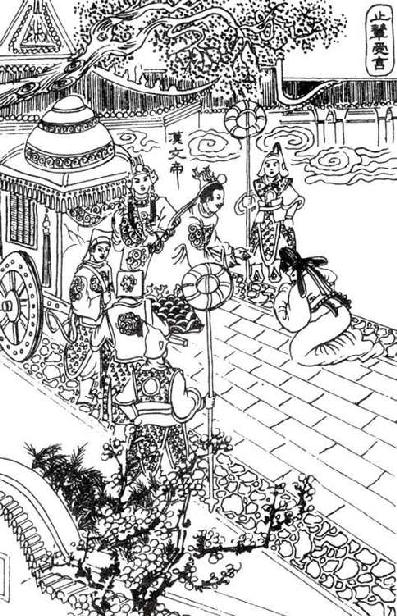
止辇受言，选自《帝鉴图说》。
十二月，上曰：“法者，治之正【正：原则，标准。】 也，所以禁暴而率善人也。今犯法已论，而使毋罪之父母妻子同产坐之，及为收帑【收帑：将罪犯的子女罚为官奴。】 ，朕甚不取。其议之。”有司皆曰：“民不能自治，故为法以禁之。相坐坐收，所以累其心，使重犯法，所从来远矣。如故便。”上曰：“朕闻法正则民悫【悫：忠厚。】 ，罪当则民从。且夫牧民【牧民：治理民众。】 而导之善者，吏也。其既不能导，又以不正之法罪之，是反害于民为暴者也。何以禁之？朕未见其便，其孰计之。”有司皆曰：“陛下加大惠，德甚盛，非臣等所及也。请奉诏书，除收帑诸相坐律令。”
十二月，文帝说：“法令，是治理国家的准则，可以用来禁止暴行，并且劝人向善。现在犯法的人定罪后，却要连累他们无罪的父母妻儿和兄弟一同受罚，还要罚没其子女为官奴，我认为这种做法很不可取。群臣讨论一下。”有关部门的官员都说：“民众不能自行治理，所以制定法令来约束他们。受连累的家属也要被逮捕，就是要使人们心有牵挂，使他们慎重看待触犯法律的事情，这种做法由来已久了。还是遵照原来的做法更适宜。”文帝说：“我听说法令公正则百姓忠厚，量刑得当则百姓顺服。况且治理百姓而劝人向善的人，是官吏。如果官吏既不能劝导百姓，又使用不公正的法令来处罚他们，这是反而对百姓有害而逼迫他们去做坏事。用什么来禁止呢？我没有看出来为什么适宜，群臣再详细考虑一下。”有关部门的官员都说：“陛下的恩惠浩大，功德隆盛，不是我们所能想到的。我们遵奉诏书，废除将无罪的家属罚为官奴的法令。”
正月，有司言曰：“蚤【蚤：通“早”。】 建太子，所以尊宗庙。请立太子。”上曰：“朕既不德，上帝神明未歆享【歆享：神灵享用祭品。】 ，天下人民未有嗛志【嗛志：满意。】 。今纵不能博求天下贤圣有德之人而禅天下焉，而曰豫【豫：通“预”。】 建太子，是重吾不德也。谓天下何？其安之。”有司曰：“豫建太子，所以重宗庙社稷，不忘天下也。”上曰：“楚王，季父也，春秋高，阅天下之义理多矣，明于国家之大体。吴王于朕，兄也，惠仁以好德。淮南王，弟也，秉德以陪朕。岂为不豫哉！诸侯王、宗室昆弟、有功臣，多贤及有德义者，若举有德以陪朕之不能终，是社稷之灵，天下之福也。今不选举焉，而曰必子，人其以朕为忘贤有德者而专于子，非所以忧天下也。朕甚不取也。”有司皆固请曰：“古者殷周有国，治安皆千余岁，古之有天下者莫长焉，用此道也。立嗣必子，所从来远矣。高帝亲率士大夫，始平天下，建诸侯，为帝者太祖。诸侯王及列侯始受国者皆亦为其国祖。子孙继嗣，世世弗绝，天下之大义也，故高帝设之以抚海内。今释宜建而更选于诸侯及宗室，非高帝之志也。更议不宜。子某【某：据《汉书》，应为启，即汉景帝。】 最长，纯厚慈仁，请建以为太子。”上乃许之。因赐天下民当代父后者爵各一级。封将军薄昭为轵侯。
正月，有关部门的官员进言说：“早立太子，以此尊奉宗庙。请求立太子。”文帝说：“我德行浅薄，天帝神明还没有享用祭品，天下人民还没有感到满意。现在我纵然不能遍寻天下贤能圣明有德的人而把天下禅让给他，却说要预先立太子，这会使我的德行更加浅薄。我怎么对天下人说？这件事暂时搁置。”官员说：“预先立太子，就是要尊崇宗庙和社稷，表示不忘天下人民。”文帝说：“楚王，是我的叔父，他年纪大，懂得很多天下的道理了，明白国家的大体。吴王，是我的兄长，慈惠仁爱而喜好道德。淮南王，是我的弟弟，持守道德来辅佐我。他们难道不是预先确立的继承人吗？诸侯王、宗室兄弟、有功之臣，很多贤能和有德义的人，如果推举有德之人来辅佐我完成未竟的事业，这是社稷的好事，是天下的福分。现在不推举他们，而说一定要立自己的儿子，人们就会认为我忘记了贤能有德的人，而只想着自己的儿子，不是为天下人分忧的做法。我认为这样做很不可取。”官员都坚决请求说：“古时候殷商和周朝创建国家，长治久安一千多年，古时候得天下的朝代没有比这更长久的了，因为这两个朝代的帝王所选的继承人一定是自己的儿子，这是由来已久的了。高帝亲自率领文臣武将，刚平定天下，就创建诸侯国，成为本朝帝王的太祖。最初接受封国的诸侯王和列侯也是各国的始祖。子孙继承嗣位，世代不会断绝，这是天下的大义，所以高帝设立这一制度来安定海内人心。现在放弃应当遵守的，却另选诸侯和宗室人，这不是高帝的本意。再议论也不合适。皇子刘启最年长，纯厚仁慈，请求立他为太子。”文帝于是同意了。于是赏赐天下百姓中应当做父亲嗣子的人各晋升爵位一级。封将军薄昭为轵侯。
三月，有司请立皇后。薄太后曰：“诸侯皆同姓，立太子母为皇后。”皇后姓窦氏。上为立后故，赐天下鳏寡孤独【鳏寡孤独：年老无妻为鳏，年老无夫为寡，年幼丧父为孤，年老无子为独。】 穷困及年八十已上孤儿九岁已下布帛米肉各有数。上从代来，初即位，施德惠天下，填抚诸侯四夷皆洽驩，乃循从代来功臣。上曰：“方大臣之诛诸吕迎朕，朕狐疑【狐疑：犹豫不决。】 ，皆止朕，唯中尉宋昌劝朕，朕以得保奉宗庙。已尊昌为卫将军，其封昌为壮武侯。诸从朕六人，官皆至九卿。”
上曰：“列侯从高帝入蜀、汉中者六十八人皆益封各三百户，故吏二千石以上从高帝颍川守尊等十人食邑六百户，淮阳守申徒嘉等十人五百户，卫尉定等十人四百户。封淮南王舅父赵兼为周阳侯，齐王舅父驷钧为清郭侯。”秋，封故常山丞相蔡兼为樊侯。
人或说右丞相曰：“君本诛诸吕，迎代王，今又矜其功，受上赏，处尊位，祸且及身。”右丞相勃乃谢病免罢，左丞相平专为丞相。
三月，有关部门的官员请求立皇后。薄太后说：“诸侯都是同姓，立太子的母亲为皇后。”皇后姓窦氏。文帝因为册立皇后的缘故，赐给天下鳏寡孤独贫穷困苦的人以及八十岁以上的老人和九岁以下的孤儿布帛米肉各有定额。文帝从代国来到长安，刚即位，就对天下百姓施行恩惠，安抚诸侯和四方部族使其和睦欢欣，于是依次封赏从代国来的功臣。文帝说：“大臣诛灭吕氏迎接我来即位时，我犹豫不决，群臣都阻止我，只有中尉宋昌鼓励我，我才得以尊奉宗庙。我已经提拔宋昌为卫将军，现在封他为壮武侯。另外随我前来的六个人，官职都提拔为九卿。”
文帝说：“跟随高帝去蜀郡、汉中的列侯六十八个人加封食邑各三百户，过去追随高帝的二千石以上官吏颍川郡守刘尊等十个人封赏食邑各六百户，淮阳郡守申徒嘉等十个人封赏食邑各五百户，卫尉定等十个人封赏食邑各四百户。封淮南王的舅父赵兼为周阳侯，封齐王的舅父驷钧为清郭侯。”秋季，文帝封原常山国丞相蔡兼为樊侯。
有人劝右丞相说：“您本来诛杀吕氏，迎接代王，现在又自夸功高，受到最高的赏赐，居处尊显的地位，将要大难临头。”右丞相周勃于是称病免职，由左丞相陈平独自担任丞相。
二年十月，丞相平卒，复以绛侯勃为丞相。上曰：“朕闻古者诸侯建国千余，各守其地，以时入贡，民不劳苦，上下驩欣，靡有遗德【遗德：未受重用的贤人。】 。今列侯多居长安，邑远，吏卒给输费苦，而列侯亦无由教驯其民。其令列侯之国，为吏及诏所止者，遣太子。”
十一月晦，日有食之。十二月望【望：望日，即每个月的十五日。】
，日又食。上曰：“朕闻之，天生蒸【蒸：通“烝”，众多。】
民，为之置君以养治之。人主不德，布政不均，则天示之以菑zāi【菑：通“灾”。】
，以诫不治。乃十一月晦，日有食之，适zhè【适：通“谪”，惩罚。】
见于天，菑孰大焉！朕获保宗庙，以微眇之身托于兆民君王之上，天下治乱，在朕一人，唯二三执政犹吾股肱也。朕下不能理育群生，上以累三光【三光：又称三辰，指日、月、星。】
之明，其不德大矣。令至，其悉思朕之过失，及知见思之所不及，匄【匄：乞，求。】
以告朕。及举贤良方正能直言极谏者，以匡朕之不逮。因各饬其任职，务省繇费以便民。朕既不能远德，故 然【
然【
 然：戒惧不安的样子。】
念外人之有非，是以设备未息。今纵不能罢边屯戍，而又饬兵厚卫，其罢卫将军军。太仆见马遗财【财：通“才”。】
足，余皆以给传置【传置：驿站。】
。”
然：戒惧不安的样子。】
念外人之有非，是以设备未息。今纵不能罢边屯戍，而又饬兵厚卫，其罢卫将军军。太仆见马遗财【财：通“才”。】
足，余皆以给传置【传置：驿站。】
。”
二年（前178年）十月，丞相陈平去世，朝廷重新任命绛侯周勃为丞相。文帝说：“我听说古时候的诸侯创建了一千多个国家，他们各自守卫封地，按时入朝进贡，百姓不会劳苦，上下欢欣喜悦，没有未受重用的贤人。现在列侯大多居住在长安，远离封邑，官吏和士卒供给运输当地的赋税有损耗又辛苦，而列侯也无法教导各自的民众。命令列侯回到各自的封国，在朝中担任官职以及有诏令准许留下的，要派太子回去。”
十一月晦日，发生了日食。十二月望日，又发生了日食。文帝说：“我听说，上天生育万民，为他们设置君主来抚养和管理他们。如果君主不仁德，施政不公平，上天就会显现灾异，来告诫他天下治理得不好。于是在十一月晦日，发生了日食，上天显现对我的责罚，没有比这更严重的灾难了！我能够保全宗庙，凭借渺小的身躯被万民和诸侯抬举在上，天下的安定与混乱，取决于我一个人，众位执掌国政的大臣就像我的左膀右臂。我对下不能治理和养育众生，对上又拖累三辰的光辉，我的不仁德实在太严重了。接到诏令后，众位大臣要认真思考我的过失，以及我见闻思虑所不能及的方面，请告诉我。还要推选贤良方正能够直言进谏的人，来纠正我的过失。各级官吏趁机各自整饬职事，务求减省徭役和费用来方便百姓。我已经不能将恩德布施远方，所以心里忧虑不安，担心远方之人为非作歹，因此从来没有停止边防事务。现在纵然不能撤除边塞的屯戍，却又命令增加军队来保护宫廷，应该撤销卫将军的军队。太仆现有马匹只留下够用的就可以了，其余的都交给驿站使用。”
正月，上曰：“农，天下之本，其开籍田【籍田：天子亲自耕种的田。】 ，朕亲率耕，以给宗庙粢盛【粢盛：盛放在礼器内供祭祀用的谷物。】 。”
三月，有司请立皇子为诸侯王。上曰：“赵幽王幽死，朕甚怜之，已立其长子遂为赵王。遂弟辟强及齐悼惠王子朱虚侯章、东牟侯兴居有功，可王。”乃立赵幽王少子辟强为河间王，以齐剧郡【剧郡：政务繁忙的郡，即大郡。】 立朱虚侯为城阳王，立东牟侯为济北王，皇子武为代王，子参为太原王，子揖为梁王。
上曰：“古之治天下，朝有进善之旌，诽谤之木，所以通治道而来谏者。今法有诽谤妖言之罪，是使众臣不敢尽情，而上无由闻过失也。将何以来远方之贤良？其除之。民或祝诅上以相约结而后相谩【谩：欺骗。】 ，吏以为大逆，其有他言，而吏又以为诽谤。此细民之愚无知抵死，朕甚不取。自今以来，有犯此者勿听治。”
九月，初与郡国守相【郡国守相：即郡守国相。西汉郡国并行，一郡之长为太守，国分王国、侯国两级，王国与郡平级，侯国与县平级，诸侯国设相治民，级别与郡守、县令相同。】 为铜虎符、竹使符。
正月，文帝说：“农业，是天下的根本，现在开垦籍田，我亲自带头耕种，来供给宗庙祭祀所用的谷物。”
三月，有关部门的官员请求封皇子为诸侯王。文帝说：“赵幽王被幽禁而死，我非常怜悯他，已经立他的长子刘遂为赵王。刘遂的弟弟刘辟强以及齐悼惠王的儿子朱虚侯刘章、东牟侯刘兴居有功，也可以封王。”于是封赵幽王的小儿子刘辟强为河间王，用齐国的大郡封朱虚侯为城阳王，封东牟侯为济北王，封皇子刘武为代王，封皇子刘参为太原王，封皇子刘揖为梁王。
文帝说：“古时候治理天下，朝廷设置进献善言的旌旗，批评朝政的木柱，以此保持治国之道的畅通，并且鼓励直言进谏。现在法令中有诽谤朝政和妖言惑众的罪名，这使群臣不敢畅所欲言，并且皇帝也无法得知自己的过失。这样怎么能招来远方的贤良之士呢？应当废除这一法令。百姓当中有人诅咒皇帝而约定相互隐瞒，后来却相互欺骗，官吏认为这是大逆不道，再有别的言论，官吏又认为是诽谤朝政。因为小民的愚昧无知而将其判处死刑，我认为非常不可取。从今以后，有犯这类罪行的不要受理治罪。”
九月，朝廷开始授予郡国守相铜虎符、竹使符。
三年十月丁酉晦，日有食之。
十一月，上曰：“前日诏遣列侯之国，或辞未行。丞相朕之所重，其为朕率列侯之国。”绛侯勃免丞相就国。以太尉颍阴侯婴为丞相。罢太尉官，属丞相。
四月，城阳王章薨。淮南王长与从者魏敬杀辟阳侯审食其。
五月，匈奴入北地，居河南【河南：指河套以南地区。】 为寇。帝初幸甘泉。六月，帝曰：“汉与匈奴约为昆弟，毋使害边境，所以输遗匈奴甚厚。今右贤王离其国，将众居河南降地，非常故，往来近塞，捕杀吏卒，驱保塞蛮夷，令不得居其故，陵轹lì边吏，入盗，甚敖【敖：通“傲”，狂傲。】 无道，非约也。其发边吏骑八万五千诣高奴，遣丞相颍阴侯灌婴击匈奴。”匈奴去，发中尉材官【材官：秦汉时始置的一种地方预备兵种。】 属卫将军，军长安。
辛卯，帝自甘泉之高奴，因幸太原，见故群臣，皆赐之。举功行赏，诸民里赐牛酒。复晋阳、中都民三岁。留游太原十余日。
济北王兴居闻帝之代，欲往击胡，乃反，发兵欲袭荥阳。于是诏罢丞相兵，遣棘蒲侯陈武为大将军，将十万往击之。祁侯贺为将军，军荥阳。七月辛亥，帝自太原至长安，乃诏有司曰：“济北王背德反上，诖误【诖误：连累。】 吏民，为大逆。济北吏民兵未至先自定，及以军地邑降者，皆赦之，复官爵。与王兴居去来，亦赦之。”
八月，破济北军，虏其王。赦济北诸吏民与王反者。
三年（前177年）十月丁酉晦日，发生了日食。
十一月，文帝说：“此前下诏让列侯回到封国，有的人找借口不走。丞相是我所器重的人，希望丞相为我率领列侯回到封国。”绛侯周勃免去丞相官职回到封国。文帝任命太尉颍阴侯灌婴为丞相。撤销太尉一职，把太尉职权归于丞相。
四月，城阳王刘章去世。淮南王刘长和随从魏敬杀死辟阳侯审食其。
五月，匈奴进入北地郡，占据河南地区进行劫掠。文帝初次来到甘泉宫。六月，文帝说：“汉朝和匈奴结为兄弟，是为了不让他们侵害边境，所以送给匈奴的财物非常丰厚。现在右贤王离开他的国土，率领部众占据已经归属汉朝的河南地区，不是正常的状态，往来逼近边塞，逮捕杀害官吏和士卒，驱逐保卫边塞的蛮夷，不让他们居住在原来的地方，欺凌边防官吏，进犯劫掠，非常傲慢，不守正道，破坏盟约。现在调发守边的官吏和骑兵八万五千人前往高奴，派丞相颍阴侯灌婴率领军队攻打匈奴。”匈奴离去，文帝调发中尉材官归属卫将军，驻扎在长安。
辛卯日，文帝从甘泉宫前往高奴，顺便来到太原，接见原来代国的群臣，都给予赏赐。根据功劳施行奖赏，赐给百姓酒肉。免除晋阳、中都百姓三年的赋役。文帝在太原巡游十几天。
济北王刘兴居听说文帝前往代国，想要出击匈奴，于是反叛，派军队想要袭击荥阳。于是文帝下诏撤回丞相的军队，派棘蒲侯陈武为大将军，率领十万大军前去讨伐叛军。祁侯缯贺担任将军，驻扎在荥阳。七月辛亥日，文帝从太原回到长安，就下诏命令有关部门的官员说：“济北王违背恩德，背叛皇帝，连累属下官吏和百姓，这是大逆不道。济北国的官吏和百姓在大军没有到达时自行归顺，以及率领军队或献出城邑投降的人，一律赦免，恢复官职和爵位。追随济北王刘兴居而后来归顺的人，也赦免。”
八月，汉军打败济北军，俘虏济北王。文帝赦免济北国跟随济北王反叛的官吏和百姓。
六年，有司言淮南王长废先帝法，不听天子诏，居处毋度，出入拟于天子，擅为法令，与棘蒲侯太子奇谋反，遣人使闽越及匈奴，发其兵，欲以危宗庙社稷。群臣议，皆曰：“长当弃市【弃市：在闹市执行死刑，表示与众共弃。】 。”帝不忍致法于王，赦其罪，废勿王。群臣请处王蜀严道、邛qióng都，帝许之。长未到处所，行病死，上怜之。后十六年，追尊淮南王长谥为厉王，立其子三人为淮南王、衡山王、庐江王。
六年（前174年），有关部门的官员报告淮南王刘长废弃先帝的法令，不听天子的诏令，他所居处的宫室规格超过限度，出入的排场近似天子，擅自制定法令，与棘蒲侯的太子陈奇谋划反叛，派人出使闽越和匈奴，调发当地的军队，想要危害宗庙社稷。群臣经过商议，都说：“应当把刘长当众处死。”文帝不忍心对淮南王用刑，赦免了他的死罪，废黜了他的王位。群臣请求把淮南王流放到蜀郡的严道、邛都一带，文帝批准了。刘长没有到达流放地，就病死在路上，文帝很怜悯他。后来到十六年（前164年），追尊刘长为淮南王，谥号为厉王，封他的三个儿子为淮南王、衡山王、庐江王。
十三年夏，上曰：“盖闻天道祸自怨起而福繇德兴。百官之非，宜由朕躬。今秘mì祝【秘祝：官名，负责为官府祈祝。】 之官移过于下，以彰吾之不德，朕甚不取。其除之。”
五月，齐太仓令【太仓令：官名，主管国家粮食储备。】 淳于公有罪当刑，诏狱逮徙系长安。太仓公无男，有女五人。太仓公将行会逮，骂其女曰：“生子不生男，有缓急非有益也！”其少女缇tí萦yíng自伤泣，乃随其父至长安，上书曰：“妾父为吏，齐中皆称其廉平，今坐法当刑。妾伤夫死者不可复生，刑者不可复属，虽复欲改过自新，其道无由也。妾愿没入为官婢，赎父刑罪，使得自新。”书奏天子，天子怜悲其意，乃下诏曰：“盖闻有虞氏之时，画衣冠异章服以为僇lù【僇：羞辱，引申为惩罚。】 ，而民不犯。何则？至治也。今法有肉刑三【肉刑三：指黥面、劓鼻、刖足。】 ，而奸不止，其咎安在？非乃朕德薄而教不明欤？吾甚自愧，故夫驯道不纯而愚民陷焉。《诗》【《诗》：指《诗经·大雅·泂酌》。】 曰：‘恺悌【恺悌：平易和乐。】 君子，民之父母。’今人有过，教未施而刑加焉，或欲改行为善而道毋由也。朕甚怜之。夫刑至断支体，刻肌肤，终身不息，何其楚痛而不德也，岂称为民父母之意哉！其除肉刑。”
上曰：“农，天下之本，务莫大焉。今勤身从事而有租税之赋，是为本末【本末：农为本，工商为末。】 者毋以异，其于劝农之道未备。其除田之租税。”
十三年（前167年）夏季，文帝说：“我听说灾祸从怨恨产生，福运由仁德兴起，这样符合天道。百官的过错，应该由我来承担责任。现在秘祝官把过错都推给下级，因此彰显了我的不仁德，我认为很不可取。废弃这一官职。”
五月，齐国太仓令淳于公犯罪应当受刑，朝廷下诏将他逮捕押解到长安拘禁。太仓公没有儿子，只有五个女儿。太仓公将要被押走时，骂他的女儿说：“生孩子而没有儿子，遇到紧急情况就一点用处都没有。”他的小女儿缇萦独自伤心地哭泣，并且跟随父亲来到长安，向朝廷上书说：“我父亲做官，齐国人都称赞他廉洁公正，现在犯法应当受刑。我悲伤的是，死去的人不能再活过来，受刑的人肢体不能复合，即使想要改过自新，也没有别的办法了。我愿意被罚为官奴，来为父亲赎罪，让他能够改过自新。”缇萦的上书送到天子那里，天子怜悯她的孝心，就下诏说：“听说在有虞氏的时候，在罪犯的衣帽上画相应刑罚的图案，使其区别于普通人的服饰，以此惩罚他们，可是民众不会违犯法令。这是为什么呢？因为当时是太平盛世。现在的法令中有三种肉刑，可是不能禁止人们犯法，其中的过错在哪里呢？不就是因为我的德行浅薄而教化不明吗？我为自己感到惭愧，所以训导方法不完善导致愚昧小民陷入不法的境地。《诗》说：‘和乐君子，为民父母。’现在人们犯了罪，还没有进行教化就先施以刑罚，即使有人想要改过向善也没有机会了。我非常怜悯他们。刑罚导致肢体残缺，在肌肤上刺字，终身不能恢复，多么令人痛苦而且不道德，怎么能符合为人父母的心意呢！应该废除肉刑。”
文帝说：“农业，是天下的根本，没有比这更重要的事务了。现在人们辛勤劳作却要交纳租税，这就使从事本业和末业的人没有区别了，这是由于鼓励农耕的方法还不完备。应该减免农田的租税。”
十四年冬，匈奴谋入边为寇，攻朝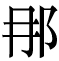 塞，杀北地都尉卬。上乃遣三将军军陇西、北地、上郡，中尉周舍为卫将军，郎中令张武为车骑将军，军渭北，车千乘，骑卒十万。帝亲自劳军，勒兵申教令，赐军吏卒。帝欲自将击匈奴，群臣谏，皆不听。皇太后固要帝，帝乃止。于是以东阳侯张相如为大将军，成侯赤为内史，栾布为将军，击匈奴。匈奴遁走。
春，上曰：“朕获执牺牲圭币以事上帝宗庙，十四年于今，历日绵长，以不敏不明而久抚临天下，朕甚自愧。其广增诸祀墠shàn场【墠场：祭祀用的坛场。】 圭币。昔先王远施不求其报，望祀不祈其福，右贤左戚【右贤左戚：右为上，左为下。】 ，先民后己，至明之极也。今吾闻祠官祝厘【厘：通“禧”，福运，吉祥。】 ，皆归福朕躬，不为百姓，朕甚愧之。夫以朕不德，而躬享独美其福，百姓不与焉，是重吾不德。其令祠官致敬，毋有所祈。”
是时北平侯张苍为丞相，方明律历。鲁人公孙臣上书陈终始传五德事，言方今土德时，土德应黄龙见，当改正朔服色制度。天子下其事与丞相议。丞相推以为今水德，始明正十月上黑事，以为其言非是，请罢之。
十四年（前166年）冬季，匈奴谋划进入边境劫掠，攻打朝 塞，杀死北地都尉孙卬。文帝于是派三位将军分别驻扎在陇西、北地、上郡，任命中尉周舍为卫将军，郎中令张武为车骑将军，驻扎在渭水以北，拥有战车一千辆，骑兵十万人。文帝亲自慰劳士卒，整饬军队申明训令，赏赐全军将士。文帝想要亲自率领士兵攻打匈奴，群臣劝阻，文帝一概不听。皇太后坚决阻止文帝，文帝才作罢。于是他任命东阳侯张相如为大将军，成侯董赤为内史，栾布为将军，出兵攻打匈奴。匈奴逃跑了。
春季，文帝说：“我得以用牺牲和玉帛来祭祀天帝和宗庙，到现在已经十四年，时间算是很长久了，我不勤敏不明智却能长期治理天下，为此深感惭愧。应该扩建坛场，增设祭品。过去先王远施恩惠而不求回报，遥祭山川而不为祈福，尊崇贤才，不重亲戚，先为民众考虑，后为自己考虑，圣明到了极点。现在我听说主管祭祀的官吏向神灵祈福，都归于我一个人，却不为百姓考虑，我为此深感惭愧。像我这样德行浅薄的人，却独享神灵的福祉，百姓却不能享受，这就使我的德行更加浅薄。现在命令主管祭祀的官吏向神表达敬意，不要为我祈求。”
当时北平侯张苍担任丞相，正在制定乐律和历法。鲁郡人公孙臣上书讲述五德终始的学说，提出现在是土德，土德与黄龙出现相应验，应当更改历法和服饰等制度。天子把这件事下交丞相与群臣讨论。丞相研究后认为当今是水德，开始规定以十月为岁首和服饰崇尚黑色，认为公孙臣的学说不正确，请求不要采纳。
十五年，黄龙见成纪，天子乃复召鲁公孙臣，以为博士，申明土德事。于是上乃下诏曰：“有异物之神见于成纪，无害于民，岁以有年。朕亲郊祀上帝诸神。礼官议，毋讳以劳朕。”有司礼官皆曰：“古者天子夏躬亲礼祀上帝于郊，故曰郊。”于是天子始幸雍，郊见五帝，以孟夏四月答礼焉。赵人新垣平以望气【望气：观看云气预测吉凶的一种方术。】 见，因说上设立渭阳五庙，欲出周鼎，当有玉英【玉英：玉的精华。】 见。
十六年，上亲郊见渭阳五帝庙，亦以夏答礼而尚赤。
十五年（前165年），有黄龙出现在成纪，天子于是再次召见鲁郡的公孙臣，任命他为博士，让他阐明土德的相关学说。于是文帝下达诏书说：“有怪异的神物出现在成纪，没有伤害百姓，今年的收成很好。我要亲自到郊外去祭祀天帝和众神。掌管礼仪的官员商议一下，不要担心我劳累。”掌管礼仪的官员都说：“古时候天子在夏季亲自到郊外按照礼仪祭祀天帝，所以称为郊祭。”于是文帝第一次亲临雍县，郊祭五帝，在孟夏四月答谢上天降下祥瑞。赵国人新垣平因为善于望气之术受到召见，趁机劝说文帝在渭阳修建五帝庙，想要使周朝的九鼎重新出现，还会有玉石的精华出现。
十六年（前164年），文帝亲自到渭阳的五帝庙举行郊祭，也在夏季答谢上天降下祥瑞，而服饰崇尚红色。
十七年，得玉杯，刻曰“人主延寿”。于是天子始更为元年【始更为元年：即改元。最初没有年号，仅以帝王在位时间纪年，新君即位后改称元年。战国时期，魏惠王、秦惠文王称王时改元，开创了因重大事件改元的先例。汉文帝因“人主延寿”祥瑞改元，为年号的产生提供了理论依据。汉景帝时则两次改元。汉武帝十八年，狩猎时捕获一只独角兽，于是第二年称元狩元年，是为史上第一个年号。】 ，令天下大酺。其岁，新垣平事觉，夷三族。
后二年，上曰：“朕既不明，不能远德，是以使方外之国或不宁息。夫四荒之外不安其生，封畿之内勤劳不处，二者之咎，皆自于朕之德薄而不能远达也。间者累年，匈奴并暴边境，多杀吏民，边臣兵吏又不能谕吾内志，以重吾不德也。夫久结难连兵，中外【中外：中央和地方，泛指天下。】 之国将何以自宁？今朕夙兴夜寐，勤劳天下，忧苦万民，为之怛惕不安，未尝一日忘于心。故遣使者冠盖相望【冠盖相望：指冠帽和车盖相连，形容使者往来不断。】 ，结轶【轶：通“辙”，车轮压出的痕迹。】 于道，以谕朕意於单于【单于：匈奴首领的称号，此时为老上单于，名稽粥。】 。今单于反古之道，计社稷之安，便万民之利，亲与朕俱弃细过，偕之大道，结兄弟之义，以全天下元元之民。和亲已定，始于今年。”
十七年（前163年），文帝得到一个玉杯，上面刻有“人主延寿”。于是文帝开始把当年改为元年，下令天下百姓聚会宴饮。当年，新垣平的阴谋败露，诛灭三族。
后元二年（前162年），文帝说：“我不够明智，不能把恩德推广到远方，所以使境外的有些国家不能安定和睦。四方边远地区的百姓不能安居乐业，境内的百姓辛勤劳苦不得休息，这两方面的过错，都是由于我的德行浅薄不能泽及远方。最近连续几年，匈奴都来祸害边境，杀死很多官吏和百姓，守边的官兵又不能告谕匈奴我的想法，使我的德行更加浅薄。这样长期结怨交战，天下各国将凭借什么各自安宁呢？现在我早起晚睡，为天下大事操劳，为亿万百姓忧虑，心里惶恐不安，不曾有一天忘记这件事情。所以我派出的使者往来不断，车马络绎不绝，来告谕单于我的想法。现在单于回到以往友好相处的道路上来，考虑国家的安宁，为民众谋求利益，亲自和我忘却小过节，共同走在大道上，结下兄弟般的情谊，以保全天下亿万百姓。已经决定和亲，从今年开始。”
后六年冬，匈奴三万人入上郡，三万人入云中。以中大夫令勉为车骑将军，军飞狐；故楚相苏意为将军，军句注；将军张武屯北地；河内守周亚夫为将军，居细柳；宗正刘礼为将军，居霸上；祝兹侯【祝兹侯：据《汉书·文帝纪》，此人为徐厉。据《史记·惠景间侯者年表》，徐厉的封号应为松兹侯。吕后封吕荣为祝兹侯，诸吕之乱平定后，祝兹侯国废为县，直到汉武帝时才封刘延年为祝兹侯，因此汉文帝时无祝兹侯。】 军棘门，以备胡。数月，胡人去，亦罢。
天下旱，蝗。帝加惠：“令诸侯毋入贡，弛山泽，减诸服御狗马，损郎吏员，发仓庾以振贫民，民得卖爵。”
孝文帝从代来，即位二十三年，宫室、苑囿、狗马、服御无所增益，有不便，辄弛以利民。尝欲作露台，召匠计之，直百金。上曰：“百金中民十家之产，吾奉先帝宫室，常恐羞之，何以台为！”上常衣绨tí【绨：一种粗厚光滑的丝织品。】 衣，所幸慎夫人，令衣不得曳地，帏帐不得文绣，以示敦朴，为天下先。治霸陵【霸陵：汉文帝的陵墓。】 皆以瓦器，不得以金银铜锡为饰，不治坟，欲为省，毋烦民。南越王尉佗【尉佗：赵佗，原为秦朝南海郡尉。】 自立为武帝，然上召贵尉佗兄弟，以德报之，佗遂去帝称臣。与匈奴和亲，匈奴背约入盗，然令边备守，不发兵深入，恶烦苦百姓。吴王诈病不朝，就赐几杖【几杖：凭几和手杖，供老年人倚靠和扶持的器物。】 。群臣如袁盎等称说虽切，常假借【假借：宽容。】 用之。群臣如张武等受赂遗金钱，觉，上乃发御府金钱赐之，以愧其心，弗下吏。专务以德化民，是以海内殷富，兴于礼义。
后元六年（前158年）冬季，匈奴三万人进入上郡，三万人进入云中。文帝任命中大夫令勉为车骑将军，驻扎在飞狐；任命原楚国相苏意为将军，驻扎在句注；命令将军张武屯守北地；任命河内郡守周亚夫为将军，驻扎在细柳；任命宗正刘礼为将军，驻军霸上；命令松兹侯驻扎在棘门，以此防备胡人。几个月后，胡人撤离，各路军队也撤退。
天下大旱，蝗虫成灾。文帝施加恩惠：“命令诸侯不要入朝进贡，开放山林湖泽，减省服饰车驾和狗马等物，裁减郎官的名额，打开粮仓来赈济贫苦百姓，允许民间买卖爵位。”
孝文帝从代国来到长安，在位二十三年，宫室、苑囿、狗马、服饰、车驾都没有增加过，有对百姓不便的禁令，就废止来便利百姓。文帝曾经想要修建露台，召来工匠计算费用，价值一百金。文帝说：“一百金相当于十户中等人家的产业，我奉守先帝的宫室，经常担心使先帝蒙羞，还修建露台做什么呢？”文帝平时穿着粗丝衣服，他所宠爱的慎夫人，也不准穿拖地的衣服，宫室的帷帐不准刺绣花纹，以此表示敦厚俭朴，为天下做表率。文帝修建霸陵，随葬品都用瓦器，不准使用金银铜锡为装饰，不修筑高大的坟丘，想要节省财物，不去烦扰百姓。南越王赵佗自立为武帝，然而文帝却征召他的兄弟赐予爵禄，用恩德回报他，赵佗于是取消帝号向汉朝称臣。汉朝与匈奴和亲，匈奴违背约定入境劫掠，然而文帝只是命令边塞加强守备，不出兵深入匈奴境内，担心会烦扰百姓。吴王谎称生病不来朝见，文帝顺便赐给他凭几和手杖。群臣之中如袁盎等人进谏的言辞虽然激烈，但是文帝经常宽容地采纳他们的建议。群臣之中如张武等人接受别人馈赠的金钱，被发现后，文帝就把宫中府库里的金钱赏赐给他们，以此使他们内心感到羞愧，而不交给官吏治罪。文帝致力于用道德教化臣民，因此四海之内殷实富足，礼仪道义盛行于世。
顾炎武：“史言文帝治霸陵皆以瓦器，不以金银铜锡为饰，刘向亦以孝文薄葬。然考《张汤传》，武帝时已有盗发孝文葬钱者；而晋建兴中盗发汉霸、杜二陵，多获珍宝。盖自春秋以来，厚葬之俗，虽以孝文之明达俭约，犹不能尽除，而史所书未必尽实录也。”
后七年六月己亥，帝崩于未央宫。遗诏曰：“朕闻盖天下万物之萌生，靡不有死。死者天地之理，物之自然者，傒可甚哀！当今之时，世咸嘉生而恶死，厚葬以破业，重服【重服：过度地服丧。】 以伤生，吾甚不取。且朕既不德，无以佐百姓。今崩，又使重服久临，以离寒暑之数，哀人之父子，伤长幼之志，损其饮食，绝鬼神之祭祀，以重吾不德也，谓天下何！朕获保宗庙，以眇眇之身讬于天下君王之上，二十有余年矣。赖天地之灵，社稷之福，方内安宁，靡有兵革。朕既不敏，常畏过行，以羞先帝之遗德，维年之久长，惧于不终。今乃幸以天年，得复供养于高庙。朕之不明与嘉之，其傒哀悲之有！其令天下吏民，令到出临三日，皆释服【释服：脱去丧服。】 。毋禁取妇、嫁女、祠祀、饮酒、食肉者。自当给丧事服临者，皆无践【践：通“跣”，赤足。】 。绖带【绖带：束腰的麻带。】 无过三寸，毋布车及兵器，毋发民男女哭临宫殿。宫殿中当临者，皆以旦夕各十五举声，礼毕罢。非旦夕临时，禁毋得擅哭。已下，服大红gōng【大红：大功，丧服的一种，以熟麻制成，较小功粗。下文的“小红”即“小功”。古代丧服按照血缘亲疏关系，分为齐缞、斩缞、大功、小功、缌麻五种，齐缞最重，缌麻最轻。】 十五日，小红十四日，纤【纤：细麻布丧服，即缌麻。】 七日，释服。佗不在令中者，皆以此令比率从事。布告天下，使明知朕意。霸陵山川因其故，毋有所改。归夫人以下至少使。”令中尉亚夫为车骑将军，属国悍为将屯将军，郎中令武为复土将军，发近县见卒万六千人，发内史卒万五千人，藏郭【郭：开凿墓穴。】 、穿【穿：挖土。】 、复土【复土：下葬后以土覆盖棺椁。】 属将军武。
乙巳，群臣皆顿首上尊号曰孝文皇帝。
后元七年（前157年）六月己亥日，文帝在未央宫去世。遗诏说：“我听说大概天下万物的萌发生长，没有不死亡的。死亡是天地之间的常理，是世间万物的自然规律，有什么值得过分悲哀的呢！当今时代，世人都好生而恶死，死后却要厚葬来败光家产，过度服丧来伤害身体，我认为很不可取。况且我德行浅薄，无法扶助百姓。现在去世了，又让人们过度服丧长期致哀，来遭受严寒酷暑的折磨，使别人家的父子为我悲哀，伤害长幼的心灵，减少他们的饮食，禁止对鬼神的祭祀，使我的德行更加浅薄，怎么向天下人交代呢！我能够奉守宗庙，凭借渺小的身躯被天下诸侯王抬举在上，已经有二十多年了。仰仗天地的威灵，社稷的福祉，才使得国内安宁，没有战乱。我不够勤敏，经常担心行为有过失，使先帝遗留下的美德蒙受耻辱，时间长了，害怕不能善终。现在竟然有幸享尽天年，得以再被供奉在高庙里。我不贤明却能有善终，有什么可悲哀的呢！现在命令天下的官吏和百姓，命令下达后出门致哀三天，然后都脱去丧服。不要禁止娶妻、嫁女、祭祀、饮酒、吃肉。本来就应当参加丧礼身穿丧服致哀的人，都不要赤脚。丧服的麻带宽度不要超过三寸，不要陈设车驾和兵器，不要发动民间男女来宫中痛哭致哀。宫中应当致哀的人，都在每天早晚各哭十五声，行礼完毕就停止。不是早晚应当致哀的时刻，不准擅自哭泣。下葬之后，应当穿大功服丧九个月的只穿十五天，应当穿小功服丧五个月的只穿十四天，应当穿缌麻服丧三个月的只穿七天，然后脱去丧服。其他不在规定范围内的，都参照这一诏令办理。将诏令布告天下，使天下人明白我的心意。霸陵周围的山川要保持原样，不要有所改变。后宫夫人以下到少使的嫔妃都遣散回家。”朝廷任命中尉周亚夫为车骑将军，典属国徐悍为将屯将军，郎中令张武为复土将军，征发长安附近各县现役士卒一万六千人，又征发内史士卒一万五千人，归将军张武指挥，负责凿穴、挖土、填土。
六月乙巳日，群臣都叩头为皇帝上尊号为孝文皇帝。
太子即位于高庙。丁未，袭号曰皇帝。
孝景皇帝元年十月，制诏御史：“盖闻古者祖有功而宗有德，制礼乐各有由。闻歌者所以发德也，舞者所以明功也。高庙酎zhòu【酎：祭祀时进献醇酒。】 ，奏《武德》《文始》《五行》之舞。孝惠庙酎，奏《文始》《五行》之舞。孝文皇帝临天下，通关梁，不异远方。除诽谤，去肉刑，赏赐长老，收恤孤独，以育群生。减嗜欲，不受献，不私其利也。罪人不帑，不诛无罪。除宫刑，出美人，重绝人之世。朕既不敏，不能识。此皆上古之所不及，而孝文皇帝亲行之。德厚侔móu天地，利泽施四海，靡不获福焉。明象乎日月，而庙乐不称，朕甚惧焉。其为孝文皇帝庙为《昭德》之舞，以明休德。然后祖宗之功德着于竹帛，施于万世，永永无穷，朕甚嘉之。其与丞相、列侯、中二千石、礼官具为礼仪奏。”丞相臣嘉等言：“陛下永思孝道，立《昭德》之舞以明孝文皇帝之盛德，皆臣嘉等愚所不及。臣谨议：世功莫大于高皇帝，德莫盛于孝文皇帝，高皇庙宜为帝者太祖之庙，孝文皇帝庙宜为帝者太宗之庙。天子宜世世献祖宗之庙。郡国诸侯宜各为孝文皇帝立太宗之庙。诸侯王列侯使者侍祠天子，岁献祖宗之庙。请着之竹帛，宣布天下。”制曰：“可。”
太子在高庙即位。丁未日，继承皇帝称号。
孝景皇帝元年（前156年）十月，制诏御史说：“我听说古时候有功的帝王称为祖，有德的帝王称为宗，制定礼仪和音乐各有理由。我听说歌是用来颂扬德行的，舞是用来显示功绩的。在高庙献酒时，表演《武德》《文始》《五行》乐舞。在孝惠庙献酒时，表演《文始》《五行》乐舞。孝文皇帝治理天下，开放了关塞桥梁，使远处没有差别。他废除诽谤罪，取消肉刑，赏赐老年人，收养孤儿独老，以此养育众生。他减少嗜欲，不接受贡物，不私自占有利益。罪犯的妻子儿女不受牵连，不诛罚无罪的人。废除宫刑，放出后宫美人，重视断绝后嗣的问题。我不勤敏，不能明白。这些事情都是上古帝王所不能做到的，而孝文皇帝却亲自实行了。他功德显赫与天地平齐，恩惠广施而遍及四海，没有人不曾享受福祉。他的光辉宛如日月，可是宗庙祭祀所采用的乐舞并不相称，我很恐惧。应该为孝文皇帝庙创作《昭德》乐舞，来彰明他的美德。然后将祖宗的功德记载在史册上，流传万世，永无尽头，我很赞成这种做法。这件事交给丞相、列侯、中二千石的官吏、掌管礼仪的官吏共同拟定礼仪奏上。”丞相申徒嘉等人说：“陛下始终考虑孝道，创作《昭德》乐舞来彰显孝文皇帝的盛大功德，都是我们由于愚昧而想不到的。我们恭敬地建议：世间的功绩没有人超过高皇帝，德行没有人超过孝文皇帝，高皇帝庙应为本朝帝王的太祖庙，孝文皇帝庙应为本朝帝王的太宗庙。天子应世代祭祀太祖庙和太宗庙。郡国诸侯应为孝文皇帝创建太宗庙。诸侯王和列侯派使者陪同天子祭祀，每年向太祖庙和太宗庙进献祭品。请把这些规定记录下来，向天下人公布。”制命说：“可以。”
太史公曰：孔子言【孔子言：语出《论语·子路》。】 ：“必世【世：三十年为一世。】 然后仁。善人之治国百年，亦可以胜残去杀。”诚哉是言！汉兴，至孝文四十有余载，德至盛也，廪廪【廪廪：逐渐。】 乡xiàng改正服、封禅矣，谦让未成于今。呜呼，岂不仁哉！
太史公说：孔子说：“一定要经过三十年才能广施仁德。善人治理国家一百年，也可以战胜残暴，废除刑杀了。”这句话实在是有道理啊！汉朝创建以来，到孝文皇帝有四十多年，德政已经兴盛，逐渐接近修改历法服色、举行封禅这一目标了，只是由于谦让才至今没有完成。啊，这难道不是仁德吗！
卷十一 孝景本纪第十一
《汉书》载：“景帝五年，遣公主嫁匈奴单于；六年，皇后薄氏废；中二年，改磔曰弃市，勿复磔；六年，灭笞法，定箠令。此皆大事，不得不书者，《史记》皆略之。”
本篇是汉景帝刘启的本纪，记述了他在位期间的大事。景帝继位后，基本延续了文帝时的政策，同时又根据时势的变化强化了朝廷的权力，为武帝的大一统奠定了基础。
孝景皇帝者，孝文之中子也。母窦太后。孝文在代时，前后【前后：文帝为代王时的王后。】 有三男，及窦太后得幸，前后死，及三子更【更：相继。】 死，故孝景得立。
元年四月乙卯，赦天下。乙巳，赐民爵一级。五月，除田半租，为孝文立太宗庙。令群臣无朝贺。匈奴入代，与约和亲。
二年春，封故相国萧何孙系为武陵侯。男子二十而得傅。四月壬午，孝文太后【孝文太后：文帝生母薄太后。】 崩。广川、长沙王皆之国。丞相申屠嘉卒。八月，以御史大夫开封侯陶青为丞相。彗星出东北。秋，衡山雨雹，大者五寸，深者二尺。荧惑逆行，守【守：逼近。】 北辰。月出北辰间。岁星逆行天廷中。置南陵及内史、祋duì祤yǔ为县。
孝景皇帝，是孝文皇帝排在中间的儿子。他的母亲是窦太后。孝文皇帝在代国之时，前任王后曾生了三个儿子，到了窦太后得宠时，前任王后去世，她的三个儿子也陆续死去，因此孝景皇帝得以嗣位。
景帝元年（前156年）四月乙卯日，大赦天下。乙巳日，赐百姓每人一级爵位。五月，减免全国农户一半的田租，为孝文皇帝创建了太宗庙。要求大臣们不要为自己即位一事上朝拜贺。允许匈奴进入代地，与匈奴约定和亲。
二年（前155年）春季，册封从前的相国萧何之孙萧系为武陵侯。规定男子到了二十岁时要记录在册。四月壬午日，孝文太后去世。广川王、长沙王都前往自己的封国。丞相申屠嘉去世。八月，任命御史大夫开封侯陶青为丞相。彗星在东北方出现。秋季，衡山降下冰雹，最大的冰雹直径可达五寸，最深的地方可达二尺。火星反向运行，逼近北极星。月亮出现在北极星的位置。木星在天庭中逆向运行。皇帝将南陵和内史、祋祤设置成县。
三年正月乙巳，赦天下。长星【长星：彗星。】 出西方。天火燔雒阳东宫大殿城室。吴王濞、楚王戊、赵王遂、胶西王卬、济南王辟光、菑川王贤、胶东王雄渠反，发兵西乡。天子为诛晁错，遣袁盎谕告，不止，遂西围梁。上乃遣大将军窦婴、太尉周亚夫将兵诛之。六月乙亥。赦亡军及楚元王子蓺等与谋反者。封大将军窦婴为魏其侯。立楚元王子平陆侯礼为楚王。立皇子端为胶西王，子胜为中山王。徙济北王志为菑川王，淮阳王余为鲁王，汝南王非为江都王。齐王将庐、燕王嘉皆薨hōng。
四年夏，立太子【太子：指栗姬所生的刘荣。】 。立皇子彻【皇子彻：刘彻，即后来的汉武帝，妃王氏所生。】 为胶东王。六月甲戌，赦天下。后九月【后九月：闰九月。】 ，更以易阳为阳陵。复置津关，用传【传：通行的证件。】 出入。冬，以赵国为邯郸郡。
五年三月，作阳陵、渭桥。五月，募徙阳陵，予钱二十万。江都大暴风从西方来，坏城十二丈。丁卯，封长公主子蟜为隆虑侯。徙广川王为赵王。
六年春，封中尉绾为建陵侯，江都丞相嘉为建平侯，陇西太守浑邪为平曲侯，赵丞相嘉为江陵侯，故将军布为鄃shū侯。梁楚二王皆薨。后九月，伐驰道树，殖兰池。
三年（前154年）正月乙巳日，大赦天下。有一颗长尾慧星出现在西方。天火烧毁了雒阳东宫的大殿和城楼。吴王刘濞、楚王刘戊、赵王刘遂、胶西王刘卬、济南王刘辟光、淄川王刘贤、胶东王刘雄渠发动叛乱，起兵向西方进发。皇帝为安抚反叛的各王而杀掉了晁错，派袁盎通告七国，但七国仍不罢兵，继续向西包围了梁国。皇帝因此派大将军窦婴和太尉周亚夫率军讨伐，消灭了他们。六月乙亥日，皇帝赦免了战败逃跑的士卒和楚元王的儿子刘蓺等参与谋反的人。册封大将军窦婴为魏其侯。立楚元王的儿子平陆侯刘礼为楚王。立皇子刘端为胶西王，皇子刘胜为中山王。改封济北王刘志为淄川王，淮阳王刘余为鲁王，汝南王刘非为江都王。齐王刘将庐、燕王刘嘉都去世了。
四年（前153年）夏季，立皇太子。立皇子刘彻为胶东王。六月甲戌日，大赦天下。闰九月，把弋阳改名为阳陵。重新在渡口和关口设置关卡，凭借证件出入。冬季，撤消赵国设置为邯郸郡。
五年（前152年）三月，修筑陽陵和渭桥。五月，拨钱二十万，招募各地百姓迁往阳陵。江都地区遭到西边刮来的大风暴侵袭，被大风毁坏的城墙达十二丈。丁卯日，皇帝封他的姐姐长公主的儿子为隆虑侯。改封广川王为赵王。
六年（前151年）春季，封中尉卫绾为建陵侯，江都国丞相程嘉为建平侯，陇西郡太守公孙浑邪为平曲侯，赵国丞相苏嘉为江陵侯，从前的将军栾布为鄃侯。梁王、楚王都去世了。闰九月，砍掉了驰道两旁的树木，填平了兰池。
七年冬，废栗太子为临江王。十一月晦，日有食之。春，免徒隶作阳陵者。丞相青【丞相青：陶青。】 免。二月乙巳，以太尉条侯周亚夫为丞相。四月乙巳，立胶东王太后为皇后。丁巳，立胶东王为太子。名彻。
中元年，封故御史大夫周苛【周苛：刘邦部将，后被项羽所杀。】 孙平为绳侯，故御史大夫周昌【周昌：周苛堂弟，汉初功臣。】 孙左车为安阳侯。四月乙巳，赦天下，赐爵一级。除禁锢。地动。衡山、原都雨雹，大者尺八寸。
中二年二月，匈奴入燕，遂不和亲。三月，召临江王来。即死中尉府中。夏，立皇子越为广川王，子寄为胶东王。封四侯。九月甲戌，日食。
中三年冬，罢诸侯御史中丞。春，匈奴王二人率其徒来降，皆封为列侯。立皇子方乘为清河王。三月，彗星出西北。丞相周亚夫免，以御史大夫桃侯刘舍为丞相。四月，地动。九月戊戌晦，日食。军东都门外。
中四年三月，置德阳宫。大蝗。秋，赦徒作阳陵者。
中五年夏，立皇子舜为常山王。封十侯。六月丁巳，赦天下，赐爵一级。天下大潦【潦：同“涝”，雨多成灾。】 。更命诸侯丞相曰相。秋，地动。
七年（前150年）冬季，废除栗太子刘荣，封他为临江王。十一月晦日，发生了日食。春季，赦免了修筑陽陵的囚犯和奴隶。丞相陶青被免职。二月乙巳日，任命太尉条侯周亚夫为丞相。四月乙巳日，册立胶东王的母亲为皇后。丁巳日，册立胶东王为太子。太子名彻。
中元元年（前149年），封前御史大夫周苛的孙子周平为绳侯，前御史大夫周昌的孙子周左车为安阳侯。四月乙巳日，大赦天下，赐百姓每人一级爵位。废除不准商人、入赘女婿做官和不准犯过罪的官吏重新做官的禁令。发生地震。衡山、原都地区下了冰雹，最大的直径可达一尺八寸。
中元二年（前148年）二月，匈奴侵入燕地，朝廷因此拒绝与匈奴和亲。三月，下令召临江王刘荣来都城问罪。他很快就死在了中尉郅都的府第中。夏季，册立皇子刘越为广川王，皇子刘寄为胶东王。分封了四个列侯。九月甲戌日，发生了日食。
中元三年（前147年）冬季，废除了诸侯王国中御史中丞的官职。春季，有两位匈奴王率领自己的部众前来归降，都被封为列侯。册立皇子刘方乘为清河王。三月，彗星出现在天空的西北方。丞相周亚夫被免职，任命御史大夫桃侯刘舍为丞相。四月，发生地震。九月戊戌晦日，发生了日食。派军队驻扎在京城的东都门外。
中元四年（前146年）三月，修建德阳宫。发生了大蝗灾。秋季，赦免建造阳陵的囚犯。
中元五年（前145年）夏季，册立皇子刘舜为常山王。分封了十个人为侯。六月丁巳日，大赦天下，赐予百姓每人一级爵位。全国范围内发生严重涝灾。将诸侯国的丞相改称为相。秋季，发生地震。
中六年二月己卯，行幸雍，郊见五帝。三月，雨雹。四月，梁孝王、城阳共王、汝南王皆薨。立梁孝王子明为济川王，子彭离为济东王，子定为山阳王，子不识为济阴王。梁分为五。封四侯。更命廷尉为大理，将作少府为将作大匠，主爵中尉为都尉，长信詹事为长信少府，将行为大长秋，大行为行人，奉常为太常，典客为大行，治粟内史为大农。以大内为二千石，置左右内官，属大内。七月辛亥，日食。八月，匈奴入上郡。
后元年冬，更命中大夫令为卫尉。三月丁酉，赦天下，赐爵一级，中二千石、诸侯相爵右庶长。四月，大酺【大酺：聚饮。】 。五月丙戌，地动，其蚤食时复动。上庸地动二十二日，坏城垣。七月乙巳，日食。丞相刘舍免。八月壬辰，以御史大夫绾wǎn为丞相，封建陵侯。
后二年正月，地一日三动。郅将军击匈奴。酺五日。令内史郡不得食马粟，没入县官。令徒隶衣七緵zòng布。止马舂。为岁不登，禁天下食不造岁。省列侯遣之国。三月，匈奴入雁门。十月，租长陵田。大旱。衡山国、河东、云中郡民疫。
后三年十月，日月皆食赤五日。十二月晦，䨓léi。日如紫。五星逆行守太微。月贯天廷中。正月甲寅，皇太子冠。甲子，孝景皇帝崩。遗诏赐诸侯王以下至民为父后【为父后：父亲的继承人。】 爵一级，天下户百钱。出宫人【宫人：宫女。】 归其家，复无所与。太子即位，是为孝武皇帝。三月，封皇太后弟鼢fén为武安侯，弟胜为周阳侯。置阳陵。
中元六年（前144年）二月己卯日，皇帝来到雍县，郊祀五帝庙。三月，下了冰雹。四月，梁孝王、城阳共王和汝南王都去世了。分别立梁孝王的儿子刘明为济川王，刘彭离为济东王，刘定为山阳王，刘不识为济阴王。把原来的梁国一分为五。封四人为列侯。把廷尉这个官职改名为大理，将作少府改名为将作大匠，主爵中尉则改名为都尉，长信詹事改名为长信少府，将行改名为大长秋，大行改名为行人，奉常改名为太常，典客改名为大行，治粟内史改名为大农。将主管大内仓库的大内定为二千石级别的官员，设置左、右内官，使其隶属于大内。七月辛亥日，发生了日食。八月，匈奴入侵上郡。
后元元年（前143年）冬季，将中大夫令改名为卫尉。三月丁酉日，大赦天下，赐予百姓每人一级爵位，赐给中中二千石的官员和诸侯国的相以右庶长的爵位。四月，下令允许百姓聚会饮酒。五月丙戌日，发生地震，早饭时又震。上庸县地震持续二十二天，城墙被震坏。七月乙巳日，发生了日食。丞相刘舍被免职。八月壬辰日，任命御史大夫卫绾为丞相，册封为建陵侯。
后元二年（前142年）正月，一天之内接连发生三次地震。郅都将军率军出击匈奴。下令允许百姓聚会饮酒五日。诏令内史和各郡不准用粮食喂马，违者将其马匹收归官府。规定罪犯和奴隶只准穿粗劣的衣服。严禁用马舂米。由于当年粮食歉收，诏令天下百姓不准在一年内就将当年收获的口粮吃完。削减驻京的列侯，让他们都回到自己的封地。三月，匈奴侵入雁门郡。十月，把高祖陵墓长陵周围的耕地租给农民耕种。发生大旱灾。衡山国、河东郡和云中郡都有瘟疫流行。
后元三年（前141年）十月，发生了日食和月食，太阳和月亮连续五天呈现为红色。十二月晦日，发生雷震。太阳变成紫色。五大行星向相反的方向运行，逼近太微垣。月亮横着穿过天庭。正月甲寅日，皇太子刘彻举行加冠典礼。甲子日，孝景皇帝去世。遗诏赐给诸侯王以下一直到百姓中父亲的继承人每人一级爵位，全国百姓每户一百钱。将宫女放回老家，免除了他们终身的赋税和徭役。太子即位为帝，就是孝武皇帝。三月，册封皇太后的弟弟田鼢为武安侯，田胜为周阳侯。并把景帝的灵柩安置在阳陵。
太史公曰：汉兴，孝文施大德，天下怀安，至孝景，不复忧异姓。而晁错刻削诸侯，遂使七国俱起，合从而西乡【西乡：同“西向”。】 ，以诸侯太盛，而错为之不以渐也。及主父偃【主父偃：姓主父，名偃，汉武帝时大臣。】 言之，而诸侯以弱，卒以安。安危之机，岂不以谋哉？
太史公说：汉兴之后，孝文皇帝广施恩德，天下百姓得以怀恩而安宁。到了孝景皇帝时，已经无需再忧虑异姓诸侯王的反叛了。但是晁错严厉地削夺同姓诸侯王的封地，因此使得吴、楚七国一同起兵反叛，联合向西攻打朝廷。这是因为诸侯王势力还太过强大，而晁错又没有采取渐渐削弱的方法。到了主父偃，建议准许诸侯王分封自己的子弟为侯，从而使诸侯王逐渐被削弱，国家终于安定下来。所以说，国家安危的关键，难道不得依靠谋略吗？
卷十二 孝武本纪第十二
本篇是汉武帝刘彻的本纪，记述了这位集雄主与暴君于一身的帝王一生中经历的重大事件。武帝尊儒术、改正朔、征匈奴、平南越、行平准，可谓政绩卓越，然而他又穷奢极欲、穷兵黩武，晚年的暴政加重了民众的负担，巫蛊之祸更是导致宫廷大乱。《史记·今上本纪》失传，今本《孝武本纪》是后人据《封禅书》等材料抄改而成。
孝武皇帝者，孝景中子也。母曰王太后。孝景四年，以皇子为胶东王。孝景七年，栗太子【栗太子：名荣，景帝长子，生母为栗姬。】 废为临江王，以胶东王为太子。孝景十六年崩，太子即位，为孝武皇帝。孝武皇帝初即位，尤敬鬼神之祀。
元年【元年：指建元元年。】 ，汉兴已六十余岁矣，天下乂安，荐绅之属皆望天子封禅改正度也。而上乡儒术，招贤良。赵绾、王臧等以文学为公卿，欲议古立明堂城南，以朝诸侯。草巡狩封禅改历服色事未就。会窦太后治黄老言，不好儒术，使人微得【微得：私下查明。】 赵绾等奸利事，召案绾、臧，绾、臧自杀，诸所兴为者皆废。
后六年，窦太后崩。其明年，上征文学之士公孙弘等。
明年，上初至雍，郊见五畤。后常三岁一郊。是时上求神君，舍之上林中蹄氏观。神君者，长陵女子，以子死悲哀，故见神于先后宛若。宛若祠之其室，民多往祠。平原君【平原君：即臧儿，武帝外祖母，王太后之母。】 往祠，其后子孙以尊显。及武帝即位，则厚礼置祠之内中，闻其言，不见其人云。
孝武皇帝，是孝景帝排行居中的儿子。他的母亲是王太后。孝景帝四年（前153年），他以皇子的身份被封为胶东王。孝景在位的第七年，栗太子被废黜为临江王，立胶东王为太子。景帝在位十六年去世，太子即位，就是孝武皇帝。孝武皇帝刚刚即位，就尤其注重对鬼神的祭祀。
建元元年（前140年），汉朝已经创建有六十多年了，天下安定太平，朝廷中的大臣们都企盼天子能够举行封禅仪式，修正各种制度。而且天子也十分崇信儒家学说，就招纳四方贤良方正之人。赵绾、王臧等人凭借他们文章的博学而被封为公卿，他们都想建议天子遵照古制在城南筑造一座宣明政教的明堂，并在此朝会诸侯。他们草拟了天子出巡狩猎、封禅及改换历法服色制度等的计划，但并未完成。当时窦太后崇尚信奉黄帝及老子的道家之言，不喜儒家之术，派人私下调察赵绾等人作奸犯科的行为，传讯赵绾、王臧，赵绾、王臧自杀，他们所提议兴办的诸多举措都被废弃。
六年后，窦太后去世。第二年，皇帝征召了学识渊博之士公孙弘等人。
又过了一年，皇帝第一次来到雍县，在五畤进行郊祀。后来经常每三年举行一次郊祀。当时皇帝求到一个神君，并把她供奉在上林苑中的蹄氏观。那个神君其实是长陵的一个女子，由于儿子夭折，结果悲哀而死，她死后就显灵在她的妯娌宛若身上。宛若在自己家里供奉她，后来很多人都去她家祭祀。皇帝的外祖母平原君也曾去祭祀过她，于是她的后代都获得了尊贵的地位，声名日盛。等到武帝即位后，就以很隆重的礼仪把她安置在后宫供奉，能够听到神君的说话声，但却看不见她本人。
是时而李少君亦以祠灶、谷道、却老【却老：延缓衰老。】 方见上，上尊之。少君者，故深泽侯入以主方。匿其年及所生长，常自谓七十，能使物，却老。其游以方遍诸侯。无妻子。人闻其能使物及不死，更馈遗之，常余金钱帛衣食。人皆以为不治产业而饶给，又不知其何所人，愈信，争事之。少君资好方，善为巧发奇中。尝从武安侯饮，坐中有年九十余老人，少君乃言与其大父游射处，老人为儿时从其大父行，识其处，一坐尽惊。少君见上，上有故铜器，问少君。少君曰：“此器齐桓公十年陈于柏寝。”已而案其刻，果齐桓公器。一宫尽骇，以少君为神，数百岁人也。
少君言于上曰：“祠灶则致物，致物而丹沙可化为黄金，黄金成以为饮食器则益寿，益寿而海中蓬莱仙者可见，见之以封禅则不死，黄帝是也。臣尝游海上，见安期生【安期生：人称千岁翁，安丘先生，是楚汉时期一个具有神秘色彩的人物。】 ，食臣枣，大如瓜。安期生仙者，通蓬莱中，合则见人，不合则隐。”于是天子始亲祠灶，而遣方士入海求蓬莱安期生之属，而事化丹沙诸药齐为黄金矣。
居久之，李少君病死。天子以为化去不死也，而使黄锤史宽舒受其方。求蓬莱安期生莫能得，而海上燕齐怪迂之方士多相效，更言神事矣。
当时李少君也凭借会祭灶致福、辟谷不食、长生不老的方术觐见皇帝，皇帝很尊敬他。李少君这个人是由已经去世的深泽侯推荐来管理方术之事的。他隐瞒年龄和自己生长的地方，常常自称已经七十岁了，能驱使神灵，长生不老。他凭借方术游遍了诸侯各国。他并无妻子和儿女。人们听说他能驱使神灵，还能长生不老，就馈赠财物给他，所以就有很多金钱、丝织品、衣服和食物。人们都认为他没有经营产业却十分富有，再加上不知他是哪里的人，因此更加相信他，都争着去侍奉他。李少君天性就喜欢方术，善于猜测，说中人的一些隐私。他曾经和武安侯一起宴饮，在座的有一位九十多岁的老人，李少君就说起曾和老人的祖父在一起游玩射猎之地，老人小的时候曾跟在祖父身边，知道那些地方，结果在座的宾客都非常惊讶。少君由此觐见皇帝，皇帝有一件古老的铜器，向少君询问。少君回答说：“这件铜器曾经在齐桓公十年时摆设在柏寝台。”不久检查铜器上刻的铭文，果然是齐桓公时期的器物。整个宫里的人都十分惊骇，把少君当成了神，是有几百岁的人。
李少君曾对皇帝说：“祭祀灶神就能招致神灵，招致神灵后朱砂就能化成黄金，黄金炼成后就能够以它铸造饮食器具，使用这种器具就能益寿延年，延长寿命就能够见到东海蓬莱岛的仙人，见到蓬莱仙人后再举行封禅大典就能够长生不死了，黄帝就是这样做的。我曾游历在海上，见过安期生，他给了我一个枣吃，那枣大得像瓜。安期生是个仙人，与蓬莱岛的人们往来，符合他脾气的，他就相见，不符合的他就藏起来不见。”于是天子开始亲自祭祀灶神，并派方士去东海求访安期生那样的仙人，同时开始试着用丹砂等药剂炼制黄金。
过了很长时间，李少君生病死去。皇帝认为他是成仙而不是死去了，就让东莱郡属吏宽舒学习他的方术。访求蓬莱仙人安期生并没能成功，而沿海一带的燕、齐地区很多荒唐迂腐的方士却都效仿李少君，争相谈论神仙之事。
亳人薄诱忌奏祠泰一方，曰：“天神贵者泰一，泰一佐【佐：辅佐者。】 曰五帝。古者天子以春秋祭泰一东南郊，用太牢具，七日，为坛开八通之鬼道。”于是天子令太祝立其祠长安东南郊，常奉祠如忌方。其后人有上书，言“古者天子三年一用太牢具祠神三一：天一，地一，泰一”。天子许之，令太祝领祠之忌泰一坛上，如其方。后人复有上书，言“古者天子常以春秋解祠，祠黄帝用一枭破镜；冥羊用羊；祠马行用一青牡mǔ马；泰一、皋山山君、地长用牛；武夷君用干鱼；阴阳使者以一牛”。令祠官领之如其方，而祠于忌泰一坛旁。
其后，天子苑【天子苑：即上林苑。】 有白鹿，以其皮为币，以发瑞应，造白金焉。
其明年，郊雍，获一角兽，若麃然。有司曰：“陛下肃祗【肃祗：恭敬。】 郊祀，上帝报享，锡一角兽，盖麟云。”于是以荐五畤，畤加一牛以燎。赐诸侯白金，以风符应合于天地。
于是济北王以为天子且封禅，乃上书献泰山及其旁邑。天子受之，更以他县偿之。常山王有罪，迁，天子封其弟于真定，以续先王祀，而以常山为郡。然后五岳皆在天子之郡。
亳县人薄诱忌向朝廷上奏了祭祀泰一神的方法，他说：“天神中最尊贵的就属泰一神，泰一的辅佐神是五帝。古时天子会在春秋两季到东南方的郊外祭祀泰一神，用牛、羊、猪三牲的太牢祭祀七天，并且筑造祭坛，在八方设置代鬼神行走的信道。”于是皇帝就命令太祝在长安城的东南郊建造泰一神祠，并常常依照薄诱忌提供的方法供奉、祭祀。后来有人上书说：“古时天子每隔三年一次，用牛、羊、猪三牲的太牢祭祀三一之神，也就是：天一神、地一神和泰一神。”皇帝答应了，就命令太祝带领群臣祭祀，在泰一神的神坛同时供奉三一之神，严格遵照上书人提到的方法进行。后来再次有人上书说：“古时天子常常于春秋两季祭祀以解罪求福，祭祀黄帝要用一枭和一破镜；祭祀羊神要用羊；祭祀马行神要用一匹青色雄马；祭祀泰一神、皋山山君和地长神要用牛；祭祀武夷君则用干鱼；祭祀阴阳使者神要用一头牛。”皇帝就命令祠官依照上书人所给的方法办理，并在泰一神的神坛边上建了一座神祠。
后来，天子的上林苑中生养有白鹿，有人说用白鹿的皮制成皮币，可以引发吉祥的征兆，就又制造了一些白金。
到了第二年，皇帝前往雍县举行郊祀，捕获了一头独角的兽类，外形就像一头麃子。相关官员说：“陛下您恭敬地举行郊祀，上天的帝君为了报答您的供奉，就赐了这头独角兽给您，这应该就是麒麟。”如此就用它来祭祀五帝，而且又加了一头牛来进行焚柴祭天的燎祭。赐予诸侯白金，以此来暗示他们这种吉祥的先兆是符合天地之意的。
由此济北王认为皇帝将要举行封禅典礼了，就上奏把泰山及其附近城邑的封禅用地献给皇帝。皇帝接受了，另外赐给他一些其他县邑作为补偿。常山王有罪，被流放，皇帝就将他的弟弟封在真定，以此延续对其先人的祭祀，并把常山设置为郡。这样以后，五岳就都在天子直接管辖的郡内了。
其明年，齐人少翁以鬼神方见上。上有所幸王夫人，夫人卒，少翁以方术盖夜致【夜致：在夜里招来。】 王夫人及灶鬼之貌云，天子自帷中望见焉。于是乃拜少翁为文成将军，赏赐甚多，以客礼礼之。文成言曰：“上即欲与神通，宫室被服不象神，神物不至。”乃作画云气车，及各以胜日驾车辟恶鬼。又作甘泉宫，中为台室，画天、地、泰一诸神，而置祭具以致天神。居岁余，其方益衰，神不至。乃为帛书以饭牛，详弗知也，言此牛腹中有奇。杀而视之，得书，书言甚怪，天子疑之。有识其手书【手书：手迹。】 ，问之人，果伪书。于是诛文成将军而隐之。
其后则又作柏梁【柏梁：柏梁台，传说是用“香柏”所造，高数十丈，在当时未央宫北的桂宫内。】 、铜柱、承露仙人掌之属矣。
文成死明年，天子病鼎湖【鼎湖：宫名。】 甚，巫医无所不致，不愈。游水发根乃言曰：“上郡有巫，病而鬼下之。”上召置祠之甘泉。及病，使人问神君。神君言曰：“天子毋忧病。病少愈，强与我会甘泉。”于是病愈，遂幸甘泉，病良已。大赦天下，置寿宫神君。神君最贵者太一，其佐曰大禁、司命之属，皆从之。非可得见，闻其音，与人言等。时去时来，来则风肃然也。居室帷中，时昼言，然常以夜。天子祓，然后入。因巫为主人，关饮食。所欲者言行下。又置寿宫、北宫，张羽旗，设供具，以礼神君。神君所言，上使人受书其言，命之曰“画法”。其所语，世俗之所知也，毋绝殊者，而天子独喜。其事秘，世莫知也。
其后三年，有司言元宜以天瑞命，不宜以一二数。一元曰建元，二元以长星曰元光，三元以郊得一角兽曰元狩云。
第二年的时候，齐人少翁凭借精通鬼神之道得以觐见皇帝。皇帝十分宠爱的王夫人去世了，少翁就使用方术在夜里招来王夫人和灶神的形貌，天子在帷幕中就能望见。于是就封少翁为文成将军，赏赐他很多东西，并用待宾客的礼仪对待他。文成将军说道：“皇上倘若想和神相交往，但宫室、被服等生活用品却根本不像神所用的，神灵就不会降临。”因此就制造了画有云气的车子，并在不同日子里分别驾驶不同颜色的车子祛除恶鬼。又建造了甘泉宫，并在宫中修建了高台宫室，室中画有天、地和泰一等众多神灵，并摆设了祭祀用具，想要以此招来天神。又过了一年多，他的方术越来越不灵验，神仙一直都没有来。文成将军就写了一些字在一块帛上，让牛吃掉，并装作自己毫不知情，对别人说这头牛的肚子很奇怪。杀了牛再看，得到了那块写有字的帛，上面写的话十分奇怪，皇帝对这件事有所怀疑。有人认出那是文成将军的字迹，问有关的人，果然是少翁伪造的书帛。于是皇帝杀掉了文成将军，并隐瞒了这件事。
在此之后，又建造了柏梁台、铜柱和承露仙人掌之类的建筑。
文成将军被处死的第二年，皇帝在鼎湖宫病得很严重，巫医们想尽了办法，皇帝的病也没有治好。有个叫游水发根的人上奏说：“上郡有个巫师，他有次生病鬼神就附上了他的身体。”皇帝召来巫师并供奉在甘泉宫。等到巫师生病之时，就派人问上了巫师身的神君。神君说：“天子不用担心自己的病情。您的病不久就会痊愈，请您到时振作精神和我在甘泉宫相会。”于是皇帝的病好了很多，就亲自去甘泉宫祭祀，病就彻底好了。皇帝大赦天下，将神君安置在寿宫中。神君里面最尊贵的就是太一神，他的辅佐神包括大禁、司命这一类神仙，这些神仙都跟随着他。众神君的样子是看不见的，但可以听到他们的声音，和人的声音相同。神君们有时离开有时回来，回来的时候就会有沙沙的风声。他们都居住在室内的帷帐中，有时白天会说话，但常常是在夜里说话。皇帝要先斋戒，之后才能进入室内。皇帝把巫师当成这里的主人，让他给神君送饮食。倘若神君想要说话，也是先告诉巫师，由巫师向下传达。皇帝又建造了寿宫、北宫，张挂羽旗，摆设祭器，以此礼敬神君。神君说过的话，皇帝都让人记录下来，为它命名为“画法”。但其实神君说过的话，也是世俗之人都知晓的，并无任何特别之处，但皇帝却特别喜欢。这些事都很隐秘，不为世人所知。
三年后，相关官员说年号应该根据上天所赐的吉祥征兆而命名，不应该用一年、二年的顺序来制定。第一个纪元年号应该为建元，第二个纪元因为有种名叫长星的彗星出现，所以应该为元光，第三个纪元因为在郊外祭祀时捕获了独角兽，所以应为元狩。
其明年冬，天子郊雍，议曰：“今上帝朕亲郊，而后土毋祀，则礼不答【答：合。】 也。”有司与太史公【太史公：指司马迁之父司马谈。】 、祠官宽舒等议：“天地牲角茧栗。今陛下亲祀后土，后土宜于泽中圜丘为五坛，坛一黄犊太牢具，已祠尽瘗，而从祠衣上黄。”于是天子遂东，始立后土祠汾阴脽上，如宽舒等议。上亲望拜，如上帝礼。礼毕，天子遂至荥阳而还。过雒阳，下诏曰：“三代邈绝【邈绝：久远。】 ，远矣难存。其以三十里地封周后为周子南君，以奉先王祀焉。”是岁，天子始巡郡县，侵寻于泰山矣。
其春，乐成侯上书言栾大。栾大，胶东宫人，故尝与文成将军同师，已而为胶东王尚方。而乐成侯【乐成侯：丁义，刘邦功臣丁礼曾孙。】 姊为康王后，毋子。康王死，他姬子立为王。而康后有淫行，与王不相中，相危以法。康后闻文成已死，而欲自媚于上，乃遣栾大因乐成侯求见言方。天子既诛文成，后悔恨其早死，惜其方不尽。及见栾大，大悦。大为人长美，言多方略，而敢为大言，处之不疑。大言曰：“臣尝往来海中，见安期、羡门之属。顾以为臣贱，不信臣。又以为康王诸侯耳，不足予方。臣数言康王，康王又不用臣。臣之师曰：‘黄金可成，而河决可塞，不死之药可得，仙人可致也。’臣恐效文成，则方士皆掩口，恶敢言方哉！”上曰：“文成食马肝死【食马肝死：汉时传言食马肝可使人致死。】 耳。子诚能修其方，我何爱乎！”大曰：“臣师非有求人，人者求之。陛下必欲致之，则贵其使者，令有亲属，以客礼待之，勿卑，使各佩其信印，乃可使通言于神人。神人尚肯邪不邪。致尊其使，然后可致也。”于是上使先验小方，斗旗，旗自相触击。
第二年冬季，皇帝在雍县郊祀时与人们商议说：“现在天帝由我亲自祭拜，但还未祭拜地神后土，这样与礼数不合。”相关官员就和太史令司马谈、祠官宽舒等人商量说：“祭拜天地要用角像蚕茧或板栗大小的小牛。如今陛下想要亲身祭祀后土，祭祀后土应当在大泽里的圆丘上建造五个祭坛，每个祭坛都要用一头黄牛犊加一猪一羊做为供品，祭祀结束，牲品全部都要埋掉，而且陪从祭祀之人也要身穿黄色衣服。”于是皇帝就向东行，第一次在汾阴丘上修建了一座后土的神祠，是按照宽舒等人的建议修建的。皇帝亲自望空跪拜地神，与祭祀天帝用的礼仪一样。祭礼完毕后，皇帝便去了荥阳，然后回到长安。途中路过雒阳，颁布诏书说：“夏、商、周三个朝代距离现在已经很远了，太过遥远的后代也难以存留，应该划出三十里的地方赐给周王的后代，封其为周子南君，以便他们祭祀祖先。”这一年，天子开始巡游各郡县，最后渐渐行至泰山。
这一年春季，乐成侯上书举荐栾大。栾大是胶东王刘寄宫里掌管日常生活事务的宫人，之前曾和文成将军在同一个师傅那里学艺，后来他就成了胶东王管理配制药品的官员。当时乐成侯的姐姐就是胶东康王的王后，没有儿子。康王去世，别的姬妾的儿子被立为嗣王。而康后有过淫乱的行为，与新王不是很合得来，两人互相想尽办法加害对方。康后听说文成将军已经死去，就想要讨好皇帝，于是派栾大借着乐成侯的推荐觐见皇帝谈论方术。武帝虽然杀了文成将军，也后悔这么早就让他死了，叹惜自己没有让他献出全部方术。等到见了栾大，皇帝十分高兴。栾大这个人身材高大，相貌英俊，说话很讲究策略，而且敢于说大话，处事非常果断。他夸口说：“我曾经在海中来来往往，遇到过安期生、羡门高这些仙人。但他们都以为我地位很低，并不相信我。又认为康王仅仅是个诸侯而已，不配给他那些神仙方术。我多次向康王进言，康王却并不任用我。我的老师说过：‘黄金能够炼成，黄河决口也能堵住，长生不死的药物也可求得，神仙也能招来。’我现在唯恐会如文成一般遭临杀身之祸，那么所有的方士都会闭口不言了，不敢再提到方术了！”皇帝说：“文成是不小心吃了马肝而死的。您如果真的能得到神仙的方术，我又有什么是舍不得的呢！”栾大说：“我的老师从来都不会求人，都是别人去求他。陛下如果一定要招来我的老师，那就要先让我地位尊贵，让我有自己的家室，用款待宾客的礼仪善待我，不可鄙视，让我佩戴各种印信，这样我才能传达神仙的话。但神仙究竟会不会来却并不一定。总之，必须要让您的使者尊贵起来，这样之后才可能请来神仙。”于是皇帝让他表演个小方术，检验他的效果，他表演的是斗棋，让棋子在棋盘上自行相互撞击。
是时上方忧河决，而黄金不就，乃拜大为五利将军。居月余，得四金印，佩天士将军、地士将军、大通将军、天道将军印。制诏御史：“昔禹疏九江，决四渎【四渎：指黄河、长江、淮水和济水。】 。间者河溢皋陆，堤繇不息。朕临天下二十有八年，天若遗朕士而大通焉。《干》称‘蜚龙’，‘鸿渐于般’，意庶几与焉。其以二千户封地士将军大为乐通侯。”赐列侯甲第【甲第：甲等府第。】 ，僮千人，乘舆斥车马帷帐器物以充其家。又以卫长公主【卫长公主：皇后卫子夫所生的长女。】 妻之，赍金万斤，更名其邑曰当利公主。天子亲如五利之第，使者存问所给，连属于道。自大主【大主：名嫖，窦太后之女，武帝的姑姑。】 将相以下，皆置酒其家，献遗之。于是天子又刻玉印曰“天道将军”，使使衣羽衣，夜立白茅上，五利将军亦衣羽衣，立白茅上受印，以示弗臣也。而佩“天道”者，且为天子道天神也。于是五利常夜祠其家，欲以下神。神未至而百鬼集矣，然颇能使之。其后治装行，东入海，求其师云。大见数月，佩六印，贵振天下，而海上燕齐之间，莫不扼捥而自言有禁方【禁方：秘方。】 ，能神仙矣。
当时皇帝正在为黄河决口的事情忧心，而且黄金也没有炼成，就封栾大为五利将军。才一个多月时间，栾大已经得到了四枚金印，身上佩有天士将军、地士将军、大通将军和天道将军等印。皇帝给御史下诏说：“从前大禹疏导九江，开通长江、黄河、淮河、济水四渎。最近，河水溢出，淹没了陆地，筑堤的劳役接二连三。我统治天下已有二十八年了，上天倘若要送给我方士，那应该就是大通将军了。《乾卦》称之为“飞龙”，《渐卦》上也提到“鸿雁”，这应该是对我们君臣相得益彰的称许吧！应该用二千户的地方封地士将军栾大为乐通侯。”赐给栾大甲等的宅第及奴仆千人，并把皇帝用不到的车马和帷帐等器物赐给栾大，摆满了他的新居。并把卫长公主嫁给他做妻子，又给卫长公主万斤黄金做陪嫁，将她的封号改为当利公主。皇帝还亲自来到五利将军的府第，使者们也都前往慰问，他们赠送的物品充盈道路。自皇帝的姑姑大长公主一直到将相之下的人，都到栾大家中摆设酒宴，并献赠礼物给他。于是皇帝还刻了一枚印，上写“天道将军”，并让使者拿着玉印，身披鸟羽制作的衣服，在夜里站在白茅草上，五利将军同样身穿鸟羽制作的衣服，站在白茅草上领受玉印，以表示皇帝并非把受印者当作自己的臣下。并且佩戴着“天道”之印，这是要替天子引导天神降临。由此五利常常趁夜在家中祭祀，想要通过这种方法求神仙降临。但神仙并没有来，种种恶鬼却都在这里聚集起来，但五利将军很会驱使这些鬼。不久他就整好行装，向东前往海上，相传是去找寻他的老师。栾大仅仅被引见几个月，就佩了六枚大印，尊贵足以震惊天下，燕、齐沿海地区的那些方士们见到他都兴奋地握住他的手腕，言说自己拥有秘方，能够招来神仙。
其夏六月中，汾阴巫锦为民祠魏脽后土营旁，见地如钩状，掊视【掊视：用手扒开观看。】 得鼎。鼎大异于众鼎，文镂毋款识。怪之，言吏。吏告河东太守胜，胜以闻。天子使使验问巫锦得鼎无奸诈，乃以礼祠，迎鼎至甘泉，从行，上荐之。至中山，晏温，有黄云盖焉。有麃过，上自射之，因以祭云。至长安，公卿大夫皆议请尊宝鼎。天子曰：“间者河溢，岁数不登，故巡祭后土，祈为百姓育谷。今年丰庑未有报，鼎曷为出哉？”有司皆曰：“闻昔大帝兴神鼎一，一者一统，天地万物所系终也。黄帝作宝鼎三，象天地人也。禹收九牧之金，铸九鼎，皆尝鬺【鬺：煮。】 烹上帝鬼神。遭圣则兴，迁于夏商。周德衰，宋之社亡，鼎乃沦伏而不见。《颂》云：‘自堂徂基，自羊徂牛；鼐nài鼎及鼒，不虞不骜，胡考之休。’今鼎至甘泉，光润龙变，承休无疆。合兹中山，有黄白云降盖，若兽为符，路弓乘矢，集获坛下，报祠大飨。惟受命而帝者心知其意而合德焉。鼎宜见于祖祢，藏于帝廷，以合明应。”制曰：“可。”
这一年夏季的六月里，汾阴有一个叫锦的巫师为民众在魏脽后土祠旁祭祀，见一处地面形状像弯钩一样，就用手扒开土看，结果得到了一只鼎。这只鼎和普通的鼎有很大不同，上面雕刻着花纹却并无文字。巫师感到奇怪，就把这件事报告给了当地官吏。当地的官吏又把这件事报告给了河东太守胜，胜上报朝廷。皇帝派使者来查验巫师锦得鼎的经过，确认并无诈伪，这才按照礼仪进行祭祀，将鼎请回了甘泉宫，皇帝和鼎同行，准备将它呈献给天帝。行至中山时，发现天空中云气缭绕，有黄云在上覆盖。这时一头麃子跑了过去，皇帝亲自用箭把它射死，并用它来祭云。到了长安，公卿大夫们都认为应该尊奉宝鼎。皇帝说：“最近黄河泛滥，连年收成不好，因此我才出巡前往各郡县祭祀后土，祈求百姓能够得到丰收。今年五谷收成丰茂，却并未举行祭祀酬拜地神，这鼎怎么会出现呢？”相关的官员就说：“相传很久以前太帝太昊伏羲氏曾经制造了一只神鼎，以示天下统一，让天地万物都归终在神鼎里。黄帝一共造了三只宝鼎，寓意是天、地、人。夏禹收集九州的铜，铸造了九只宝鼎，都曾被用来烹煮祭祀上帝及鬼神的牲畜。每逢遇到圣主鼎就会出现，宝鼎从夏朝传到商朝。周朝末年德行败坏，宋国用来祭祀土神的社坛被摧毁，结果鼎就沦没隐伏不见了。《周颂》中说：‘自堂到阶来回地走，有羊有牛准备齐全，大鼎小鼎检查完毕，喧哗不要骄傲不要，健康长寿多福多禄。’如今鼎已经被迎到了甘泉宫，它的外表光彩无比，变化神奇灵动，这预示着大汉必将得到无尽的吉祥。这正合行到中山时，黄白祥云在上覆盖，麃子吉兽在下逢迎的祥瑞征兆，还有您获得的神坛下的大弓和四箭，这都是您在太庙中祭祀远近先祖神主所得到的回报啊。只有那些承受天命做皇帝的人才能通晓上天的旨意且合于天德。因此宝鼎应当进献给祖先，保存在天帝的宫廷，这才与之前的种种吉兆相合。”皇帝下诏说：“可以。”
入海求蓬莱者，言蓬莱不远，而不能至者，殆【殆：可能，表推测。】 不见其气。上乃遣望气佐候【佐候：协助观测。】 其气云。
其秋，上幸雍，且郊。或曰：“五帝，泰一之佐也，宜立泰一而上亲郊之。”上疑未定。齐人公孙卿【公孙卿：齐地方士。】 曰：“今年得宝鼎，其冬辛巳朔旦冬至，与黄帝时等。”卿有札书曰：“黄帝得宝鼎宛朐，问于鬼臾区。区对曰：‘帝得宝鼎神䇲，是岁己酉朔旦冬至，得天之纪，终而复始。’于是黄帝迎日推䇲，后率二十岁得朔旦冬至，凡二十推，三百八十年。黄帝仙登于天。”卿因所忠【所忠：武帝的侍臣。】 欲奏之。所忠视其书不经，疑其妄书，谢曰：“宝鼎事已决矣，尚何以为！”卿因嬖人奏之。上大说，召问卿。对曰：“受此书申功，申功已死。”上曰：“申功何人也？”卿曰：“申功，齐人也。与安期生通，受黄帝言，无书，独有此鼎书。曰‘汉兴复当黄帝之时。汉之圣者在高祖之孙且曾孙也。宝鼎出而与神通，封禅。封禅七十二王，唯黄帝得上泰山封’。申功曰：‘汉主亦当上封，上封则能仙登天矣。黄帝时万诸侯，而神灵之封居七千。天下名山八，而三在蛮夷，五在中国。中国华山、首山、太室、泰山、东莱，此五山黄帝之所常游，与神会。黄帝且战且学仙。患百姓非其道，乃断斩非鬼神者。百余岁然后得与神通。黄帝郊雍上帝，宿三月。鬼臾区号大鸿，死葬雍，故鸿冢是也。其后黄帝接万灵明廷。明廷者，甘泉也。所谓寒门者，谷口也。黄帝采首山铜，铸鼎于荆山下。鼎既成，有龙垂胡髯下迎黄帝。黄帝上骑，群臣后宫从上龙七十余人，龙乃上去。余小臣不得上，乃悉持龙髯，龙髯拔，堕黄帝之弓。百姓仰望黄帝既上天，乃抱其弓与龙胡髯号。故后世因名其处曰鼎湖，其弓曰乌号。’”于是天子曰：“嗟乎！吾诚得如黄帝，吾视去妻子如脱躧【躧：通“屣”，鞋。】 耳。”乃拜卿为郎，东使候神于太室。
前往海上找寻蓬莱仙山的人们，都说蓬莱山不是很远，而未能到那里的人，可能是因为他们无法看到仙山的云气。于是皇帝派擅长望气的官员协助观测云气。
这一年秋季，皇上来到雍县，准备举行郊祀。有人说：“五帝不过是泰一神的辅佐神而已，应该建造泰一神坛，并且由皇上亲自进行郊祀。”皇帝犹豫着未做决定。齐地的公孙卿说：“今年获得宝鼎，今年冬天的辛巳日正好是朔日初一，当天早晨恰逢冬至，这与黄帝得到宝鼎的时间一致。”公孙卿藏有的一本木简书上说：“黄帝在宛朐县得到宝鼎，并询问鬼臾区。鬼臾区回答说：‘黄帝您获得了宝鼎和占卜所用的神策，就在己酉年的朔日冬至，这与天道历数很符合，天道历数总是周而复始、不断循环的。’由此黄帝靠观察太阳的运行来演算历法，从那后大概每隔二十年就会出现一个朔日早晨交冬至，这样他一共做了二十次推算，共计三百八十年，黄帝成仙升天。”公孙卿想要通过所忠将这件事上奏皇上。所忠见他的书荒诞不经，怀疑这是本伪造的书，就推辞说：“宝鼎的事已经有了定论，还上奏能怎么样！”公孙卿又借助皇帝宠信的人上奏此事。皇帝十分高兴，就召公孙卿来询问。公孙卿就回答说：“是从申功那里得到的这本书，但他已死。”皇帝就问道：“申功是谁？”公孙卿说：“申功是齐地的人。他和安期生交往过，并接受了黄帝的教诲，并未留下别的什么书，只有这部和鼎相关的书。书中提到：‘汉代的兴盛之期应当与黄帝时一样。汉代的圣君，将会出现在高祖皇帝的孙子或者曾孙中。宝鼎出现就一定能与神仙相通，应当进行封禅。从古至今，有七十二位君王举行过封禅，只有黄帝可以登泰山封禅。’申功说：‘汉代的皇帝也应当登泰山封禅，登上泰山封禅后就能成仙升天。黄帝时期有近万个诸侯国，而为了祭祀神灵而建的诸侯国就有七千。全天下的名山一共有八座，其中的三座位于蛮夷地区，五座位于中原地区。中原地区有华山、首山、太室山、泰山和东莱山，这五座山都是黄帝经常出游之处，他在那里与神仙相会。黄帝时而作战时而修习仙道。他担忧百姓非议他所修习的仙道，就果断杀掉了那些诽谤鬼神的人。这样一直持续了一百多年，才和神仙相通。黄帝曾经在雍县郊祀天帝，住了三个月。鬼臾区的绰号叫大鸿，他死后就被葬在了雍县，也就是鸿冢。从那以后黄帝在明廷接待众神。明廷就是如今的甘泉山。而所说的寒门就是如今的谷口。黄帝发掘了首山的铜矿，并在荆山下铸鼎。鼎铸成后，有一条脖子下面垂着两腮长须的龙从天而下迎接黄帝。黄帝骑到了龙背上，群臣和后宫嫔妃一起跟着骑上龙背的有七十多人，龙这才飞着离开。其余小臣无法上去，都紧紧抓着龙须，龙须都被拉断了，掉下了黄帝的弓。百姓们仰着头看着黄帝飞升上天，就都怀抱他的弓和掉下的龙须哭喊不已。因此后世就把这个地方称为鼎湖，称那张弓为乌号。’”于是皇帝说：“唉！要是我真的能和黄帝一般，我就会把离开妻儿看作像脱掉鞋子一样了。”就任命公孙卿为郎官，派他向东前往太室山迎候神仙。
上遂郊雍，至陇西，西登空桐，幸甘泉。令祠官宽舒等具泰一祠坛，坛放【放：仿照。】 薄忌泰一坛，坛三垓【垓：通“陔”，层。】 。五帝坛环居其下，各如其方，黄帝西南，除八通鬼道。泰一所用，如雍一畤物，而加醴枣脯之属，杀一牦牛以为俎豆牢具。而五帝独有俎豆醴进。其下四方地，为餟食群神从者及北斗云。已祠，胙余皆燎之。其牛色白，鹿居其中，彘在鹿中，水而洎之。祭日以牛，祭月以羊彘特。泰一祝宰则衣紫及绣，五帝各如其色，日赤，月白。
十一月辛巳朔旦冬至，昧爽，天子始郊拜泰一。朝朝日，夕夕月，则揖；而见泰一如雍礼。其赞飨曰：“天始以宝鼎神䇲授皇帝，朔而又朔，终而复始。皇帝敬拜见焉。”而衣上黄。其祠列火满坛，坛旁烹炊具。有司云：“祠上有光焉。”公卿言：“皇帝始郊见泰一云阳，有司奉瑄玉嘉牲荐飨。是夜有美光，及昼，黄气上属天。”太史公、祠官宽舒等曰：“神灵之休【休：美。】 ，祐福兆祥，宜因此地光域立泰畤坛以明应。令太祝领，秋及腊间祠，三岁天子一郊见。”
皇帝于是前往雍县郊祭，然后又到了陇西，向西登临崆峒山，最后回到了甘泉宫。命令祠官宽舒等人设置好泰一神的祭坛，祭坛仿照薄诱忌所说的泰一坛修建，共分三层。五帝的祭坛都环绕在泰一坛的下面，都各自按照其所在的方位排列，黄帝坛位居西南方，修建了八条供鬼神来去的信道。泰一坛所用的祭品，都和雍县的祭祀并无二致，而且添加了甜酒、枣果和干肉等物，还杀掉了一头牦牛当作祭器中的牲品。但五帝坛就只有牛羊等牲品及甜酒，并无牦牛。祭坛下的四面，用酒活地并祭祀随从的群神和北斗星。祭祀结束，用来祭祀的祭品都被烧掉。祭祀使用的牛是白色的，祭祀时要把一头鹿塞入牛的腹腔，再把一头猪塞入鹿的腹腔，然后把祭品浸泡在水中。祭日神要用一头牛，祭月神则要用一只羊或一头猪。祭祀泰一神的祝官要身穿紫色绣衣，祭祀五帝的祝官的礼服颜色都要严格遵照五帝所属的颜色，祭日神要身穿红衣，祭月神则身穿白衣。
十一月辛巳朔日早晨是冬至，这天拂晓时，皇帝就开始在郊外拜祭泰一神。早晨拜祭日神，傍晚拜祭月神，全都是拱着手十分严肃地祭拜；而祭祀泰一神则严格遵照雍县的郊祀礼仪。祭神祝颂中说：“上天已经开始把宝鼎和神策赠给了皇帝，一个朔旦又一个朔旦，循环往复，永无止息。皇帝就在这里恭敬地拜见天神。”祭祀用的礼服为黄色。祭祀的时候坛上布满了火炬，坛旁则摆放着烹煮所用的器具。相关官员说：“祠坛之上有光现出。”公卿大臣们都说：“皇帝最开始是在云阳宫举行郊祀，拜祭泰一神，相关官员都手捧直径六寸的大璧瑄玉和毛色纯美膘肥体瘦的祭祀牲畜献给神灵享用。那天夜里出现了美丽的光彩，等到了白天，有黄色的云气不断上升，直到与天相接。”太史公和祠官宽舒等都说：“神灵灵光的照耀，是佑助福禄的吉兆，应当就在神光照射的地方修建泰畤坛，以此宣扬上天的瑞应。让太祝主持这件事，在每年的秋天和腊月间进行祭祀，天子每三年亲自郊祭一次。”
其秋，为伐南越，告祷泰一，以牡荆画幡日月北斗登龙，以象天一三星，为泰一锋，名曰“灵旗”。为兵祷【兵祷：战前祈祷。】 ，则太史奉以指所伐国。而五利将军使不敢入海，之泰山祠。上使人微随验，实无所见。五利妄言见其师，其方尽，多不雠。上乃诛五利。
其冬，公孙卿候神河南，见仙人迹缑氏城上，有物若雉，往来城上。天子亲幸缑氏城视迹。问卿：“得毋效文成、五利乎？”卿曰：“仙者非有求人主，人主求之。其道非少宽假，神不来。言神事，事如迂诞，积以岁乃可致。”于是郡国各除道【除道：整饬道路。】 ，缮治宫观名山神祠所，以望幸矣。
其年，既灭南越，上有嬖臣李延年【李延年：西汉音乐家，武帝宠妃李夫人之兄，贰师将军李广利之弟。】 以好音见。上善之，下公卿议，曰：“民间祠尚有鼓舞之乐，今郊祠而无乐，岂称乎？”公卿曰：“古者祀天地皆有乐，而神祇可得而礼。”或曰：“泰帝使素女鼓五十弦瑟，悲，帝禁不止，故破其瑟为二十五弦。”于是塞南越，祷祠泰一、后土，始用乐舞，益召歌儿，作二十五弦及箜篌瑟自此起。
这一年秋季，为了讨伐南越而拜祭泰一神，用牡荆制成幡旗竿，旗上则画着日、月、北斗及腾空而起的龙，以此来象征天一三星，作为泰一神的先锋旗，命名为“灵旗”。战前祈祷时，则让太史官手举灵旗指着被伐国的方向。但是五利将军虽是使者却不敢入海求仙，只去了泰山祭拜。皇上派人暗中跟踪他，发现他其实上什么都没有见到。五利将军撒谎说他见到了自己的老师，实际上他的方术都已用尽，多半都没有应验。皇上于是杀掉了五利将军。
这一年冬季，公孙卿在河南恭候神仙，说在缑氏城上曾见过仙人的脚印，还有一只和山鸡相似的神物在城上来回飞着。皇帝亲自来到缑氏城观看脚印，问公孙卿说：“你应该不会效仿文成和五利欺骗我吧？”公孙卿回答说：“仙人并不会有求于皇帝，但皇帝却有求于仙人。求仙之道，倘若不能把时间放宽一点，神仙并不会来。说起求神这样的事，似乎很是迂腐怪诞，但也只有积年累月才能等来神仙啊。”因此各个郡国都整饬道路，整修宫殿观台及名山上的神祠，以盼望皇帝驾临。
这一年，已经灭掉了南越，有个皇帝的宠臣李延年因为擅长音乐而得以觐见皇帝。皇帝对他很好，就让公卿大臣们商议这件事，说：“在民间祭祀时还伴有鼓、舞及音乐，现在我进行郊祀却并无音乐，这难道能说是相称吗？”公卿们说：“古时祭祀天地时都伴有音乐，由此天神和地神才来享受人们的祭祀。”有的人说：“泰帝令女神素女弹奏有五十根弦的瑟，声音悲切，泰帝让她停下，但她却无法自止，因此就剖开了她的瑟改成二十五弦。”于是在为庆祝平定南越而酬祭泰一、后土神时，开始使用音乐和歌舞，增加了歌手的人数，制作二十五弦的瑟及箜篌就是从这时开始的。
其来年冬，上议曰：“古者先振兵泽旅，然后封禅。”乃遂北巡朔方，勒兵十余万，还祭黄帝冢桥山，泽兵须如。上曰：“吾闻黄帝不死，今有冢，何也？”或对曰：“黄帝已仙上天，群臣葬其衣冠。”即至甘泉，为且用事泰山，先类祠泰一。
自得宝鼎，上与公卿诸生议封禅。封禅用希旷绝【旷绝：时隔久远，荒废绝灭。】 ，莫知其仪礼，而群儒采封禅《尚书》《周官》《王制》之望祀射牛事。齐人丁公年九十余，曰：“封者，合不死之名也。秦皇帝不得上封。陛下必欲上，稍上即无风雨，遂上封矣。”上于是乃令诸儒习射牛，草封禅仪。数年，至且行。天子既闻公孙卿及方士之言，黄帝以上封禅，皆致怪物与神通，欲放黄帝以尝接神仙人蓬莱士，高世比德于九皇【九皇：或为方士妄言，无从考据。】 ，而颇采儒术以文之。群儒既以不能辩明封禅事，又牵拘于《诗》《书》古文而不敢骋。上为封祠器示群儒，群儒或曰“不与古同”，徐偃【徐偃：西汉经学大师申培公的弟子，此时为博士。】 又曰“太常诸生行礼不如鲁善”，周霸属图封事，于是上绌偃、霸，尽罢诸儒弗用。
三月，遂东幸缑氏，礼登中岳太室。从官在山下闻若有言“万岁”云。问上，上不言；问下，下不言。于是以三百户封太室奉祠，命曰崇高邑。东上泰山，山之草木叶未生，乃令人上石立之泰山颠。
第二年冬季，皇帝提议说：“古时的帝王都要先停止用武，其后才能举行封禅大典。”于是皇帝就向北巡视朔方，统率军队十余万，回来的时候就在桥山的黄帝陵前祭祀，到须如时解散了军队。皇帝就说：“我曾听到过黄帝并没死的消息，可是而今却有他的陵墓，这是为什么？”有人回答说：“黄帝在成仙上天之后，余下的众臣就将他的衣服和帽子葬在了这里。”后来皇帝来到甘泉宫，为了要登泰山进行封禅，就用同样的礼仪先祭祀泰一神。
自从获得宝鼎，皇帝就和公卿大臣及儒生们商议封禅之事。因为封禅大典很长时间没有举行了，几近失传，没有人知道具体的礼仪。儒生们都提议采用《尚书》《周礼》《王制》中所记载的天子射牛、望祀等仪式来举行大典。齐人丁公已经有九十多岁了，他说：“‘封’应该就是长生不死的意思。秦始皇没有能够登泰山举行封禅之礼。陛下一定要上去，只要登到稍高一些的地方就不再有风雨阻挡了，于是就可登上泰山举行封禅之礼了。”皇帝因此就让儒生们修习射牛之礼，并草拟了封禅所用的礼仪。过了几年，封禅典礼就要举行了。皇帝已经听到了公孙卿与方士的话，说是在黄帝之前的帝王进行封禅之礼时，都会招来一些能与神仙相通的怪异之物，就打算仿照黄帝那时迎接仙人蓬莱士之法，通过这样来超乎世俗，和九皇的德行相媲美，而且还采用很多儒术来修饰。众儒生既无法明辨封禅的具体礼数，又深受《诗》《书》等古文典籍的束缚，不敢全力施展才华。皇帝将封禅所用的祭器带给儒生们看，众儒生中有人说“这和古代的并不相同”，徐偃也说“太常祠官们所行的礼仪并没有古代鲁国的好”，周霸聚集了群儒以筹划这次的封禅事宜，因此皇帝贬退了徐偃和周霸，罢黜这些儒生一概不用。
三月，皇帝向东来到缑氏县，登上了嵩山的太室山举行祭祀。随行的官员在山脚下似乎听到有人在喊“万岁”。问山上的人，山上的人都说没有喊过；问山下的人，山下的人也都说并未喊过。因此皇帝就封给太室山三百户以方便其祭祀，并为其命名为崇高邑。向东登上泰山，山中的草木还未长出叶子，就命人将石碑运送上山，立在泰山的顶峰。
上遂东巡海上，行礼祠八神。齐人之上疏言神怪奇方者以万数，然无验者。乃益发船，令言海中神山者数千人求蓬莱神人。公孙卿持节常先行候名山，至东莱，言夜见一人，长数丈，就之则不见，见其迹甚大，类禽兽云。群臣有言见一老父牵狗，言“吾欲见巨公【巨公：指皇帝。】 ”，已忽不见。上既见大迹，未信，及群臣有言老父，则大以为仙人也。宿留海上，与方士传车及间使【间使：秘使。】 求仙人以千数。
四月，还至奉高。上念诸儒及方士言封禅人人殊，不经，难施行。天子至梁父，礼祠地主。乙卯，令侍中儒者皮弁荐绅，射牛行事。封泰山下东方，如郊祠泰一之礼。封【封：祭坛。】 广丈二尺，高九尺，其下则有玉牒书，书秘。礼毕，天子独与侍中奉车子侯上泰山，亦有封。其事皆禁。明日，下阴道。丙辰，禅泰山下址东北肃然山，如祭后土礼。天子皆亲拜见，衣上黄而尽用乐焉。江淮间一茅三嵴为神藉。五色土益杂封。纵远方奇兽蜚禽及白雉诸物，颇以加祠。兕旄牛犀象之属弗用。皆至泰山然后去。封禅祠，其夜若有光，昼有白云起封中。
皇帝接着向东巡视海上，举行典礼以祭祀天主、地主、兵主、阴主、阳主、月主、日主和四时主八神。齐人上奏讲说神仙精灵及奇异方术有近万人之多，但都不灵验。因此皇帝就增派船只，命令那些上奏讲说海上神山的几千个人都去求访蓬莱仙人。公孙卿手持着符节，先前往各山等候神仙，到了东莱，就说他在夜里曾看到一个人，身高数丈，等他靠近后就不见了。看到他的脚印非常大，很像禽兽的脚印。大臣中有人说曾看到一位牵着狗的老人，说“我很想见天子”，一转眼又不见了。皇帝已经听说了有人看到大脚印，但并未相信，直到群臣里有人提到老人的事，才真的认为那个老人就是神仙。于是他就留住在海边，并给方士驿车，派了几千名秘使前去求访仙人。
四月，皇帝回到奉高。皇帝考虑到儒生及方士们所提到的封禅礼仪并不一样，古书上也并无记载，确实很难施行。天子又前往梁父山，举行典礼祭祀地神。乙卯日，命令侍中官儒生戴着白鹿皮帽，穿上插笏官服，举行射牛仪式。在泰山脚下的东方筑坛祭祀，并严格遵照祭拜泰一神的礼仪进行。那个祭天用的坛宽为一丈二，高九尺，坛下则放置着封禅的文书，文书中的内容很是隐秘。祭礼结束，皇帝独自与侍中奉车都尉霍子侯登临泰山，也举行了一番祭天仪式。这些事情都是绝密的，不得外露。第二天，沿着山北坡的道路下山。丙辰日，又在泰山脚下东北方的肃然山举行了祭地仪式，参照的是祭祀后土的礼仪。这些封禅，天子都亲身祭拜天神、地神，身上穿着黄色的礼服而且全都使用了音乐。使用从江淮一带采来的三棱灵茅作为神垫，用象征五方的五色泥土杂糅起来筑成祭坛。当时还放出了一些远方奇异的飞禽走兽及白毛野鸡之等的动物，很是增加了礼仪的庄重气氛。但那些兕牛、旄牛、犀牛、大象这类的动物都没有用到。皇帝和随从的大臣们都是先来到泰山，之后再离开的。在举行封禅的这段时间，每天夜里都似乎有亮光现出，白天时有白云从祭坛中升起。
天子从封禅还，坐明堂，群臣更上寿。于是制诏御史：“朕以眇眇之身承至尊，兢兢焉惧弗任。维德菲薄，不明于礼乐。脩祀泰一，若有象景光，屑如有望，依依震于怪物，欲止不敢，遂登封泰山。至于梁父，而后禅肃然。自新，嘉与士大夫更始。赐民百户牛一酒十石，加年八十孤寡布帛二匹。复【复：免除赋税。】 博、奉高、蛇丘、历城，毋出今年租税。其赦天下，如乙卯赦令。行所过毋有复作。事在二年前，皆勿听治【听治：盘查审理。】 。”又下诏曰：“古者天子五载一巡狩，用事泰山，诸侯有朝宿地。其令诸侯各治邸泰山下。”
天子既已封禅泰山，无风雨菑，而方士更言蓬莱诸神山若将可得，于是上欣然庶几【庶几：也许。】 遇之，乃复东至海上望，冀遇蓬莱焉。奉车子侯暴病，一日死。上乃遂去，并海上，北至碣石，巡自辽西，历北边至九原。五月，返至甘泉。有司言宝鼎出为元鼎，以今年为元封元年。
其秋，有星茀于东井。后十余日，有星茀于三能。望气王朔言：“候独见其星出如瓠，食顷复入焉。”有司言曰：“陛下建汉家封禅，天其报德星云。”
皇帝从封禅之处归来，坐在明堂之上，臣子们都陆续上来祝贺。于是皇帝给御史颁诏说：“我以自己的渺小之身承担了皇帝的至尊之位，小心谨慎深恐无法胜任。我的德行浅薄，也不太懂礼乐。在祭祀泰一神之时，天空似乎出现祥瑞之光，我心里十分不安，好像看到了什么，心里也因这怪异的景象而被深深触动，虽然想停止却不敢，之后终于得以登泰山祭天。等到了梁父山，之后在肃然山修整场所祭地。我想要完善自己，很高兴和士大夫们一同重新开始。赐给平民每百户人家一头牛、十石酒，另外还给八十岁以上的老人和孤寡老人再加布帛二匹。博县、奉高、蛇丘和历城这些地区都不用缴纳当年的租税。大赦天下，与乙卯年的赦免相同。我在巡行时所经过的地方，都不能再加重百姓的麻烦。倘若犯罪发生在两年前，都不再追究。”接着又下诏说：“古时候天子每隔五年就会出巡一次，前往泰山进行祭祀，来朝拜的诸侯们都有各自的住所。应让各诸侯都在泰山脚下修筑官邸。”
天子在泰山的封禅典礼结束后，并没有遇到风雨干扰，方士们也说蓬莱这些神山似乎也将找到了。于是皇帝非常高兴，认为自己也许会遇到神仙，就再次东行来到海边眺望，希望遇到蓬莱仙人。奉车都尉霍子侯忽然生了重病，一天时间就死掉了。皇帝这才离开，沿着海岸，向北一直到达碣石，之后从辽西开始巡游，经过北方边境一直抵达九原县。五月，皇帝回到了甘泉宫。相关官员就提议将宝鼎被发现的那一年的年号定为“元鼎”，由于今年的泰山封禅大典，年号就定为“元封”，以今年为元封元年。
这一年秋季，有彗星在东井宿天区出现，光芒璀璨。过了十几天，又有彗星在三台宿天区出现，光芒依然璀璨。有个能望气的叫王朔的人说：“我当时正在观测，就见那颗星出现时它的形状就如同葫芦瓜，一顿饭的工夫就又不见了。”相关官员说：“陛下创制了汉家的封禅礼制，上天就让代表吉祥的德星现出以报答您。”
其来年冬，郊雍五帝，还，拜祝祠泰一。赞飨曰：“德星昭衍【昭衍：光明广远。】 ，厥维休祥。寿星仍出，渊耀光明。信星昭见，皇帝敬拜泰祝之飨。”
其春，公孙卿言见神人东莱山，若云“见天子”。天子于是幸缑氏城，拜卿为中大夫。遂至东莱，宿留之数日，毋所见，见大人迹。复遣方士求神怪采芝药以千数。是岁旱。于是天子既出毋名，乃祷万里沙，过祠泰山。还至瓠子，自临塞决河，留二日，沉祠【沉祠：将祭品沉入水中，祭祀河神。】 而去。使二卿将卒塞决河，河徙二渠，复禹之故迹焉。
第二年冬季，皇帝前往雍县祭祀五帝，返回后又祭拜了泰一神。祝辞中说：“德星光明照四方，预示美好吉祥。寿星也出现，光辉远播四方。信星闪烁降福，皇帝将祭品敬献给各位神灵。”
这一年春季，公孙卿说他曾在东莱山遇到了仙人，那仙人似乎在说“要见天子”。皇帝因此来到缑氏城，任命公孙卿为中大夫。接着前往东莱，又在那里留住了几天，但什么都没看见，只发现了大脚印。皇帝再次派出几千方士前去寻访神仙奇物，采寻灵芝仙药。这一年天时干旱。于是皇帝便再无出巡的合理理由，就去万里沙祈雨，经过泰山时进行了祭祀。返回时到瓠子口，亲自前往堵塞黄河决口的地方，在这里留了两天，并沉下白马以祭拜河神，然后才离开。皇帝命令两位大臣带兵堵住决口，为黄河疏凿了两条河渠，让它再现了当年大禹治水后的样子。
是时既灭南越，越人勇之乃言“越人俗信鬼，而其祠皆见鬼，数有效。昔东瓯王敬鬼，寿至百六十岁。后世谩怠，故衰秏”。乃令越巫立越祝祠，安台无坛【安台无坛：指只有祭台，并无祭坛。】 ，亦祠天神上帝百鬼，而以鸡卜。上信之，越祠鸡卜始用焉。
公孙卿曰：“仙人可见，而上往常遽【遽：骤，匆忙。】 ，以故不见。今陛下可为观，如缑氏城，置脯枣，神人宜可致。且仙人好楼居。”于是上令长安则作蜚廉桂观，甘泉则作益延寿观，使卿持节设具而候神人。乃作通天台，置祠具其下，将招来神仙之属。于是甘泉更置前殿，始广诸宫室。夏，有芝生殿防内中。天子为塞河，兴通天台，若有光云，乃下诏曰：“甘泉防生芝九茎，赦天下，毋有复作。”
其明年，伐朝鲜。夏，旱。公孙卿曰：“黄帝时封则天旱，干封三年。”上乃下诏曰：“天旱，意干封乎？其令天下尊祠灵星焉。”
当时已经消灭了南越，越人勇之对皇上说“越人有信鬼的习俗，而且每次祭祀都能见到鬼，总是很灵验。过去东瓯王礼敬鬼神，活到一百六十岁的高寿。后代的子孙怠慢鬼，因此渐渐衰微。”皇帝因此命令越地的巫师修建越祠，只设置祭台却没有创建祭坛，用以拜祭天神上帝百鬼，并且用鸡骨占卜。因为皇帝相信，越祠和鸡卜的方法从那时开始逐渐得以流行。
公孙卿说：“仙人是可以见到的，但皇上每次去求访仙人时总是很匆忙，所以才无法见到仙人。如今陛下可以筑造一座台阁，像缑氏城那样，置办干肉枣果一类的祭品，就应该能招来神仙。况且仙人都喜爱住楼阁。”于是皇帝就让人在长安修建蜚廉观和桂观，在甘泉宫筑造益延寿观，让公孙卿手拿符节摆设好祭品，迎接仙人。接着又修建了通天台，在台下摆设祭祀用的各种礼器，期望能够招来仙人。由此又在甘泉宫修建了前殿，并开始扩建宫室。夏季，有灵芝草生长在宫殿中。皇帝由于黄河决口被堵住，修建了通天台，似乎看到了亮光，于是下诏说：“甘泉宫殿房内生出了九茎灵芝，大赦天下，再不役兵扰民。”
过了一年，征伐朝鲜。夏季，干旱。公孙卿说：“黄帝的时候举行了封禅大典就会干旱，为了封坛的土尽快晾干，需要大旱三年。”于是皇上就下诏说：“天时干旱，是为了晒干封坛的土吧？命令全国都要祭祀掌管农业的灵星。”
其明年，上郊雍，通回中道，巡之。春，至鸣泽【鸣泽：沼泽名，所在不详。】 ，从西河归。
其明年冬，上巡南郡，至江陵而东。登礼潜之天柱山，号曰南岳。浮江，自寻阳出枞阳，过彭蠡，祀其名山川。北至琅邪，并海上。四月中，至奉高脩封焉。
初，天子封泰山，泰山东北址古时有明堂处，处险不敞。上欲治明堂奉高旁，未晓其制度。济南人公玊带上黄帝时《明堂图》。《明堂图》中有一殿，四面无壁，以茅盖，通水，圜宫垣为复道，上有楼，从西南入，命曰昆仑，天子从之入，以拜祠上帝焉。于是上令奉高作明堂汶上，如带图。及五年脩封，则祠泰一、五帝于明堂上坐，令高皇帝祠坐对之。祠后土于下房，以二十太牢。天子从昆仑道入，始拜明堂如郊礼。礼毕，燎堂下。而上又上泰山，有秘祠【秘祠：秘密祭祀。】 其颠。而泰山下祠五帝，各如其方，黄帝并赤帝，而有司侍祠焉。泰山上举火，下悉应之。
又过了一年，皇帝前往雍县郊祀，在通过回中的道路时去那里巡视。春季，来到鸣泽，然后经过西河返回。
来年冬季，皇帝前往南郡巡察，到江陵后向东。登上了潜县的天柱山，称这座山为南岳。乘船沿江而下，从寻阳一直穿过枞阳，路过彭蠡，沿江祭祀经过的名山大川。向北一直到达琅邪郡，然后沿海北上。四月中旬，来到奉高县，举行了封禅大典。
起初，皇帝来到泰山举行封禅大典时，泰山脚的东北方向发现有古代的明堂，所在的地势险峻又不宽敞。皇帝打算在奉高县附近建造明堂，却无法得知明堂的形制及尺度。济南人公玊带敬献黄帝时期的《明堂图》。《明堂图》中绘制有一座殿堂，四周没有墙壁，使用茅草制成盖顶，四周有水沟相通，绕着宫墙的周围还建有天桥，殿上建有楼，自西南方向延伸进殿堂，被称作昆仑道，天子就从这里走进殿堂，去那里祭祀上帝。因此皇帝下令依照公玊带的图样在奉高的汶上修建明堂。等到五年后再来这里进行封禅时，就把泰一神和五帝的神位都放在明堂上座举行祭祀，并令高皇帝的灵位和他们相对。在下房拜祭后土神，使用了牛、羊、猪各二十头。皇帝自昆仑道进入，开始在明堂祭拜，一如郊祀的礼仪。祭拜结束，在堂下把祭品烧掉。之后，皇帝再次登上泰山，在山顶举行秘密祭祀。在泰山脚下拜祭五帝之时，都依照他们各自所在的方位，只有黄帝和赤帝是在一起的，这时有相关官员相陪。在泰山上点着火，山下也都点火相呼应。
其后二岁，十一月甲子朔旦冬至，推历者以本统。天子亲至泰山，以十一月甲子朔旦冬至日祠上帝明堂，每脩封禅。其赞飨曰：“天增授皇帝泰元神策，周而复始。皇帝敬拜泰一。”东至海上，考入海及方士求神者，莫验，然益遣，冀遇之。
十一月乙酉，柏梁灾【灾：火灾。】 。十二月甲午朔，上亲禅高里【高里：泰山下的小山。】 ，祠后土。临渤海，将以望祠蓬莱之属，冀至殊庭焉。
又过了两年，十一月甲子朔日，早晨与冬至相交，那些推算历法的人认为应该以这一天作为新历法的起点才是正统。天子亲自前往泰山，就在十一月甲子朔日的早晨来到明堂拜祭上帝，但未举行封禅典礼。祝辞中说：“上天赐予皇帝泰元神策，周而复始。皇帝在此崇敬地祭拜泰一神。”皇帝又东行来到海边，考察前往海上求仙的人及众方士，毫无结果，然而还是派更多的使者去海上求仙，渴望与神仙相遇。
十一月乙酉日，柏梁台发生了火灾。十二月甲午朔日，皇帝亲自前往高里山拜祭后土神。又来到渤海边，遥望并祭祀蓬莱那样的仙山，渴望能够前往仙人所在的异域。
上还，以柏梁灾故，朝受计甘泉。公孙卿曰：“黄帝就青灵台，十二日烧，黄帝乃治明庭。明庭，甘泉也。”方士多言古帝王有都甘泉者。其后天子又朝诸侯甘泉，甘泉作诸侯邸。勇之乃曰：“越俗有火灾，复起屋必以大，用胜服之。”于是作建章宫，度为千门万户。前殿度高未央，其东则凤阙，高二十余丈。其西则唐中【唐中：宫殿名。】 ，数十里虎圈。其北治大池，渐台高二十余丈，名曰泰液池，中有蓬莱、方丈、瀛洲、壶梁【壶梁：海中仙山名。】 ，象海中神山龟鱼之属。其南有玉堂、璧门、大鸟之属。乃立神明台、井干楼，度五十余丈，辇道相属焉。
夏，汉改历，以正月为岁首，而色上黄，官名更印章以五字，因为太初元年。是岁，西伐大宛。蝗大起。丁夫人、雒阳虞初等以方祠诅匈奴、大宛焉。
其明年，有司言雍五畤无牢熟具，芬芳不备。乃命祠官进畤犊牢具，五色食所胜，而以木禺马代驹焉。独五帝用驹，行亲郊用驹。及诸名山川用驹者，悉以木禺马代。行过，乃用驹。他礼如故。
其明年，东巡海上，考神仙之属，未有验者。方士有言“黄帝时为五城十二楼，以候神人于执期【执期：地名，为方士捏造。】 ，命曰迎年”。上许作之如方，名曰明年。上亲礼祠上帝，衣上黄焉。
皇帝回到京城后，因为柏梁台被烧毁，就在甘泉宫上朝接纳各郡国报上来的文簿。公孙卿说：“黄帝筑建青灵台，十二天后就被烧毁了，于是黄帝又修造了明庭。明庭就是现在的甘泉宫。”方士中有很多人也说古时帝王也有建都在甘泉的。那以后天子又在甘泉宫接见诸侯，还在甘泉为诸侯建造官邸。勇之说：“越地有这样的风俗，火灾后再盖的房子一定要比烧掉的大，用来镇住火灾。”于是天子就修建了建章宫，规模有千门万户那么大。它的前殿高过了未央宫，东面就是凤阙，高达二十多丈。它的西面是唐中苑，有数十里宽的虎圈。北面则修造了大水池，池中的渐台高二十多丈，池的名字叫泰液池，池中建有蓬莱、方丈、瀛洲和壶梁四座山，都仿照海中仙山，还有一些用石头雕的成龟鱼之类的东西。它的南面有玉堂、璧门和神鸟之类的雕像。还修建了神明台、井干楼，都有五十多丈高，楼台之间连接着车道。
夏季，汉朝改用新历法，以夏历的正月当作一年的首月，官服改为黄色，每个官名的官印都改为五个字，因而就把年号改为太初元年。这一年，向西讨伐大宛。发生了大规模的蝗灾。丁夫人及雒阳虞初等人使用方术进行祭祀，祈祷神明降灾给匈奴、大宛。
第二年，相关官员说，在雍县祭祀五畤时没有使用煮熟的牲畜等祭品，也没有现出芬芳的香味。于是皇帝下令让祠官将牛犊制成的熟牲祭品分别献给五畤，按照五行生克的原则选用牲牢的毛色，并用木偶马替代壮马充当祭品。只在祭祀五帝之时才选用壮马，皇帝亲自去郊祀时才用壮马。祭祀名山大川时原本要用壮马的，也全部用木偶马替换。皇帝出巡经过时祭祀要用壮马。其他祭祀和原来一样。
又过了一年，天子向东巡视海边，考察神仙一类的事情，没有灵验的。有的方士说“黄帝时期曾修造了五城十二楼，目的就是便于在执期这地方迎候神仙，并称作迎年”。皇上同意按他的说法修建五城十二楼，并称其为明年。皇帝还亲自前往行礼拜祭上帝，穿着黄色的衣服。
公玊带曰：“黄帝时虽封泰山，然风后、封钜、岐伯令黄帝封东泰山，禅凡山合符，然后不死焉。”天子既令设祠具，至东泰山【东泰山：即今沂山。】 ，东泰山卑小，不称其声，乃令祠官礼之，而不封禅焉。其后令带奉祠候神物。夏，遂还泰山，修五年之礼如前，而加禅祠石闾【石闾：山名。】 。石闾者，在泰山下址南方，方士多言此仙人之闾也，故上亲禅焉。
其后五年，复至泰山脩封，还过祭常山。
今天子所兴祠，泰一、后土，三年亲郊祠，建汉家封禅，五年一脩封。薄忌泰一及三一、冥羊、马行、赤星【赤星：即前文中的“灵星”。】 ，五，宽舒之祠官以岁时致礼。凡六祠，皆太祝领之。至如八神诸神，明年、凡山他名祠，行过则祀，去则已。方士所兴祠，各自主，其人终则已，祠官弗主。他祠皆如其故。今上封禅，其后十二岁而还，遍于五岳、四渎矣。而方士之候祠神人，入海求蓬莱，终无有验。而公孙卿之候神者，犹以大人迹为解，无其效。天子益怠厌方士之怪迂语矣，然终羁縻弗绝，冀遇其真。自此之后，方士言祠神者弥众，然其效可睹矣。
公玊带说：“黄帝时期虽然在泰山举行过封禅大典，但风后、封钜、岐伯这些人还要求黄帝前往东泰山筑坛祭天，来到凡山辟场祭地，以求与符瑞相合，之后才可以长生。”天子就下令筹备祭品，然后来到东泰山，看到东泰山矮小，和它的名声并不相符，就命令祠官进行祭祀，但不举行封禅大典。后来又命令公玊带去那里供奉、祭祀并迎候神灵。夏季，皇帝才回到泰山，和之前一样举行每五年一次的封禅大典，还增加了在石闾山祭地的礼仪。石闾位于泰山脚的南方，方士中有许多人说那里是仙人居住的地方，因此皇上亲自前去祭祀。
之后五年，皇帝再次来到泰山举行封禅大典，归来途中还祭祀了常山。
如今天子所定下的祭祀，泰一与后土，都是每隔三年就亲自郊祀一次，创建起汉室的封禅制度，每隔五年举行一次封禅典礼。薄诱忌还奏请修建了泰一祠和三一、冥羊、马行、赤星等共五座神祠，由宽舒属下的祠官每年按时前往祭祀。再加上后土祠，一共六座神祠，统一由太祝管理。至于八神中的各神，还有明年、凡山这些地方的有名的神祠，都在天子经过之时祭祀，离开的话就算了。方士们所修造的神祠，都由他们各自祭祀，等到人死了，祭祀也就结束了，祠官不再掌管祭祀。其他的神祠都按照最初的规定办理。自皇帝举行封禅典礼起，一共经过了十二年，曾祭祀过的神灵遍布五岳四渎。而方士们迎候拜祭神仙，前往海上求访蓬莱仙山，始终没有结果。公孙卿这些等候神仙的方士，依旧以巨人脚印做借口来辩解，却并没有效果。天子越来越厌倦方士们的荒唐之语了，却始终控制着他们，并没断绝与他们往来，总还渴求能遇到方术奏效的人。自那之后，方士们议论祭神之说的更多了，但效果是人们都能看到的。
太史公曰：余从巡祭天地诸神名山川而封禅焉。入寿宫侍祠神语，究观【究观：仔细观察。】 方士祠官之言，于是退而论次自古以来用事于鬼神者，具见其表里。后有君子，得以览焉。至若俎豆圭币之详，献酬之礼，则有司存【有司存：在相关官员那里有具体规定。】 焉。
太史公说：我跟随皇帝一同出巡，拜祭天地众神及名山大川，参加了封禅典礼。我也进入过寿宫陪皇帝祭祀，听到过祝官的祷词，细看并研究过方士与祠官们的言辞，于是归来后按照顺序论述从古至今的祭祀鬼神的活动，将这些活动里里外外展现出来。后世的君子们，应该能从这里看到当时的情形。至于和祭祀有关的所用的俎豆等礼器、玉帛的详细情况，还有拜祭酬神的礼仪，在相关官员那里都有具体的规定。
卷十三 三代世表第一
陈仁锡：“史之为表也，一经一纬，从行曰经，横行曰纬。《三代世表》以帝王世为经，其属为纬，然世属长短参差不齐，以殷之属十七君，与夏之世十七王大略相当，至周之属十七君，与夏殷之世四十七王，则是周一君而当夏殷三王也。今本《世表》，殷周二属牵连横书，殷属终帝槐之世，周属终帝芒之世，自帝泄至帝辛有世而无属。又自成王以后，周之世与列侯之属长短亦不相当，皆由后人抄录之讹也。”
《三代世表》出自《史记》卷十三，为表中的第一篇。本篇主要列举了自黄帝到三代天下一统这一时期的历史，从这篇表中，能够看出黄帝对后世产生的深远影响。
太史公曰：五帝、三代之记，尚矣。自殷以前诸侯不可得而谱，周以来乃颇可着。孔子因史文次【次：编次，编排。】 《春秋》，纪元年，正时日月，盖【盖：通“盍”，何。】 其详哉。至于序《尚书》则略，无年月；或颇有，然多阙，不可录。故疑则传疑，盖其慎也。
余读谍【谍：通“牒”。】 记，黄帝以来皆有年数。稽其历谱谍、终始五德之传【终始五德之传：五德终始学说认为王朝更替是按金、木、水、火、土五行的规律进行的，一个王朝受其中一行的支配，这就是“德”。】 ，古文咸不同，乖异。夫子之弗论次其年月，岂虚哉？于是以《五帝系谍》《尚书》集世纪黄帝以来讫共和为《世表》。
太史公说：关于五帝和三代的记载，已经很久远了。在殷代之前诸侯国的历史都很难编列出来，从周以来的史事才稍稍能够著录。孔子依照文史材料编排了《春秋》，就是用鲁公的纪元年数，整合事件年月，已经相当详尽了。倒是依次编纂《尚书》时却简去了年月；有的尽管有年月，却多有缺漏，难以著录。所以他这种虽有疑问却把疑问传下来的态度，是非常慎重的啊！
我读到谍记，自黄帝而下都记载着年份。在考察那些年历谱谍及五德转次相承的各种情况方面，古文的记载却并不相同，甚至会有很大差异。孔夫子并没有谈论这些年月，怎么可能没有原因呢？因此我就依照《五帝系谍》及《尚书》上记载的从黄帝到共和时代的世系，着成了《三代世表》。
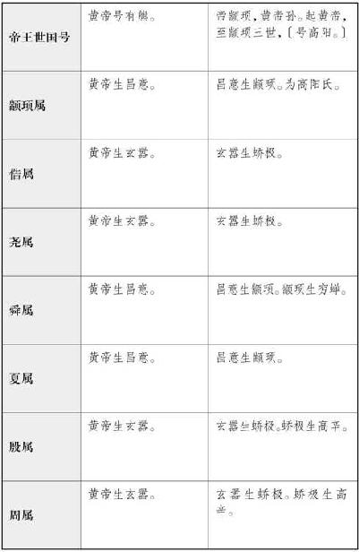
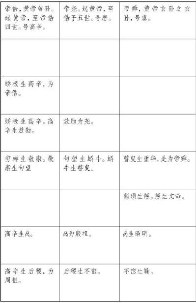
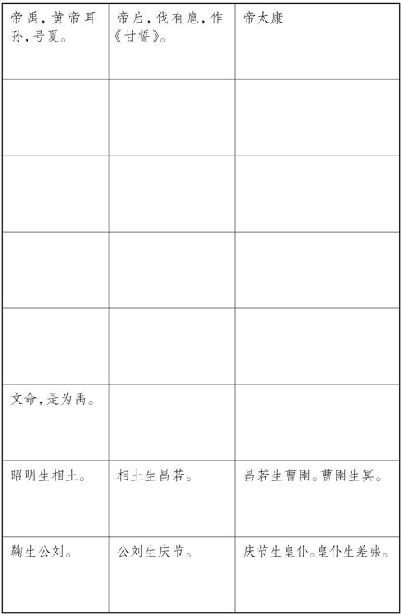
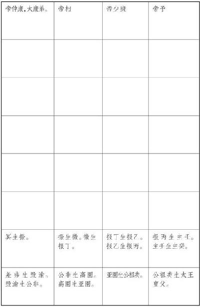
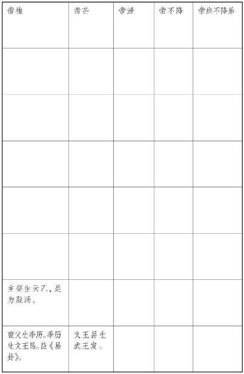

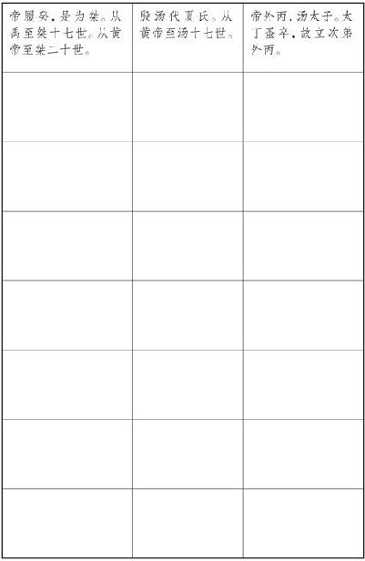
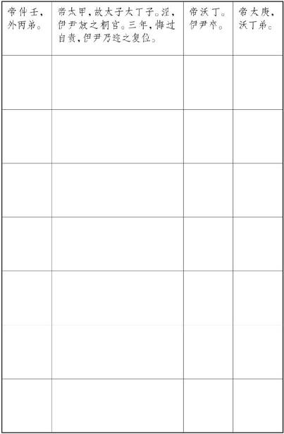
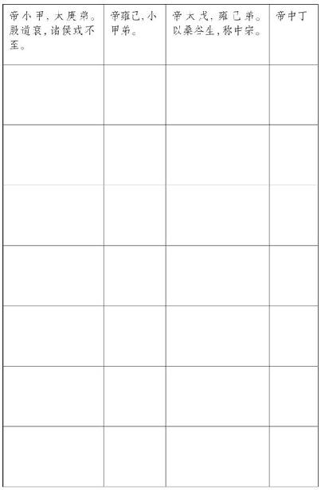
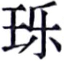
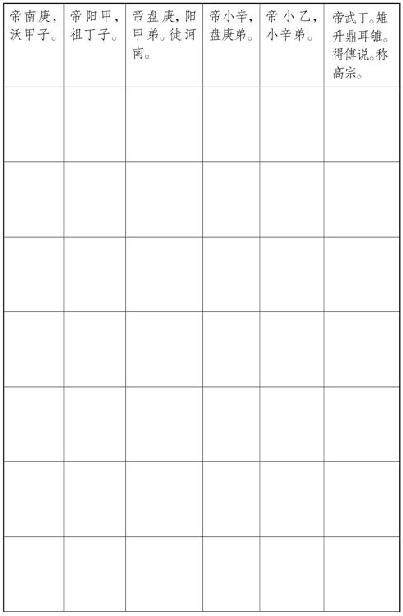
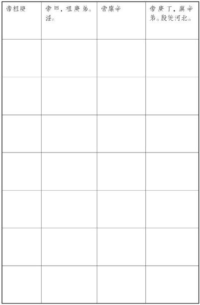
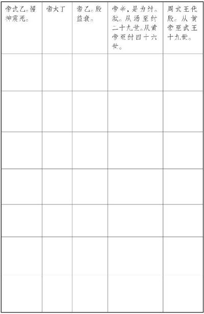


［补］张夫子【张夫子：名长安，字幼君，是汉元帝、成帝时人。事迹见《汉书·儒林传》。】 问褚先生【褚先生：名少孙，汉元帝、成帝时博士，曾增补《史记》，《史记》中的“禇先生曰”都是他的补作。】 曰：“《诗》言契、后稷皆无父而生。今案【案：考察。】 诸传记咸言有父，父皆黄帝子也。得无与《诗》谬乎？”
褚先生曰：“不然。《诗》言契生于卵，后稷人迹者，欲见其有天命精诚之意耳。鬼神不能自成，须人而生，奈何无父而生乎！一言有父，一言无父。信以传信，疑以传疑，故两言之。尧知契、稷皆贤人，天之所生，故封之契七十里，后十余世至汤，王【王：称王，为王。】 天下。尧知后稷子孙之后王也，故益封之百里，其后世且千岁，至文王而有天下。《诗传》曰：‘汤之先为契，无父而生。契母与姊妹浴于玄丘水，有燕衔卵堕之，契母得，故含之，误吞之，即生契。契生而贤，尧立为司徒，姓之曰子氏。子者兹；兹，益大也。诗人美而颂之曰“殷社芒芒！天命玄鸟，降而生商”。商者质，殷号也。文王之先为后稷，后稷亦无父而生。后稷母为姜嫄，出见大人迹而履践【履践：履行实践。】 之，知于身，则生后稷。姜嫄以为无父，贱而弃之道中，牛羊避不践也。抱之山中，山者养之。又捐之大泽，鸟覆席食之。姜嫄怪之，于是知其天子，乃取长之。尧知其贤才，立以为大农，姓之曰姬氏。姬者，本也。诗人美而颂之曰“厥初生民”，深修益成，而道后稷之始也。’孔子曰：‘昔者尧命契为子氏，为有汤也。命后稷为姬氏，为有文王也。大王命季历，明天瑞也。太伯之吴，遂生源也。’天命难言，非圣人莫能见。舜、禹、契、后稷皆黄帝子孙也。黄帝策天命而治天下，德泽深后世。故其子孙皆复立为天子，是天之报有德也。人不知，以为氾从布衣匹夫起耳。夫布衣匹夫安能无故而起王天下乎？其有天命然。”
张夫子曾经问褚先生说：“《诗经》记载契和后稷并无父亲就生了下来。现在考察一下传记，都表明他们有父亲，他们的父亲都是黄帝的子孙。难道这种说法与《诗经》所载并不违背吗？”
褚先生回答说：“不是这样的。《诗经》记载，契在卵中出生，后稷则因人迹而出生，这都是为了表明他们的天命精诚的意思。鬼与神都无法自己生成，必须要经由人才能产生，怎么能说是契和后稷没有父亲就生下来了呢？有种说法是他们是有父亲的，另一种说法就觉得他们并无父亲。信的人就传播信的观点，怀疑的人就传下怀疑之处，所以才有两种说法。尧相信契和后稷都是贤明之人，为上天所生，所以就赐给契七十里的封地，之后又经历了十多代才传到了汤，最后君临天下。尧也知晓后稷的子孙未来会成就帝业，所以就加赐后稷一百里封地，他的后代又经过了近千年，到了周文王时期才能拥有天下。《诗传》上说：‘汤的祖先就是契，契并无父亲却生下来了。契的母亲与她的姐妹们来到玄丘水洗澡，有只燕子口中衔着的卵掉了下来，契的母亲拿到了卵，本来用嘴含着，却不小心吞了下去，后来就生下了契。契天生就十分贤良，尧任命他为司徒，赐给他的姓氏为子氏。子其实就是“兹”；兹有渐渐强大之意。诗人赞美并称颂他说“殷的土地广阔无边！上天降下玄鸟，所以才产生了商”。商的意思是“质”，质就成了殷的美号。周文王的祖先就是后稷，后稷也并无父亲就生了下来。后稷的母亲是姜嫄，出门时见到了巨人的足迹，她踩在上面，就觉得怀孕了，后来就生下了后稷。姜嫄因为儿子并无父亲，就很轻视他，把他丢在路上，牛羊全都躲开而不去踩踏他。姜嫄把他丢进山里，山里的人却喂养了他。姜嫄又把他丢进大泽之中，鸟都覆盖着他，遮挡并喂养他。姜嫄因此而觉得疑惑，认为他是上天之子，就把他带回来抚养成人。尧知道他是个贤能的人才，就任命他为大农，赐给他的姓氏为姬氏。姬，就是“本”。诗人赞美并称颂他说“自从有生民之后”，辛勤修炼而成就日长，这就成了后稷称道的开始。’孔子说：‘过去尧赐给契子氏，是为了汤的出现。赐后稷姓氏为姬氏，是为了文王的出现。大王将季历任命为自己的继承者，这也表明了上天降下的祥瑞。太伯来到吴地，因此才有了周王朝代代传递的源本。’上天的命兆很难言说，除了圣人谁也无法得知。舜、禹、契和后稷等人都是黄帝的子孙。黄帝承受上天的旨意而统治天下，他的德行对后世影响深远。因此他的子孙才能都被再次任命为天子，这是上天对有德行的人的报答。人们都不知道这个道理，觉得帝王全都是从普通百姓中出现的。普通百姓怎能平白无故地兴起并君临天下呢？这都是天命使然。”
“黄帝后世何王天下之久远邪？”
曰：“《传》云天下之君王为万夫之黔首【黔首：百姓。】 请赎民之命者帝，有福万世。黄帝是也。五政明则修礼义，因天时举兵征伐而利者王，有福千世。蜀王，黄帝后世也，至今在汉西南五千里，常来朝降，输献于汉，非以其先之有德，泽流后世邪？行道德岂可以忽乎哉！人君王者举而观之。汉大将军霍子孟名光者，亦黄帝后世也。此可为博闻远见者言，固难为浅闻者说也。何以言之？古诸侯以国为姓。霍者，国名也。武王封弟叔处于霍，后世晋献公灭霍公，后世为庶民，往来居平阳。平阳在河东，河东晋地，分为卫国。以《诗》言之，亦可为周世。周起后稷，后稷无父而生。以三代世传言之，后稷有父名高辛；高辛，黄帝曾孙。《黄帝终始传》曰：‘汉兴百有余年，有人不短不长，出白燕之乡，持天下之政。时有婴儿主，却行车。’霍将军者，本居平阳白燕。臣为郎时，与方士考功会旗亭下，为臣言。岂不伟哉！”
“黄帝的后代怎么会统治天下那么长时间呢？”
褚先生说：“《经传》上记载：天下的君主就是所有百姓的元首，是祈祷上天延续百姓生命的人，他们就是帝，有福泽能够万世流传。黄帝就是这种人。五政清明而兴修礼义，遵照天时举兵征讨而取得胜利的就可称王，有福泽能够千世流传。蜀王，就是黄帝的后代，今天在汉西南五千里之外的地方，却常常来朝拜汉天子，献出贡物给汉朝，这怎会不是由于他的祖先有德行，德泽能够流传后世的结果呢？怎么可以忽视修练德行呢！君主和王者都应该以此来省察自己。汉朝的大将军霍子孟，名光，他也是黄帝的后人。这样的事只能与那些博闻远见的人谈论，本就不能对那些浅陋的人说。为什么要这样说呢？古时诸侯总是用国作为姓氏。霍氏，就是一个国家的名称。周武王曾经将他的弟弟叔处封在霍地，到了后来，晋献公消灭了霍公，霍公的后人就成了平民，在平阳周围往来居住。平阳处于河东地区，河东是晋国的领土，后来才析分成了卫国。根据《诗经》记载，也可以说成是周的后代。周兴起于后稷，后稷并无父亲却出生了。根据三代世传而言，后稷应该有个父亲叫高辛；高辛，就是黄帝的曾孙。《黄帝终始传》记载：‘汉朝已经兴起了一百多年，有个人既不高也不矮，从白燕之乡而来，掌握着天下的政事。那时还有个幼小的皇帝，这个人能让幼主的辇车倒着行走。’霍将军，就是最初居住在平阳白燕乡的那个人。臣在做郎官之时，曾经与方士们考功时在旗亭下相会，方士和我说起过霍将军的情况。难道他还不伟大吗？”
卷十四 十二诸侯年表第二
司马贞：“按：篇言十二，实叙十三者，贱夷狄不数吴，又霸在后故也。不数而叙之者，阖闾霸盟上国故也。”茅坤：“古雅可诵。孔子作《春秋》，而太史公得因之以表十二诸侯本末盛衰之迹也。”王国维：“太史公作《十二诸侯年表》，实为《春秋》《国语》作目录，故云‘为成学治古文者要删’。”
《十二诸侯年表》选自《史记》卷十四，为表中的第二篇。本表所列举的事件起自周公、召公共和执政，结束于孔子去世，表现了当时诸侯专政、五霸盛衰的春秋时代的历史，社会由大一统逐渐走向分裂。
太史公读《春秋历谱谍》，至周厉王，未尝不废书而叹也。曰：呜呼，师挚见之矣！纣为象箸而箕子唏【唏：哀叹。】 。周道缺，诗人本之衽席【衽席：卧席，引申为寝居之所，指男女房中之事。衽，寝卧之席。】 ，《关雎》作。仁义陵迟，《鹿鸣》刺焉。及至厉王，以恶闻其过，公卿惧诛而祸作，厉王遂奔于彘，乱自京师始，而共和行政焉。是后或力政，强乘弱，兴师不请天子。然挟王室之义，以讨伐为会盟主，政由五伯，诸侯恣行，淫侈不轨，贼臣篡子滋起矣。齐、晋、秦、楚其在成周微甚，封或百里或五十里。晋阻三河，齐负东海，楚介江淮，秦因雍州之固，四海迭兴，更为伯主，文武所褒大封，皆威而服焉。是以孔子明王道，干七十余君，莫能用。故西观周室，论史记旧闻，兴于鲁而次《春秋》，上记隐，下至哀之获麟。约其辞文，去其烦重，以制义法，王道备，人事浃【浃：周全。】 。七十子之徒口受其传指，为有所刺讥褒讳挹【挹，通“抑”。】 损之文辞不可以书见也。鲁君子左丘明惧弟子人人异端，各安其意，失其真，故因孔子史记具论其语，成《左氏春秋》。铎椒为楚威王傅，为王不能尽观《春秋》，采取成败，卒四十章，为《铎氏微》。赵孝成王时，其相虞卿上采《春秋》，下观近势，亦着八篇，为《虞氏春秋》。吕不韦者，秦庄襄王相，亦上观尚古，删十《春秋》，集六国时事，以为八览、六论、十二纪，为《吕氏春秋》。及如荀卿、孟子、公孙固、韩非之徒，各往往捃摭【捃摭：摘取。】 春秋之文以著书，不可胜纪。汉相张苍历谱五德，上大夫董仲舒推《春秋》义，颇着文焉。
郭嵩焘：“案厉王奔于彘而君臣之分渎，纪纲坏失，周道遂不可振，史公谱《三代世表》讫于共和，而用为诸侯年表之原始，盖有深意存焉，《年表》序所以专致慨于厉王也。其谱十二诸侯，归本孔子《春秋》。史公之着《史记》自以为继《春秋》而作，以明著书之旨也，而因采取诸子之名为《春秋》者论次之，赞语着明诸家得失，以自证其上拟《春秋》之义，言微而旨远矣。”
太史公曰：儒者断其义，驰说者骋其辞，不务综其终始；历人取其年月，数家隆于神运，谱谍独记世谥，其辞略，欲一观诸要难。于是谱十二诸侯，自共和讫孔子，表见《春秋》《国语》学者所讥盛衰大指着于篇，为成学治古文者要删焉。
太史公在读《春秋历谱谍》时，每当读到周厉王之时，总会放下书并发出叹息。说：唉！鲁国的太师挚可真是有真知灼见啊！商纣王制作象牙筷子，而箕子因为他的奢侈而悲叹。周朝的政治尚有缺陷，诗人以男女爱情生活为基础，作出了《关雎》。仁义日渐衰败，诗人创作《鹿鸣》诗以讽刺。到了周厉王，因为厌恶听到别人对他指出过失，那时的公卿都害怕遭到杀害而不敢直谏，祸乱由此而发生，结果厉王逃奔到了彘，祸乱是从京师开始的，后来朝廷由周公、召公联合起来执政。从那以后，不同的诸侯国彼此开始武力征伐，强盛的国家欺压弱小的国家，征讨也不再请示周天子。但这些诸侯国却都假借着朝廷的名义讨伐别的国家，争夺盟主之位，政令都操纵在五霸手中，诸侯任意横行，奢侈淫乱，不守法度，作乱篡权的臣子渐渐兴起了。齐、晋、秦、楚等国家在西周时都十分弱小，他们有的封地百里，有的只有五十里。晋国有三河相阻，齐国背负着东海，楚国则划长江、淮河为界，秦国所依靠的是雍州的险固，这四个国家依次兴起，相继做过霸主，文王、武王曾经褒封过的大国，都因为他们的声威而顺服。因此孔子为了彰明帝王之道，曾经为七十多个国君做事，都没能得到重用。所以孔子就向西去观阅周室的图籍，论述历史旧闻，以鲁国的历史记录为基础编成《春秋》，上起鲁隐公元年，向下一直到鲁哀公时的获麟之年。他简略了史籍所用的文辞，删去了那些繁琐冗杂的地方，以此来制定义理和法度，进而让王道更加完备，让人事得以通彻。孔子的七十多个徒弟都接受了他亲口传授的意旨，因为其中包含着批评、规劝、褒扬、隐讳、贬抑、损伤之类的文辞，所以不能从书面上表达出来。鲁国的君子左丘明担忧孔子的徒弟们都各持异端，各执己见，丧失掉《春秋》的最初面目，因此他以孔子编的历史为基础，详细阐述了他的观点，写出了《左氏春秋》。铎椒是楚威王的师傅，因为楚王无法阅读全部的《春秋》，他就选取了其中讲述成败的经验教训部分，写出了四十章，命名为《铎氏微》。赵孝成王之时，他的宰辅虞卿上采《春秋》的记载，下观当今时代的形势，也写出了八篇著作，也就是《虞氏春秋》。吕不韦，是秦国庄襄王的丞相，他也查阅了远古史迹，删减或是选用《春秋》的内容，汇集了六国的时事，写出了八览、六论、十二纪，称之为《吕氏春秋》。而到了荀卿、孟子、公孙固及韩非这些人，也都时常各自采取《春秋》的文义来著书立说，实在是难以全部记述下来。汉朝的丞相张苍采用历谱的格式写出了《终始五德传》，上大夫董仲舒推究《春秋》所包含的微言大义，也很是写出了一些文章。
太史公说：对于《春秋》来说，儒者所用只是断章取义，游说家发挥的只是它的辞令，并不重视综合其始终；钻研历法之人只看重《春秋》的年月，研究命运的人只看到《春秋》的神运，整饬谱谍的人只借鉴《春秋》的世系，所用的言词都十分简略，我们想一睹《春秋》的要旨都相当困难。因此我就将春秋时期的十二个诸侯国编成系谱，上起共和下至孔子，用年表的形式把钻研《春秋》《国语》的学者所得到的盛衰意旨详述在本篇中，为那些立志成学治古文的人提举纲要，删去芜杂。
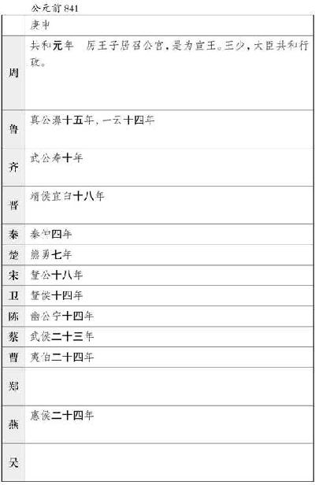
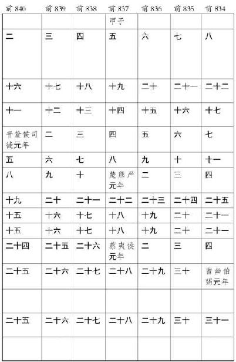
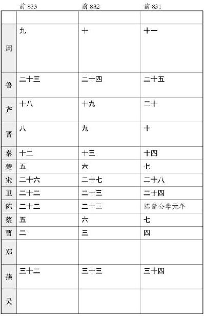
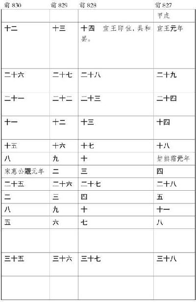
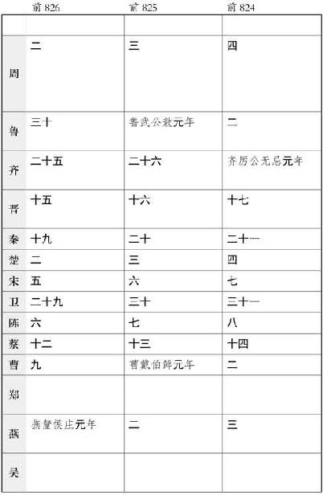
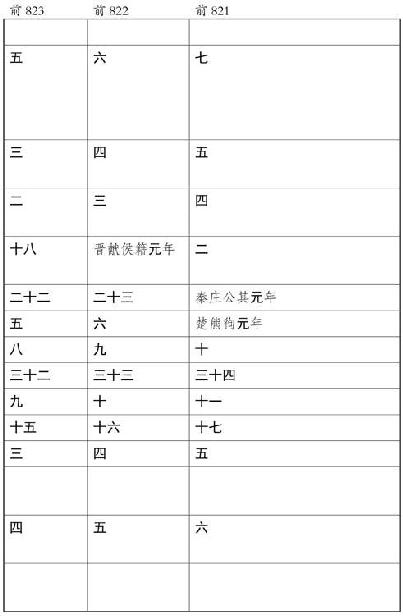
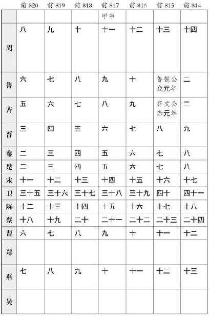

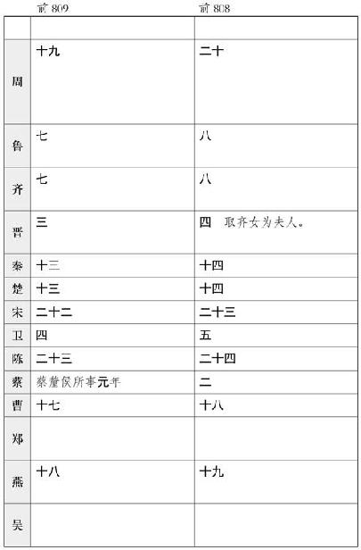
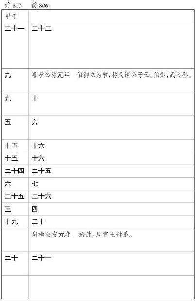
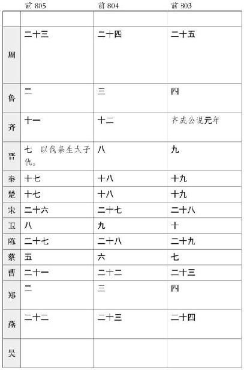
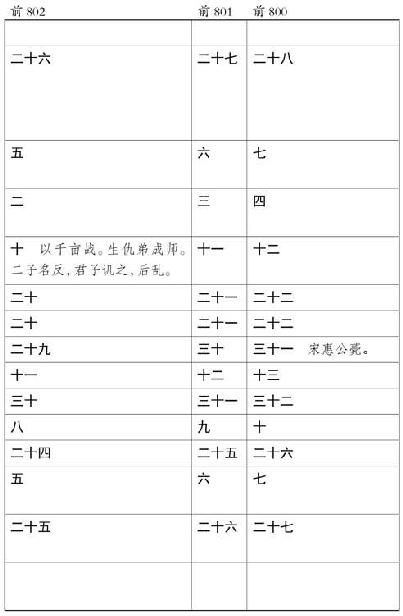
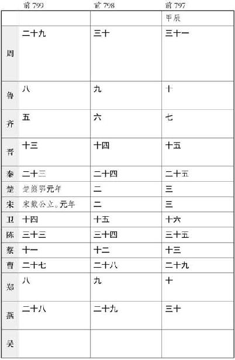
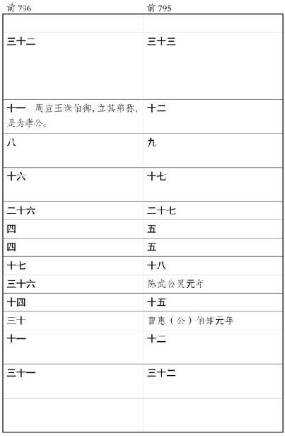
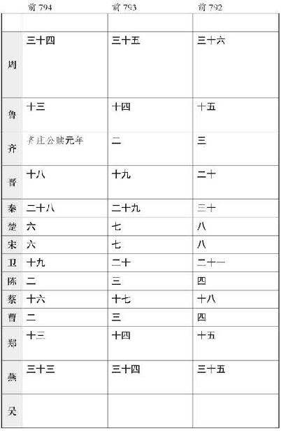
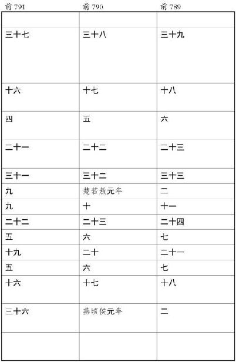
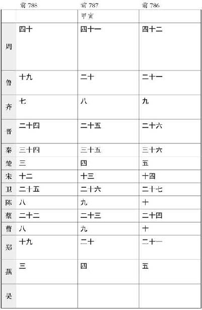

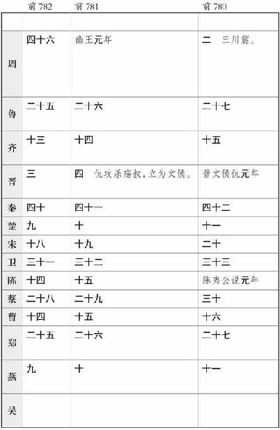
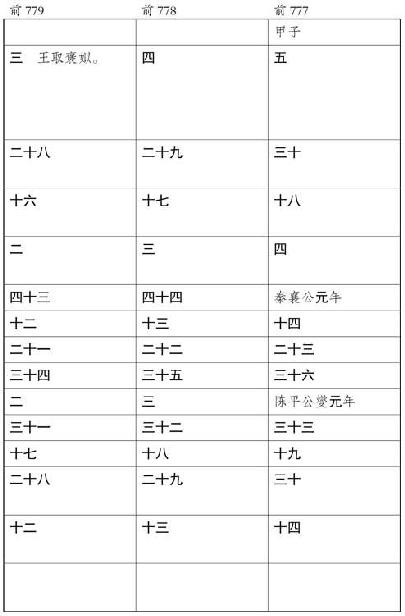
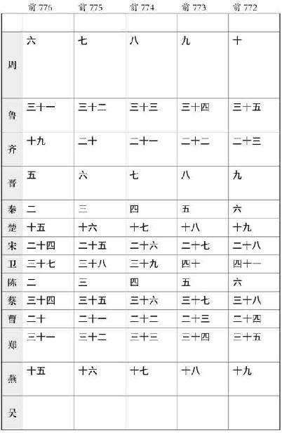
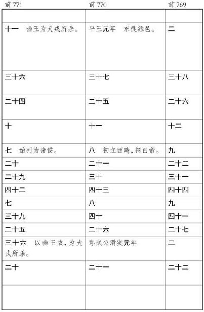
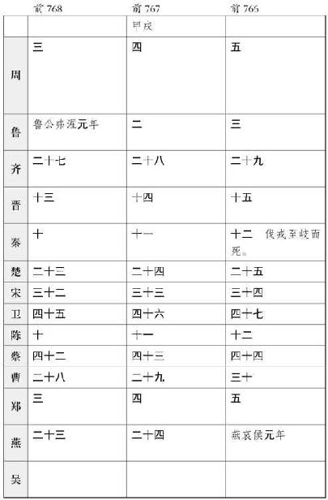
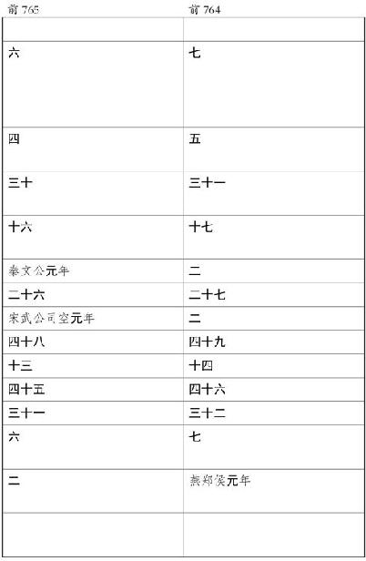

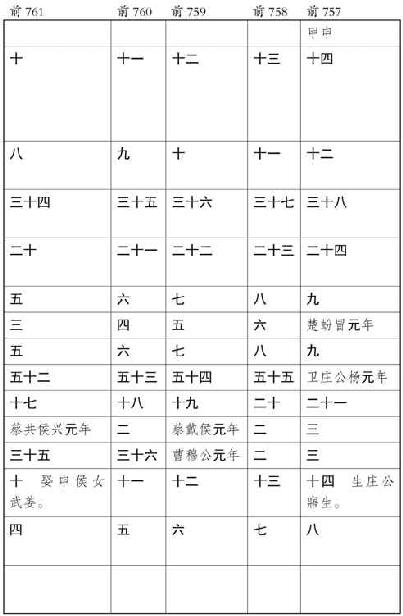


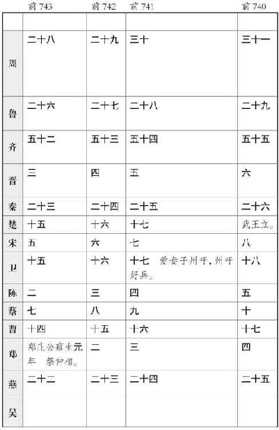

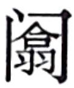
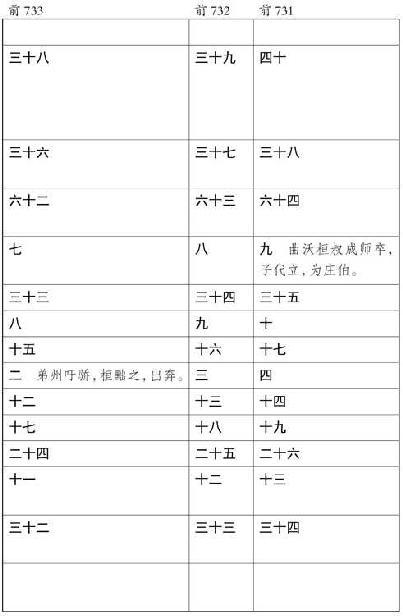
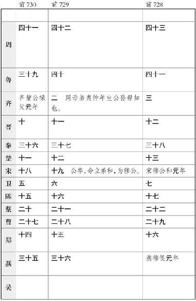
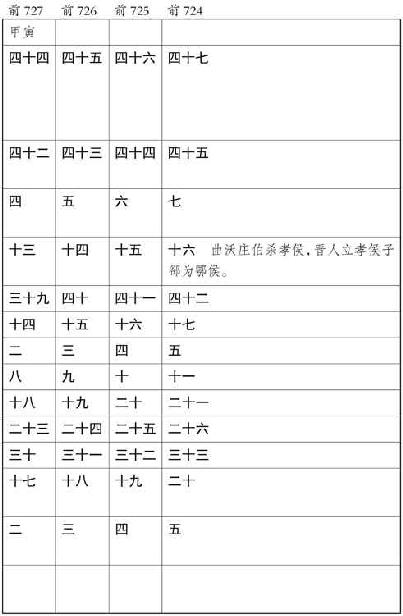
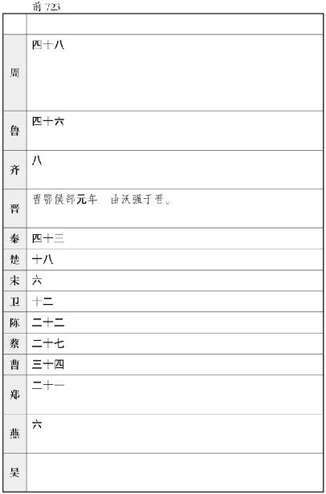
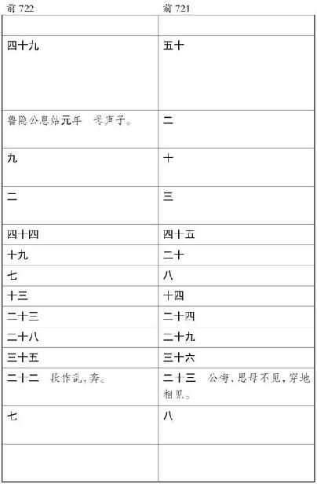
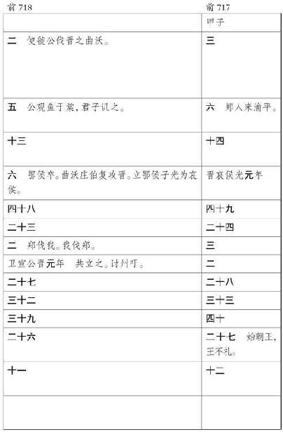
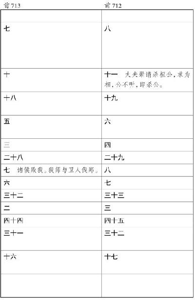
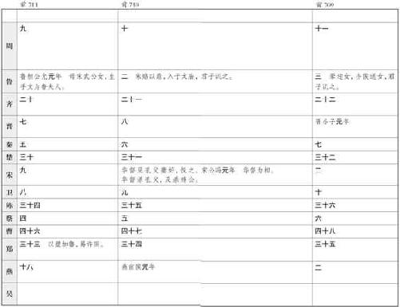


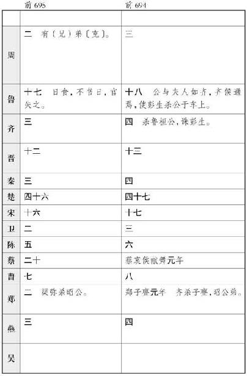
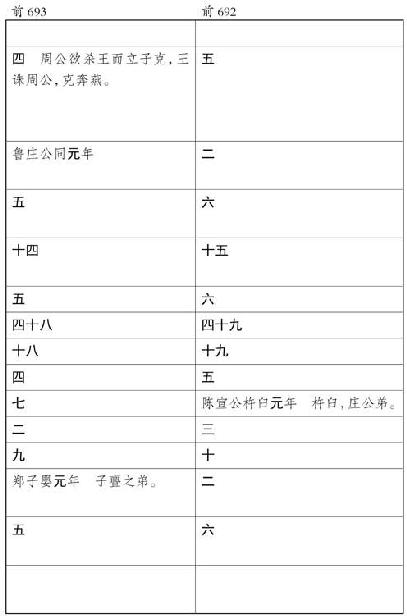

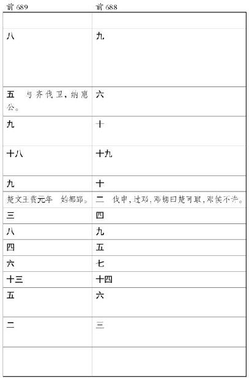


卷二 目录
卷十五 六国年表第三
卷十六 秦楚之际月表第四
卷十七 汉兴以来诸侯王年表第五
卷十八 高祖功臣侯者年表第六
卷十九 惠景间侯者年表第七
卷二十 建元以来侯者年表第八
卷二十一 建元以来王子侯者年表第九
卷二十二 汉兴以来将相名臣年表第十
卷二十三 礼书第一
返回总目录